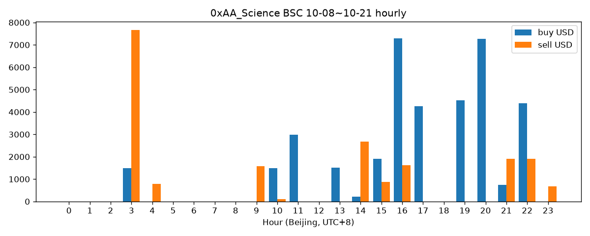

序言
本书基于 @0xAA_Science 2021-11 至 2026-10-22 的 15,372 条推文（原创/回复/转推全量）整理。与常见“交易员档案”不同，推文证据显示 0xAA 的主业是开发者教育（WTF Academy）、链上安全救援与 AI 工具，meme 交易是他公开的副业而非核心卖点。因此本书按他真实的内容重心分卷，而不是套用“交易系统”模板。每条结论后的 [#n] 均指向原推，可点击核验。
共引用 100 条原推；正文要点 [#n] 编号对应下方引文。
领域分布 · 原创推文按年
规则分类（tools/classify.py，关键词+干货分，可复现）。数字为原创推文数；括号内为全部推文数。
身份核验：从推文里还原他是谁
不采信简介自述，用他本人推文交叉验证身份、背景与关联项目。
WTF Academy 创始人：开源教程起家
💡 要点（均可溯源）
- 2022-04-01 开始连载 WTF Solidity 中文极简教程，自述目的按优先级为：提高自己的 Solidity、降低学习门槛、认识新朋友 [#1]
- 两周年自述：教程在国内出版，wtf.academy 月活约 20,000，无外部融资下获头部项目赞助/资助约 50w u [#2]
- 用国库盈余 $30,000 向 245 名 GitHub 贡献者等发放红包，社区以开源贡献为纽带 [#3] [#4]
- 其最高赞教育推文：“没有人抱怨过后悔学了智能合约”，熊市劝学 [#5]
🔍 整理者解读
0xAA 的影响力底座是“免费开源教程 + 贡献者社区”，不是喊单。这决定了他的粉丝结构偏开发者/学习者，后续 meme 推文的受众是这批人。
💬 原推精选（3 条全文）
[#1] 2022-04-01 14:47:00 北京时间 · ❤ 395 · 🔁 153 · 👁 0 · 原推我最近在重新学solidity，同时写一份中文极简教程，分享给想学但由于各种原因还没学的朋友，每周更新1-3节。\n制作教程的目的，按优先级排序：\n1. 提高我的solidity编程 \n2. 降低solidity学习门槛\n3. 认识新朋友\n第一讲是Solidity的HelloWorld，三行代码。\n#Solidity #Web3 \nhttps://mirror.xyz/ninjak.eth/WfM30QbSWB2_-9t98g05unTmb_2ZXucOAZMPDa7MX48
[#2] 2024-04-01 22:34:00 北京时间 · ❤ 152 · 🔁 20 · 👁 35342 · 原推我是在2022年4月1日开始连载 WTF Solidity 教程的，所以今天是 WTF Academy 的两岁生日。\n\n这两年，我们达成了很多成就，比如：\n1. 创作了 WTF Solidity 教程，帮助上千名开发者进入 Web3，并把它在中国出版。\n2. 建设了一个生机勃勃的开发者社区，并吸引了价值观相同的贡献者。\n3. 开发了 http://wtf.academy 教育平台，目前月活用户 20,000。\n4. 在没有外部融资的情况下，获得头部项目的赞助/资助达到 50w u，大部分将于今年解锁并用于奖励贡献者。\n5. 联合主办了2个线下的以太坊黑客松： ETH Beijing Hackathon 和 ETH Hangzhou Hackathon。\n6. 救援用户被盗钱包中的资产超 30w u。\n7. ...\n\n但是向前看，过去的成就不过只是更好的起点而已。WTF Academy 在愚人节这天诞生是很有意义的，让我们 Stay Hungry，Stay Foolish，继续建设，并在牛市挣到足够的钱！\n\n我相信未来的教育是免费的或是接近免费的，WTF Academy 对待商业化/融资一直非常谨慎。我们的链上链上教育证书预计4月会在 @Optimism 主网，并按对我们资助额度的顺序登陆其他L2，希望大家到时多多支持！\n\n最后，感谢所有贡献者和支持者！\n生日快乐 @WTFAcademy_ !
[#5] 2022-12-27 11:44:00 北京时间 · ❤ 5069 · 🔁 2697 · 👁 2294833 · 原推1. 很多人后悔没有早点接触智能合约。\n2. 没有人抱怨过后悔学了智能合约。\n所以我建议大家熊市花一些时间学习它。\n\nWTF Solidity智能合约教程，内容涵盖入门到应用，目前更新60+讲: https://github.com/AmazingAng/WTF-Solidity\n学完之后到 http://wtf.academy 上做习题自测。\n#web3 #Solidity
学术与从业背景：北大、博士、券商经历
💡 要点（均可溯源）
- 2022 学年担任北大区块链协会会长，主张“协会是公共品，不是牟利工具” [#6]
- 2026-03 自述在用 Claude 修改博士毕业论文 [#7]
- 自述约 10 年前通过哈佛 CS50 入门编程 [#8]
- 提到“十年前在富途的老主管”，即有富途工作经历（仅此自述，未见更多细节） [#9]
🔍 整理者解读
背景信息全部来自零散自述，未见完整履历推文；“博士在读/毕业”状态以 2026-03 推文为准。
💬 原推精选（2 条全文）
[#6] 2022-09-02 01:58:00 北京时间 · ❤ 598 · 🔁 132 · 👁 0 · 原推新的学年，我将担任北大区块链协会会长。我的想法：\n1. 协会是公共品，不是牟利工具，重点在放在技术和ReFi\n2. 这一年将产出很多中文web3教程和研究报告，开源免费\n3. 帮助新人进入web3 老人建立个人品牌，\n4. 2023春季黑客松\n5. 帮助更多高校建立区块链协会\n建议和合作填表：https://forms.gle/gDp1TePyCaPwrepS6
[#7] 2026-03-01 19:22:07 北京时间 · ❤ 431 · 🔁 43 · 👁 122498 · 原推我的 Claude 奴隶正在疯狂的帮我修改博士毕业论文。 我今年是否能毕业，就靠它了！ https://t.co/FdN3yx4YZi https://t.co/fD2IXpR2td
多重身份：救援队、$scihub 社区、xAPI
💡 要点（均可溯源）
- 通过 @ourRescuETH 链上救援队为私钥泄露用户抢跑救援资产（详见卷03） [#10] [#11]
- 2024-11 代表 $scihub 社区与 Sci-Hub 创始人达成 20% 代币捐赠方案，并把剩余 9% 转入双方共管 2/2 多签 [#12] [#13]
- 2026 年以 xAPI（@xapi_to）创业者身份参加 YziLabs Easy Residency S4（不丹 20 天） [#14]
🔍 整理者解读
身份重心随周期迁移：2022–23 教育 → 2024 救援 + DeSci meme → 2025–26 BSC meme + AI Agent 工具。见下方年度领域分布图。
💬 原推精选（2 条全文）
[#12] 2024-11-17 22:12:47 北京时间 · ❤ 1004 · 🔁 266 · 👁 419908 · 原推我刚刚代表 $scihub 社区，与 Alexandra Elbakyan（Sci-Hub 创始人，@ringo_ring）达成了关于 20% $scihub 捐赠计划的共识： 1️⃣ 第一笔捐赠已完成：1% 总流通量 $scihub （1000 万枚）已捐出。 2️⃣ 第二笔捐赠即将进行：10% $scihub （1 亿枚）将在今晚转出。 3️⃣ 后续计划：从 2024 年 12 月 16
[#14] 2026-09-10 16:52:39 北京时间 · ❤ 191 · 🔁 9 · 👁 124257 · 原推上个月，我代表我的项目 xAPI @xapi_to 参加了 YziLabs 的 Easy Rsidency S4，在不丹待了20天，体验感非常好。 现在 S5 开始报名了，地点在泰国，推荐创业者报名参与！ 主要的赛道： 1. 区块链 2. AI 3. BIO https://t.co/pKuqMkbh6h https://t.co/XU1KetEHF2
开发者教学法：Solidity / Ethers 教程怎么讲
他如何把晦涩的合约知识变成可传播的推文。
学习路线：先语言、再标准库、用 L2 当测试网
💡 要点（均可溯源）
- Web3 开发入门路线图：Solidity → HTML/CSS/JS → Ethers.js → React → The Graph → 写项目/黑客松 [#15]
- 入门 Solidity 后建议把 OpenZeppelin 库所有合约刷一遍 [#16]
- 零基础先看 CS50 等入门公开课 [#8]
- 坎昆升级后建议在 L2 部署练习合约代替测试网（并举例有学员因此拿到 AVAIL 空投） [#17]
🔍 整理者解读
路线强调“动手 + 开源标准库”，与 WTF 教程体系一一对应。
💬 原推精选（2 条全文）
[#15] 2022-10-03 15:56:00 北京时间 · ❤ 884 · 🔁 250 · 👁 0 · 原推Web3开发入门路线图：\n1. 学习Solidity\n2. 学习HTML/CSS/Javascript\n3. 学习Ethers.js\n4. 学习React\n5. 学习The Graph\n6. 写项目/参加黑客松\n7. 找工作\n#web3 #solidity @WTFAcademy_
[#16] 2022-11-29 23:19:00 北京时间 · ❤ 445 · 🔁 173 · 👁 0 · 原推入门Solidity之后接下来做什么？\n我的建议是把OpenZeppelin库中所有合约刷一遍。\n\n下面介绍如何结合WTF Solidity教程学习它。\nA Thread 🧵\n#web3 #solidity @WTFAcademy_ @OpenZeppelin
用真实事故讲知识点
💡 要点（均可溯源）
- 用 zkSync 上 NFT 项目 900+ ETH 因 transfer 卡死合约的事件，讲 transfer/send/call 的区别（第 20 讲） [#18]
- 用户在错误链打款到“黑洞”地址，用 CREATE 地址 = hash(创建者, nonce) 原理解释如何在另一条链同址部署取回 [#19]
- 批量转账多付的资金会留在合约、易被 MEV 抢走——借救援案例讲 Uniswap 式设计 [#20]
- 如何识别 ERC20：取 bytecode 检查函数选择器（WTF Ethers 24 讲） [#21]
🔍 整理者解读
固定套路：热点事故 → 原理一句话 → 对应教程链接。这是他教育内容传播力的来源。
💬 原推精选（2 条全文）
[#18] 2023-04-07 07:22:00 北京时间 · ❤ 50 · 🔁 12 · 👁 34152 · 原推在Solidity合约中，有3种常用的方法发送ETH: transfer, send, 和 call，其中 call 是被鼓励使用的方法，另外两种未来可能被废弃。 \nWTF Solidity第20讲: https://github.com/AmazingAng/WTFSolidity/blob/main/20_SendETH/readme.md\n昨天一个zksync上的NFT项目因为使用了transfer方法转账ETH，筹集的900+ ETH被卡在了合约中。我查阅了zkSync的文档，没有看到哪里写到不支持transfer和send方法，但目前只有call方法可以正常转账ETH。\nzkSync团队回复：这笔钱不会永久卡住，会帮助团队解决问题。我估计会在合约层面更好的transfer和send方法。 @zksync
[#19] 2023-12-29 11:02:00 北京时间 · ❤ 98 · 🔁 21 · 👁 74271 · 原推刚刚有个WTF家人想在opbnb部署airdrop合约，给小号批量转bnb。但是调用的时候切换到bnb链了，2.6 BNB被打进黑洞地址了，问我怎么救。\n\n其实是有可能救回来的：\n使用钱包创建新合约会调用CREATE操作码，新地址规则如下:\n合约地址 = hash(创建者地址, nonce)\n\n钱包在每个evm兼容链都是独立的，从0开始记，每笔交易增加1。同一个钱包，假设你在opbnb部署合约时的nonce是10，如果你在bnb链nonce 10还没使用，就能部署合约到bnb的相同地址，把钱取回来；如果nonce 10已经被使用了，就救不回来了。\n\n这个哥们比较倒霉，bnb链的nonce 10已经被使用了，钱就当交学费了吧。\n\n我们能学到什么?\n1. 调用合约时要切换到相应的网络，不然可能导致资产丢失。\n2. 创建合约的规则，详见WTF Solidity: https://github.com/AmazingAng/WTFSolidity/blob/main/25_Create2/readme.md\n3. http://Batch.money 是我学huff时写的批量转账玩具，免费使用，目前支持16个链（包括opbnb）。用的人多了我会写个v2，进一步优化gas并支持erc721👀
工程深度：Opcode、闪电贷与 mempool
💡 要点（均可溯源）
- 写出 54 字节的最小代理合约 Clone0，比 EIP-1167 少 1 字节、部署省约 200 gas [#22]
- 第 57 讲基于 Uniswap V2/V3、AAVE V3 实现闪电贷合约 [#23]
- Ethers 第 20 讲解码 mempool 中的 Uniswap 交易，点明夹子机器人原理 [#24]
- Ethers 第 27 讲：监听新部署合约以第一时间发现机会 [#25]
🔍 整理者解读
这些技术能力直接迁移到后来的链上救援（抢跑）与 meme 扫链。
💬 原推精选（2 条全文）
[#22] 2023-09-04 23:09:00 北京时间 · ❤ 89 · 🔁 15 · 👁 39436 · 原推最小代理合约（eip-1167）被设计用来减少合约部署的gas成本，整个合约用字节码写成，优化到极致，总共只有55字节（WETH合约约为~3000字节）。\n上周末，在我准备把写最小代理合约进WTF EVM Opcode教程的时候，发现它其实不是最优的，还有优化的余地。然后我尝试写出了目前最小的最小代理合约，命名为`Clone0`。\n结果：\n1. 新合约只有54字节，减少了1字节，也就是部署合约时会减少200 gas。\n2. 引入了Shanghai升级新加入的`PUSH0`指令，每次调用减少5 gas，增加可读性。\n大家可以帮我验证下，如果结果没问题的话，准备试着提个EIP。 @WTFAcademy_ \n文档，代码和测试在GitHub上: https://github.com/AmazingAng/Clone0
[#24] 2022-09-20 15:55:00 北京时间 · ❤ 24 · 🔁 9 · 👁 0 · 原推我更新了WTF Ethers极简教程第20讲：解码交易数据。\n\n这一讲，我们介绍了ethers.js的Interface类，监听、解码了mempool中的Uniswap交易。夹子机器人也是用类似方法监听用户的swap交易，并进行攻击的。\n\n#mev #web3 \n教程和代码开源：https://github.com/WTFAcademy/WTFEthers
链上安全与白帽救援
他内容中最“一手”的部分：亲自参与的救援复盘与骗局拆解。
救援方法论：用 MEV/Flashbots 抢跑黑客
💡 要点（均可溯源）
- ARB 空投：为被盗钱包写批量领取合约 + ethers.js 脚本与黑客抢领 40,000 ARB [#26]
- EigenLayer：在解锁区块用 Flashbots 打包“转 gas→解锁→转出”三笔交易 [#27]
- USDe 46,000 质押救援、AXL 31,000 枚、BTC 质押 0.2 WBTC 等复盘 [#10] [#28] [#29]
- 扩展到 Solana：结合 Jito 抢跑救回 5,005 PYTH；2025 年从黑客手里抢回 230w LINEA [#11] [#30]
🔍 整理者解读
核心模式：私钥已泄露但资产有锁定期 → 在解锁同一区块用捆绑交易抢先转走。复盘推文会写清时间线与金额。
💬 原推精选（3 条全文）
[#26] 2023-03-24 20:53:00 北京时间 · ❤ 784 · 🔁 239 · 👁 275552 · 原推1/8\nARB空投怒战黑客复盘\n起因：很多被盗钱包有 $ARB 空投资格，如果不采取任何措施，会被黑客领走。\n过程：粉丝提的钱包能领 40,000 $ARB ，我写了批量领取合约和 ethers.js 脚本，WTF贡献者帮忙优化，使用了私有节点。\n结果：成功抢救 30,000 $ARB 。\n核心代码已开源。 @WTFAcademy_ @arbitrum
[#27] 2024-04-18 21:20:00 北京时间 · ❤ 80 · 🔁 4 · 👁 29246 · 原推抢跑 EigenLayer 质押资产复盘\n粉丝被盗钱包中在 EigenLayer 质押的 1 swETH 因为尚未解锁的原因，没被黑客转走，向我们请求救援。\n我们在接到请求后，准备了 flashbots 抢跑脚本。在代币解锁的那一个区块，将 转gas，解锁，将swETH转到安全钱包 这3笔交易打包上链，成功救援资产。 @ourRescuETH ⛑️
[#10] 2024-06-03 21:29:00 北京时间 · ❤ 873 · 🔁 642 · 👁 175406 · 原推USDe质押救援复盘\n安逸上周钱包私钥泄露，损失严重。一个钱包在 ethena 质押了 46000 USDe，联系我们 @ourRescuETH 救援队负责救援。\n今晚，尽管黑客有所行动，但是我们的MEV方案更胜一筹，成功跑赢黑客，救出价值 46,000 美元的质押资产！\n委托人为了庆祝救援成功，点赞转发抽10个幸运儿，分 1000u!🎉
骗局清单：他反复科普的套路
💡 要点（均可溯源）
- 零转账/相似地址钓鱼：大额转账核对每一位、先转 1u [#31] [#32]
- 谷歌 Sponsored 广告钓鱼、过期 Discord 邀请链接被替换 [#33] [#34]
- 远程桌面（向日葵/ToDesk）、恶意插件、假 Telegram 改地址 [#35] [#36] [#37] [#38]
- EIP712 签名钓鱼、permit 授权使 revoke 失效 [#39] [#40]
🔍 整理者解读
这部分是档案里最适合直接给新人看的“避坑表”。
💬 原推精选（2 条全文）
[#31] 2022-12-15 13:14:00 北京时间 · ❤ 152 · 🔁 49 · 👁 0 · 原推🚨零转账钓鱼🚨\n"我日，转错地址了！"\n\n今天有群友向我求助，它的朋友因为零转账钓鱼，损失了40w u。\n在这里介绍一下这个骗局，避免更多人上当。\n预防办法也很简单：大额转账时，直接从钱包或交易所复制地址，并检查每一位，不要偷懒从区块浏览器复制。\nA Thread🧵
[#33] 2023-02-18 14:13:00 北京时间 · ❤ 45 · 🔁 8 · 👁 19917 · 原推⚠️谷歌骗局⚠️\n很多粉丝都是通过谷歌搜索找项目的官网。钓鱼网站利用了这点，给谷歌交了广告费，展示在前排。\n比如搜 @ensdomains 第一个结果就是钓鱼网站，进去授权后会把你的资产转走。这两天就有粉丝中招。\n如何预防？\n如图，看到带有 Sponsored 标签，就当钓鱼网站处理！
个人安全纪律
💡 要点（均可溯源）
- 学会用钱包，把 50% 资产从 CEX 转到钱包（“被盗后还能剩 50%”） [#41]
- 推特链接先怀疑钓鱼；放钱包的电脑不下载可疑软件；要私钥的都是骗子 [#42] [#43]
- 项目跑路后残留授权仍可盗币——管理好链上授权 [#44]
- 私钥被盗中“身边人作案”比例不低 [#45]
- vibe coding 时锁定依赖精确版本，防供应链攻击 [#46]
💬 原推精选（2 条全文）
[#41] 2022-11-13 16:04:00 北京时间 · ❤ 118 · 🔁 6 · 👁 0 · 原推一定要学会使用加密钱包，然后将50%的资产从CEX转移到钱包。\n为什么不是100%？因为钱包被盗后还能剩50%资产😂
[#44] 2024-06-04 20:02:00 北京时间 · ❤ 51 · 🔁 13 · 👁 39436 · 原推🚨 管理好链上授权：被一个项目rug两次，损失200w的真实案例\n\n4月初，这位粉丝因 @Blast_L2 上的 avolend 项目方的突然跑路而损失了32 ETH，联系到链上救援队 @ourRescuETH 寻求帮助。\n\n而就在今天，这位粉丝联系我，震惊地发现他在一个小时前解除质押的42 $WETH 再次被 Avolend 的项目方地址窃取。你可能会问：为什么一个已经跑路的项目还能再次从用户钱包中盗取代币？\n\n🔍 原因分析：\n我马上查了被盗地址的钱包授权信息，不出所料，这个地址仍给 avolend 合约无限授权了 WETH，导致已经rug的项目方有权限盗走代币。\n\n项目方又是怎么盗走代币的呢？avolend 合约是一个可升级合约，项目方在7天前进行了升级。新的逻辑合约没有开源，但是自升级以后，项目方多次测试可以盗取用户 WETH 的 `0x257d80a5` 函数，并在今天成功作案。\n\n🛡️ 安全建议：\n1. 及时撤销授权：对于任何不再使用或可疑的项目，务必及时在 http://revoke.cash 上取消钱包的授权。\n2. 检查合约安全性：在参与任何项目前，确保其合约代码已经过安全审核并且是开源的。\n3. 保持警惕：即便项目已经结束或者出现问题，授权仍然有效，可以导致未来的资金损失。\n\n🔗 附加信息：\n1. 被盗 42 ETH 的 txHash: https://blastscan.io/tx/0xfad924bf751cb331d5d4765343e97f8a26ef0eddcd3d37a88e02295c0ecf4127\n2. avolend合约: 0x3daa4bca629c110becb38d8fe75304505ff306bf\n3. 受害者钱包: 0x0ddd7df761649abba9dc52fa81e54ac493a9de7e
Meme 实战：他公开说过的打法
只收录他明确写出的规则与复盘；他未公开的链上操作见“核心案例/分析报告”。
BSC meme 信息源：围绕币安生态
💡 要点（均可溯源）
- BSC meme 概念几乎都出自 cz/一姐/币安官推，“新推 1 秒内看到，老推（3 年内）熟练背诵” [#47]
- 小编被抓后只剩“二圣推文”角度，dev 用推特 API + NLP 秒发 CA 的套路 [#48]
- 币安钱包专属内盘、X Mode 公平模式开盘税递减等机制解读 [#49] [#50]
- 用币安钱包网页版“监控”模块同时追踪聪明钱地址与推特 [#51]
🔍 整理者解读
他的 meme 方法本质是“信息速度 + 生态规则理解”，与卷02 的扫链/监听技术一脉相承。
💬 原推精选（2 条全文）
[#47] 2025-10-07 16:34:20 北京时间 · ❤ 480 · 🔁 116 · 👁 93410 · 原推BSC MEME 教程 相比SOL，BSC上的玩法其实更简单，更直接。 1. BSC meme概念几乎都是出自cz/一姐/币安，要密切关注几个推特账号： @cz_binance @heyibinance @binance @BNBCHAIN 要保证新推1秒内看到，老推（3年内）要能熟练背诵。 2.
[#48] 2026-01-05 00:07:17 北京时间 · ❤ 219 · 🔁 17 · 👁 63967 · 原推BSC 上 meme 的角度主要依靠cz/一姐，还有官推的推文。 现在小编被抓了，只剩下二圣推文的角度了，非常小。 这样，dev要做的就很简单 1. 以最快的速度通过推特API拿到二圣的最新推文 2. 用自然语言处理出可以作为 name 和 ticker 的短语，中英文都可以，可以多发几个ca 3. 通过程序在 four https://t.co/ab9lEzL3Oy
仓位与止盈：翻倍出本、小仓位
💡 要点（均可溯源）
- “建议大家把‘翻倍出本’纹在身上”——在 Solana 亏出来的经验 [#52]
- 一个币最多买 1–2%，买太多 meme 就玩不起来 [#53]
- $PING：群里 1.2M、推特 1.6M 时提及，到 60M；同时风险提示“Meme 币的价值是 0，不要 FOMO” [#54]
- 错过 $RALPH 400x 的教训：“不要偏见，分流的也要买” [#55]
- 自述半年前建的币安钱包从 2w u 在链上做到 50w u，但“每次都没有吃满” [#56]
🔍 整理者解读
与本站链上分析（约 2 倍卖一半、小仓位）相互印证——推文规则与链上行为一致。
💬 原推精选（2 条全文）
[#52] 2025-06-03 11:40:09 北京时间 · ❤ 169 · 🔁 13 · 👁 58582 · 原推建议大家把“翻倍出本”纹在身上。 --在solana亏出来的经验 https://t.co/tqQOdSyl7I
[#53] 2025-03-19 01:24:05 北京时间 · ❤ 619 · 🔁 450 · 👁 124007 · 原推狼仔辟谣帖 唯一一个建议：以后一个币最多买1-2%，买太多 meme 就玩不起来了，怎么做都难受。 点赞转发，抽5位幸运儿平分 5000 #mubarak ，24小时候开奖。 https://t.co/e9zcPdrGtb https://t.co/xMXTkmI83z
识别控盘与阴谋盘
💡 要点（均可溯源）
- 看前排地址：BNB 余额少、内盘买入、很少卖出 → 阴谋地址（$Loom 案例） [#57]
- BSC 土狗套路：fork 项目→four 发币捆绑筹码→等官推转发→砸盘→开下个盘 [#58]
- broccoli714 复盘：一小时 16M→100M 且同系列不同步，判断庄家控盘不追高 [#59]
- x402 盘风险：铸造是给 dev 转账，可能 rug [#60]
💬 原推精选（2 条全文）
[#57] 2025-03-22 07:13:46 北京时间 · ❤ 43 · 🔁 6 · 👁 53703 · 原推Myshell概念的AI meme $Loom 挺火，WTF Meme 群里也有人在call。 @LoomSync 但是我看了一下前排地址，top50几乎都是内盘的阴谋地址，特点： 1. BNB 余额少 2. 内盘买入：内盘时几乎没有名牌，只有提前知道消息的能买进） 3. 很少卖出套现，等着蹭 cz 和一姐。 大家小心 @heyibinance @cz_binance https://t.co/UY5ng2Ovte
[#59] 2026-01-02 00:12:28 北京时间 · ❤ 108 · 🔁 7 · 👁 48452 · 原推简单复盘下昨晚的 broccoli714 04:16 睡前例行看盘，发现 broccoli714 异动，一小时内从 16M 拉到了 100M，并且还在向上。推特上有传闻狗死了，但 broccoli 有3个meme，要死的话应该一起拉盘，不应该只有714在涨。我初步判断是有庄家控盘，不能追高，但是可以观察后续机会。 04:20 发现 mubarak https://t.co/4kKvfqMRnR https://t.co/G2KzVp7GDz
社区币与 CTO：$PEOPLE、$scihub、mubarak
💡 要点（均可溯源）
- 持仓策略：BTC 数量只增不减；ETH 可用来买 meme；持有能穿越牛熊的现象级 meme（$PEOPLE、$SCIHUB） [#61]
- $scihub 声明：社区 CTO 币、dev 已卖完跑路、非 Sci-Hub 官方代币、价格风险巨大 [#62] [#63]
- 参与 mubarak CTO：原群主卖光后禁言推新币，holder 发起新 CTO [#64]
- 在 meme 中赚钱的方法由易到难：做平台/工具 → 发币方 → 阴谋集团 → KOL → 靠近上述各方 → 靠自己发现 100x [#65]
🔍 整理者解读
他把自己定位在“工具/社区”一侧，而非纯交易员。
💬 原推精选（2 条全文）
[#61] 2024-12-05 12:05:36 北京时间 · ❤ 131 · 🔁 7 · 👁 28962 · 原推目前持仓： $BTC $ETH $PEOPLE $SCIHUB $SOL 一些L2 一些DeSci meme。 我的策略： 1. 持有的 BTC 数量只能增加，不能减少。 2. ETH 可以用来买 meme。 3. 持有能穿越牛熊的现象级 meme，比如： - $PEOPLE 代表宪法, 民粹主义, 人民, 人类。 - $SCIHUB 代表科学, 知识自由, Open Access Movement
[#65] 2024-10-30 12:24:57 北京时间 · ❤ 92 · 🔁 5 · 👁 68723 · 原推在 meme 中赚钱的几种方法，由易到难： 1. 为炒meme群体提供平台/工具 2. 成为发币方 3. 成为阴谋集团 4. 成为KOL， 5. 接近上面几方，有新币尽早买入，尽早卖出 6. 靠自己的能力发现潜力 meme，并拿到100x
风控原则与行业判断
穿越 Luna/3AC/FTX 的原则，以及对交易所、以太坊的立场。
0xAA 币圈五原则
💡 要点（均可溯源）
- 2022-11 发布“让我在 luna，3ac，ftx 爆雷时几乎不受影响的 5 条原则”线程 [#66]
- 精简版五原则：不开杠杆/合约/做空、不借钱、搭建个人品牌、留 2–3 年生活费、积累技术；2025-04 重申“这个周期依然适用” [#67] [#68]
- “不要杠杆”说三遍；以戏谑方式回答“如何戒合约” [#69] [#70]
🔍 整理者解读
这是全档案最稳定、跨 4 年重复出现的规则。
💬 原推精选（2 条全文）
[#67] 2024-12-11 13:15:27 北京时间 · ❤ 167 · 🔁 39 · 👁 26891 · 原推5条原则，让我在币圈走的更远： 1. 不开杠杆/合约/做空 2. 不借钱 3. 搭建个人品牌 4. 留好至少2-3年生活费 5. 积累技术 https://t.co/ijyWQ4WDn7
[#68] 2025-04-07 12:45:01 北京时间 · ❤ 98 · 🔁 11 · 👁 27283 · 原推0xAA 币圈五原则，这个周期依然适用： 1. 不开杠杆 2. 不借钱炒币 3. 搭建个人品牌 4. 留好至少2-3年生活费 5. 积累技术 https://t.co/ijyWQ4WDn7
周期、爆雷与暴跌复盘
💡 要点（均可溯源）
- 上周期转熊直接原因是连环爆雷去杠杆（Luna/3AC/CeFi/FTX），并据此类比本周期 [#71]
- 2022-11 发线程论证 Amber Group 接近爆雷；分析 cz 捅出 FTX 问题的动机 [#72] [#73]
- 1011 暴跌按时间线复盘个人视角 [#74]
- 认为 Bybit 被盗不利空 ETH；ETH 本轮上涨=BTC+美股 ETH 财库+EF 改 OTC，计划 4000 逐步获利了结 [#75] [#76]
💬 原推精选（2 条全文）
[#71] 2025-11-07 12:02:41 北京时间 · ❤ 133 · 🔁 13 · 👁 179815 · 原推上个周期转熊的直接原因是连环爆雷，快速去杠杆： 1. Luna/UST 崩盘，蒸发约 500 亿美元市值。 2. 3AC 受 Luna 影响倒闭。 3. CeFi 平台（Genesis/Voyager/BlockFi）连续爆雷：资金都借给 3AC 等高风险项目，归零了。 4. FTX/Alemeda 挪用用户资金爆雷。 刻舟求剑下，这个周期牛转熊的拼图： 1.
[#76] 2025-07-18 11:40:24 北京时间 · ❤ 34 · 🔁 1 · 👁 47306 · 原推我觉得这轮 ETH 技术上没有什么突破，上涨逻辑很简单： 1. BTC 给力，不断创新高。 2. 核心圈给力，在美股搞了 SBET 等类似ETH微策略，不断买入ETH。 3. 以太坊基金会在改革，持有的ETH不再砸盘卖出，而是走OTC，减少抛压。 买盘增大，卖盘减少 -> 价格上升。 我会在4000逐步获利了解，ETH可能新高 https://t.co/zwsMTabaZm https://t.co/d03EEge21W
对币安、以太坊、Starknet 的立场
💡 要点（均可溯源）
- 自称币安 8 年用户，批评《修改K线》处理方式损害公信力 [#77]
- 看好以太坊但认为路线图交付不及预期、开发者流失 [#78] [#79]
- 与何一当面交流 Four 与专属内盘分流、高控盘项目等问题 [#80]
- 支持 Starknet 成为后量子 L1，并指出 $STRK 抛压来自团队/VC 解锁 [#81]
🔍 整理者解读
整体亲币安但并非无条件；对以太坊是“批评型支持”。
💬 原推精选（2 条全文）
[#77] 2025-10-14 16:44:12 北京时间 · ❤ 645 · 🔁 111 · 👁 208959 · 原推聊一聊币安《修改K线》事件 我是币安的 8 年用户，这次大跌我没有亏损，但我必须说，币安这次《修改K线》的处理方式非常不妥，已经严重影响了品牌的公信力。 其实几天前我就看到币安公告，说部分 K 线数据异常、后续会修正。但没想到修改得这么草率。比如下图的 $ATOM ，修改前最低价是 https://t.co/xwlEGZxnOO
[#78] 2025-01-25 17:58:02 北京时间 · ❤ 27 · 🔁 2 · 👁 13659 · 原推我依然看好以太坊，但目前路线图交付没达预期，用户和开发者流失严重（我做开发者社区的，最清楚）。 即使目前修改路线图，这个周期的机会也不多了。 希望下个周期 @VitalikButerin 可以吸取教训，把用户放在首位制定路线图，不要搞虚头巴脑。
AI 转型：Agent 工具与 vibe coding
2025 年起 AI 内容占比快速上升，是他当前的主业方向（xAPI）。
工具栈与用法
💡 要点（均可溯源）
- 2026-03 自述 Agent 时间分配：Claude Code 95%、Codex 5%、Cursor 与“龙虾”<1% [#82]
- Cloudflare 一把梭：Workers/Pages/D1/R2 免费额度做 vibe coding 后端 [#83]
- Claude Code 接 Telegram、微信接龙虾（OpenClaw）的配置步骤 [#84] [#85]
- Skill 的定义与 3 个 Skill 平台；把 Uncle Bob 的思路做成开源 skill old-coder [#86] [#87]
💬 原推精选（2 条全文）
[#82] 2026-03-29 16:05:40 北京时间 · ❤ 285 · 🔁 25 · 👁 150206 · 原推当前我的 AI Agent 时间分配： 1. Claude Code：95%，主力 Agent，基本代码都用它写。 2. Codex：5%，审核 Claude Code 写的代码时用。 3. Cursor：<1%，极少数任务使用。 4. 龙虾：<1%，只有在体验新功能的时候使用。 你们呢？
[#83] 2026-02-19 18:53:58 北京时间 · ❤ 689 · 🔁 96 · 👁 125091 · 原推最近发现 vibe coding 用 cloudflare 真的很香，一把梭： 1. 计算层： cloudflare workers，每天免费 100,000 次请求。 2. 前端部署，cloudflare pages ，免费 3. 数据层 - cloudflare d1 SQLite数据库，免费 5G - cloudflare r2 对象存储，免费 10G
AI 观点
💡 要点（均可溯源）
- 大部分 Prompt/Skill 短期有用、中长期会被模型内化 [#88]
- “AI 研究员才是最容易被 AI 取代的职业”：深度学习高度经验主义 [#89]
- 2023 年即认为 ChatGPT 壁垒在大量人工标注数据而非模型结构 [#90]
💬 原推精选（2 条全文）
[#88] 2026-07-28 18:28:27 北京时间 · ❤ 37 · 🔁 2 · 👁 10335 · 原推大部分 Prompt 和 Skill 短期有用，中长期没用。 1. 常用的 prompt/skill，会被用来训练新一代模型，内化到模型中。 2. 很多 prompt 是为了弥补目前模型的不足，比如规划、代码规范。 随着模型能力提升，不需要它们也能完成用户任务。 Claude 新模型让 Claude Code 系统提示词减少 80%:
[#89] 2026-07-29 11:48:12 北京时间 · ❤ 107 · 🔁 11 · 👁 29856 · 原推AI研究员才是最容易被AI取代的职业 在 LLM 爆火之前，AI/深度学习研究一直被戏称为“炼丹”。 深度学习几乎没什么理论基础，大二学生学完高数/线代/概率论/机器学习，就能上手。 AI研究高度经验主义： 1. 研究员随机的调模型的网络结构、参数、trick（初始化/正则项/学习率/损失函数） 2. https://t.co/UpB9iXhP2j https://t.co/YWnKWQUqwc
产品化：xAPI 与 vibe 作品
💡 要点（均可溯源）
- 在 Codex 中用 xAPI 短信能力注册 OpenAI 账号，成本 $0.06 [#91]
- auth2api：复刻 Claude Code 用户指纹把 Claude Max 代理为 API（存在平台合规风险） [#92]
- PolyWorld 预测市场世界看板、助眠 App“睡觉啦”上架 App Store（声明不会发币） [#93] [#94]
💬 原推精选（2 条全文）
[#91] 2026-08-20 19:29:26 北京时间 · ❤ 331 · 🔁 29 · 👁 53115 · 原推昨天尝试在 codex 里用 xAPI 的短信能力注册 OpenAI 账号，没想到真的成功了，成本 $0.06。今天补录了视频 @xapi_to xAPI 用起来很简单，让你的 agent 安装 skill： npx skills add xapi-labs/xapi-cli 注册prompt: /xapi 使用 codex 内置浏览器注册一个 OpenAI 账号，注册短信用英国手机号接。 https://t.co/novY0bjdV5
[#93] 2026-03-23 23:48:01 北京时间 · ❤ 833 · 🔁 146 · 👁 234342 · 原推受 WorldMonitor 启发，我做了一个 Polymarket 世界看板： PolyWorld 有了 PolyWorld，你可以实时看到世界上重大事件对应的预测市场，以及“内幕人士”对事件真实概率的判断，掌握时代脉搏。 网站: https://t.co/U8tUFPaOko 开源: https://t.co/DOaaHC5qHi @Polymarket @PolyWorld_bet https://t.co/7QOUy4BI20
跟单视角的风险与噪音
给“是否跟他”的决策用：推文中可核验的商业化与噪音信号。
商业化与推广
💡 要点（均可溯源）
- 推文中常附币安钱包返佣码/邀请码 [#49] [#95]
- 历史上大量抽奖/白名单推文（本档案归入“抽奖与活动”分卷） [#96] [#97]
- 2025-12 公开一次被骗子以 $10–15k 邀请宣传基金的经历（自述以身试骗局） [#98]
🔍 整理者解读
抽奖/返佣内容不代表观点，评分时已降权。
💬 原推精选（1 条全文）
[#49] 2025-10-09 12:53:52 北京时间 · ❤ 181 · 🔁 29 · 👁 358558 · 原推今天下午会开币安钱包专属meme内盘： 1. 和 four 合作，依然是4444结尾。 2. 内盘只有币安钱包用户才能买。 3. 毕业门槛高，FDV $100w 才能到外盘，普通的大概 $10w。 4. 毕业的代币会进入一个榜单，排名是上 alpha 的考量指标。 5. 通过币安钱包交易meme，加alpha积分。 我的币安钱包返佣码: https://t.co/ge65ZnsgHU
分卷精选池
每个领域按“干货分”（正文长度、规则性措辞、互动量；回复/抽奖降权）取前 60 条原创。
Solidity 与 Web3 开发教育 · 干货分前 60 条
0xAA的2023推特流水账，真是充实的一年啊！期待2024接下来的日子！\n1月: \nETH Beijing黑客松立项 @PKUBlockchain @WTFAcademy_ \nhttps://x.com/0xAA_Science/status/1615709271261577216?s=20\n更新WTF JavaScript教程\nhttps://x.com/0xAA_Science/status/1612124361246531584?s=20\n去以色列参加Starknet Hackhouse @OnlyDust_com @Starknet \nhttps://x.com/0xAA_Science/status/1617774140089589762?s=20\n\n2月\n在以色列参加 @stark_con 大会\nhttps://x.com/0xAA_Science/status/1630428955277922304?s=20\nWTF Academy获得以太坊基金会ESP @EF_ESP 资助。\nhttps://x.com/0xAA_Science/status/1628584945357819907?s=20\n继续筹备ETH Beijing黑客松\nhttps://x.com/0xAA_Science/status/1627848229986639873?s=20\n\n3月\n和WTF贡献者参与Scaling Ethereum线上黑客松 @ETHGlobal 并获奖🏆\nhttps://x.com/WTFAcademy_/status/1640385162994409472?s=20\n年度时刻：帮泄露钱包的粉丝跟黑客抢Arb空投\nhttps://x.com/0xAA_Science/status/1639248965102362624?s=20\nWTF Solidity 智能合约教程将在国内出版\nhttps://x.com/0xAA_Science/status/1640667634026020864?s=20\nWTF Academy获得 @Optimism retropgf2 自助\nhttps://x.com/0xAA_Science/status/1641658335547228160?s=20\n继续筹办ETH Beijing黑客松\nhttps://x.com/0xAA_Science/status/1637024867097903112?s=20\n\n4月\n举办ETH Beijing黑客松！\nhttps://x.com/0xAA_Science/status/1644716965402124291?s=20\n参加香港Web3大会\nhttps://x.com/0xAA_Science/status/1652275474595467265?s=20\n更新WTF Cairo教程\nhttps://x.com/0xAA_Science/status/1650389039110062083?s=20\n举办Starknet Beijing Meetup\nhttps://x.com/WTFAcademy_/status/1644766483782971392?s=20\n\n5月\nhttp://wtf.academy 官网更新\nhttps://x.com/0xAA_Science/status/1658392936680411136?s=20\nWTF Academy获得 @Starknet EAG资助\nhttps://x.com/0xAA_Science/status/1656694798588481536?s=20\n举办Global Pizza Party Beijing @Pizza_DAO \nhttps://x.com/WTFAcademy_/status/1660612373902946304?s=20\n将WTF Ethers教程更新到v6版本\nhttps://x.com/0xAA_Science/status/1658845883629285376?s=20\n\n6月\n学习Uniswap v4并翻译白皮书\nhttps://x.com/0xAA_Science/status/1669056707920814082?s=20\n更新WTF Solidity\nhttps://x.com/0xAA_Science/status/1673724361050845184?s=20\n\n7月\n更新WTF Gas Optimization教程\nhttps://x.com/0xAA_Science/status/1676974842887958529?s=20\n更新WTF EVM Opcodes教程\nhttps://x.com/0xAA_Science/status/1684766190810628096?s=20\n更新WTF Deep RL教程\nhttps://x.com/0xAA_Science/status/1676954947735404551?s=20\n\n8月\n继续更新WTF EVM Opcodes教程\nhttps://x.com/0xAA_Science/status/1694377680685433151?s=20\n参加顺利通过博士预答辩\nhttps://x.com/0xAA_Science/status/1694574993374605477?s=20\n《WTF Solidity智能合约教程》纸质书正式在中国出版！\nhttps://x.com/0xAA_Science/status/1694965940319064567?s=20\n\n9月\n更新WTF Huff教程\nhttps://x.com/0xAA_Science/status/1706954532285305061?s=20\n筹备ETH Hangzhou黑客松 @zjubca @PKUBlockchain @WTFAcademy_ \nhttps://x.com/0xAA_Science/status/1705069637178921224?s=20\n\n10月\nETH Hangzhou黑客松圆满结束！\nhttps://x.com/0xAA_Science/status/1714282092786598349?s=20\n参加ETH HK @Scroll_ZKP \nhttps://x.com/0xAA_Science/status/1717908192947310872?s=20\n\n11月\n去土耳其参加 @EFDevconnect @VitalikButerin \nhttps://x.com/0xAA_Science/status/1724389428368433606?s=20\n参加 @ETHGlobal Istanbul黑客松\nhttps://x.com/0xAA_Science/status/1726500994262171713?s=20\n举办 @Starknet 中文训练营\nhttps://x.com/0xAA_Science/status/1723676089887703092?s=20\n\n12月\n更新WTF zk教程\nhttps://x.com/0xAA_Science/status/1734847511351935387?s=20\nhttp://wtf.academy 教育平台习题系统开始公测\nhttps://x.com/0xAA_Science/status/1733190184181907714?s=20\nStarknet中文训练营结束\nhttps://x.com/WTFAcademy_/status/1741410952753643965?s=20
我是在2022年4月1日开始连载 WTF Solidity 教程的，所以今天是 WTF Academy 的两岁生日。\n\n这两年，我们达成了很多成就，比如：\n1. 创作了 WTF Solidity 教程，帮助上千名开发者进入 Web3，并把它在中国出版。\n2. 建设了一个生机勃勃的开发者社区，并吸引了价值观相同的贡献者。\n3. 开发了 http://wtf.academy 教育平台，目前月活用户 20,000。\n4. 在没有外部融资的情况下，获得头部项目的赞助/资助达到 50w u，大部分将于今年解锁并用于奖励贡献者。\n5. 联合主办了2个线下的以太坊黑客松： ETH Beijing Hackathon 和 ETH Hangzhou Hackathon。\n6. 救援用户被盗钱包中的资产超 30w u。\n7. ...\n\n但是向前看，过去的成就不过只是更好的起点而已。WTF Academy 在愚人节这天诞生是很有意义的，让我们 Stay Hungry，Stay Foolish，继续建设，并在牛市挣到足够的钱！\n\n我相信未来的教育是免费的或是接近免费的，WTF Academy 对待商业化/融资一直非常谨慎。我们的链上链上教育证书预计4月会在 @Optimism 主网，并按对我们资助额度的顺序登陆其他L2，希望大家到时多多支持！\n\n最后，感谢所有贡献者和支持者！\n生日快乐 @WTFAcademy_ !
入门Solidity之后接下来做什么？\n我的建议是把OpenZeppelin库中所有合约刷一遍。\n\n下面介绍如何结合WTF Solidity教程学习它。\nA Thread 🧵\n#web3 #solidity @WTFAcademy_ @OpenZeppelin
我刚刚被rug了1小时。\n事情是这样的，WTF Academy派了支队伍去参与 @ETHGlobal 的 Scaling Ethereum 黑客松，由 @_daxiongya 领导。\n我们做了 solive，轻量级solidity网页编译器。给 WTF Solidity 教程用。大家可以试试 demo（手机上可以运行）: http://solive-demo.vercel.app\n我负责在deadline前提交项目，之前ETH Global官网上写的是 3.26 12:00 EST。因为我不生活在EST时区，就 google 了一下，它跟我说 EST 是 UTC-5。那么 deadline 就是 3.27 1:00 UTC+8，中国的凌晨1点。\n我开开心心的在 00:51 提交项目的时候，发现提交通道关闭了，官方说 deadline 是 00:00，我们错过了。\n我起先还以为我计算错了时差，EST 是 UTC-4，自责的睡了一觉，气的不行。今早起了又查了一下，EST就是UTC-5，EDT 才是 UTC-4，所以我昨天计算的没错，是 ETH Global计算错了。\n更tm气人的是，刚刚 ETH Global 网站把 deadline 从 12:00 pm EST 改成 12:00 pm EDT 了，证据销毁了😂。但他确实之前写的是 EST，这锅我不背。\n我有 3 个建议:\n1. 在 web3 提时间时，用UTC，而不是EST/EDT，容易造成歧义。\n2. ETHGlobal官网上的deadline改回 12:00 pm EST，这样做很可疑。\n3. 允许在 3.26 12:00 pm UTC-5 前完成的项目提交。\n@ETHGlobal @jacobwillemsma
在Solidity合约中，有3种常用的方法发送ETH: transfer, send, 和 call，其中 call 是被鼓励使用的方法，另外两种未来可能被废弃。 \nWTF Solidity第20讲: https://github.com/AmazingAng/WTFSolidity/blob/main/20_SendETH/readme.md\n昨天一个zksync上的NFT项目因为使用了transfer方法转账ETH，筹集的900+ ETH被卡在了合约中。我查阅了zkSync的文档，没有看到哪里写到不支持transfer和send方法，但目前只有call方法可以正常转账ETH。\nzkSync团队回复：这笔钱不会永久卡住，会帮助团队解决问题。我估计会在合约层面更好的transfer和send方法。 @zksync
为回应社区要求， WTF Academy 将和 ChainBuff 共同推出 WTF Solana 教程。 @WTFAcademy_ @ChainBuff @Solana_zh 基础教程分为3部分： 1. Solana基础架构，@InkyWang 负责 2. web3js，我负责 3. 合约（Anchor），Haynar 负责 目前，Solana Web3.js 第一讲已经更新！ repo: https://t.co/SvFby746oE https://t.co/0xutgFtrO7
我最近在做年度总结，整理 @WTFAcademy_ 国库的时候发现截止2023年底，我们有约 65,000 u的盈余。其中大部分是$op（来自retropgf），随着牛市来了钱越花越多。\n\n鉴于我们2023年的目标是收支平衡，所以决定用50%的资金（30,000 u）来回溯性奖励WTF贡献者们。需要大家讨论如何分配。目前贡献者中呼声比较高的方案：\n1. 发周边\n2. 发钱\n请贡献者们在帖子中讨论下：\nhttps://github.com/AmazingAng/WTF-Solidity/discussions/615\n\n另外需要大家帮我两个忙：\n1. 如果2023年有社区任务奖励漏发，请及时联系我。因为会计由我一人兼任，很容易漏发，大家多多包含。\n2. 如果你给WTF Academy进行了贡献，但是还没进WTF贡献者微信群，请联系我。\n\n2024年WTF Academy在财务上的目标仍是收支平衡。鉴于我们已经入选了 @Optimism 的retropgf3和 @Starknet 的EAG资助项目，我们会有更多的资金来资助WTF教程和社区项目。\n\n祝WTF贡献者和成员们2024新年快乐，身体健康，牛市暴富！
5条原则，让我在币圈走的更远： 1. 不开杠杆/合约/做空 2. 不借钱 3. 搭建个人品牌 4. 留好至少2-3年生活费 5. 积累技术 https://t.co/ijyWQ4WDn7
杠杆交易带来巨大的盈亏波动，会让大脑分泌大量多巴胺，像赌博一样劫持你的大脑，让你成瘾。 很多粉丝问我：已经合约上瘾了，怎么戒掉？ 这里我给大家提供一个思路： 1. 当你忍不住想开合约的时候，马上回到房间打飞机。 2. 打完你会进入贤者时间，开合约的冲动会降低。 3. 如果还想开仓？重复步骤 1 https://t.co/WfxbCkBZXs https://t.co/DgAoZOipD9
如何识别一个合约为ERC20？\n这是刚需，链上数据分析、检测貔貅、抢开盘都会用。\n但ERC20早于ERC165，无法用接口来识别。并且网上也搜不到正确方法。\n但方法其实很简单，<10行就能实现：\n1. 获取合约 bytecode\n2. 检测其否包含ERC20的函数选择器。\n教程更新在WTF Ethers 24讲: \nhttps://github.com/WTFAcademy/WTF-Ethers
⚠️貔貅盘入门⚠️\n“翻倍了，兄弟们冲！”\n“艹，貔貅了！”\n\n刚进入Web3的开发者/韭菜难免忍不住诱惑去链上冲土狗，如何识别貔貅盘很关键。我将在这个帖子介绍貔貅代币原理和预防方法。\n#web3 #solidity\nA Thread 🧵
1. 很多人后悔没有早点接触智能合约。\n2. 没有人抱怨过后悔学了智能合约。\n所以我建议大家熊市花一些时间学习它。\n\nWTF Solidity智能合约教程，内容涵盖入门到应用，目前更新60+讲: https://github.com/AmazingAng/WTF-Solidity\n学完之后到 http://wtf.academy 上做习题自测。\n#web3 #Solidity
这条 Solidity 的宣传推文 3 年获得了 200 万浏览量 200 万次成为链上科学家的机会——你抓住了吗？ WTF Academy 开源教程 - 官网: https://t.co/aV0xCZywYa - WTF Solidity 教程 https://t.co/6Emo8xB9mi - WTF Ethers 教程: https://t.co/Es1QxyuVw0 - WTF zk 教程: https://t.co/nt4wn5FiI9 https://t.co/AnXYPwiMkE https://t.co/VG6JgU7JX3
感受到了StarkNet开发者社区似火的热情🔥🔥🔥。\n因为StarkNet更新版本，之前部署合约的方法用不了了，我就在群里问了“现在推荐用什么部署工具”，马上有5个开发者帮忙回答。\nStarkNet is promising!\n这里我总结下StarkNet部署合约的工具：\nA thread🧵
刚刚有个WTF家人想在opbnb部署airdrop合约，给小号批量转bnb。但是调用的时候切换到bnb链了，2.6 BNB被打进黑洞地址了，问我怎么救。\n\n其实是有可能救回来的：\n使用钱包创建新合约会调用CREATE操作码，新地址规则如下:\n合约地址 = hash(创建者地址, nonce)\n\n钱包在每个evm兼容链都是独立的，从0开始记，每笔交易增加1。同一个钱包，假设你在opbnb部署合约时的nonce是10，如果你在bnb链nonce 10还没使用，就能部署合约到bnb的相同地址，把钱取回来；如果nonce 10已经被使用了，就救不回来了。\n\n这个哥们比较倒霉，bnb链的nonce 10已经被使用了，钱就当交学费了吧。\n\n我们能学到什么?\n1. 调用合约时要切换到相应的网络，不然可能导致资产丢失。\n2. 创建合约的规则，详见WTF Solidity: https://github.com/AmazingAng/WTFSolidity/blob/main/25_Create2/readme.md\n3. http://Batch.money 是我学huff时写的批量转账玩具，免费使用，目前支持16个链（包括opbnb）。用的人多了我会写个v2，进一步优化gas并支持erc721👀
交作业！\n我们在做一个零基础入门编程的教程，WTF JavaScript，让更多新人进入Web3开发！🙌\n刚刚更新了第 1 讲： Hello JavaScript（两行代码）。介绍了什么是 JavaScript，并写了第一个程序！✨\n欢迎大家提建议，我们不断完善！\n\n@WTFAcademy_ #javascript\n教程开源在: https://github.com/WTFAcademy/WTF-JavaScript
WTF Academy自2022年4月1日建立已近2年，感谢成员们的陪伴和付出。截至2023年末，我们有一定资金盈余。现在正值春节时期，我们决定向社区贡献者发放 $30,000 红包（以USDT形式），分为三部分：\n\n1. 阳光贡献红包（$10,000）：平分给向WTF Academy的GitHub repo提过pr并被merge的贡献者，当然也包括贡献figma/视频/社区答疑的贡献者，共245人。\n\n2. 杰出贡献红包（$10,000）：平分给为WTF Academy做出杰出贡献的贡献者，主要参考GitHub repo/Figma/视频/社区答疑记录，共32人。\n\n3. 平台贡献红包（$10,000）：平分给持续建设WTF Academy教育平台的贡献者，共9人。\n\n名单公示（公示期7天，见链接）：我们在统计时可能会有疏漏，如果漏掉了你的贡献，请谅解并留言/私信我。\n\n领取方法：在2月28日前登录 @WTFAcademy_ 官网，将钱包与GitHub账号绑定好，我们会在3月初发放红包。\n\n链接: https://github.com/AmazingAng/WTF-Solidity/discussions/626
有几个特殊的类别可以得到 Scroll 空投，挺有意思 $SCR ： 1. 持有ENS 2. 在 Gitcoin 上捐款，意味着所有给 @WTFAcademy_ 捐款的人都有 3. 在 Juicebox 捐款，意味着所有捐过 @ConstitutionDAO 的人都有 $PEOPLE @The_PeopleDAO 4. 在scroll上使用智能合约钱包 https://t.co/yuPdobE4rq
今天有个家人在opbnb用batch money转账时候，不小心在钱包把wei改成了gwei，导致一些bnb（差不多100u）留在合约中，问我能不能救出来。\n\n其实我在写batch money的时候参考了uniswap的设计，在批量转账时:\n1. 转入数额=转出，交易正常进行。\n2. 转入<转出，交易失败。\n3. 转入>转出，交易成功，但多余部分会留在合约中，任何人可以在下一笔交易中提走。\n\n所以转入>转出时，留在合约的资金一般会被mev机器人抢跑领走。幸运的是，opbnb很新，还没有什么人跑mev，所以我起床后帮这个家人抢跑出来了 😍\n\n算是比较圆满的结局，但是要吸取教训，交易时一定不要随便修改钱包参数，下次不一定这么幸运了 👀
有人问零基础怎么办，我的建议是先去看c语言，python或者javascript的入门公开课。\n10年前我入门时是在网易云课堂看的哈佛公开课cs50，教的c语言。我认为它是全世界最好的编程入门课，各大视频网站都能搜到。\n有个最新的cs50p是教python的。
WTF Solidity极简教程：英文翻译任务\n\n之前 @LanguageDAO 的朋友对这个教程很感兴趣，问要不要翻译成英文。我觉得建议很棒，发起了这个翻译任务，WTF社区和LanguageDAO社区的成员可以认领。\n\n目前任务已经被6个贡献者认领完❤️感受到了大家的爱\nhttps://github.com/AmazingAng/WTFSolidity/discussions/117
这次香港之行收获颇丰，最有意义的就是邀请了几位 @WTFAcademy_ 核心贡献者来团建。很多人一起工作了两年，但这次是第一次见面，很开心！ 👣\n\n一些 alpha:\n1. WTF Academy认证系统，救援工具 @ourRescuETH ，还有我们正在做的链游都会有重大更新。\n2.@Scroll_ZKP 会给开发者和用户空投。\n3. 我们会基于 @SlowMist_Team 的黑手册进行二创，写一个web3安全教程，欢迎感兴趣的白帽黑客们一起共创。\n4. 会在WTF Dapp教程的基础上，和 @AntDesignWeb3 一起做一个Dapp训练营。\n\n熊市2年我们已经产出了很多有意义的工作，未来2年牛市会更加疯狂！\nWTF Academy LFG！
Web3开源大学WTF Academy获得以太坊二层扩容方案Starkware的资助，将合作开发ZK和Cairo的中英文开源教程，为以太坊和Layer2培养更多开发者。\n\n@WTFAcademy_ 是一个Web3开源学院，提供免费、开源Web3技术教程，目前WTF Solidity极简教程已经更新50讲，习题系统开始公测：http://wtf.academy
“闪电贷攻击”这个词大家一定听说过，但是什么是闪电贷？如何编写闪电贷合约？\n\n在WTF Solidity教程第57讲，我们介绍了区块链中的闪电贷，并实现基于Uniswap V2，Uniswap V3，和AAVE V3的闪电贷合约。 @WTFAcademy_ @Uniswap @AaveAave \n\n教程和代码开源在: https://github.com/AmazingAng/WTF-Solidity
新的学年，我将担任北大区块链协会会长。我的想法：\n1. 协会是公共品，不是牟利工具，重点在放在技术和ReFi\n2. 这一年将产出很多中文web3教程和研究报告，开源免费\n3. 帮助新人进入web3 老人建立个人品牌，\n4. 2023春季黑客松\n5. 帮助更多高校建立区块链协会\n建议和合作填表：https://forms.gle/gDp1TePyCaPwrepS6
这几天把WTF Solidity极简教程做了一次大改版，优化了教程顺序顺序，让大家学起来更流畅。\n看了一半的朋友，这里是新旧教程顺序对照表：\nhttps://github.com/AmazingAng/WTFSolidity/discussions/72\n\n调整完毕，我将开始更新教程后面的内容：《应用》和《漏洞攻击》
我更新了WTF Solidity极简教程第54讲：跨链桥。 @WTFAcademy_ \n\n跨链桥能将资产从一条区块链转移到另一条区块链，方便用户操作多链资产。同时，它有很大的安全风险，近2年针对跨链桥的攻击导致用户损失超20亿美元。\n\n在本教程中，我们搭建一个简单的跨链桥，实现Goerli测试网和Sepolia测试网之间的ERC20代币转移，帮助大家更好的理解跨链桥。\n#Solidity #Ethereum \n\n教程和代码开源在: https://github.com/AmazingAng/WTF-Solidity/blob/main/54_CrossChainBridge/readme.md
我最近在重新学solidity，同时写一份中文极简教程，分享给想学但由于各种原因还没学的朋友，每周更新1-3节。\n制作教程的目的，按优先级排序：\n1. 提高我的solidity编程 \n2. 降低solidity学习门槛\n3. 认识新朋友\n第一讲是Solidity的HelloWorld，三行代码。\n#Solidity #Web3 \nhttps://mirror.xyz/ninjak.eth/WfM30QbSWB2_-9t98g05unTmb_2ZXucOAZMPDa7MX48
1/n\n最近 Ethers.js 大版本更新，v5 -> v6，变化挺大，几乎所有之前的脚本都要改。目前文档还不完善，迁移成本较高。\nWTF Ethers 教程正在更新到 v6 https://github.com/WTFAcademy/WTF-Ethers\n\n这个帖子介绍一下迁移到 v6 的坑，不断更新\nA Thread 🧵\n@ricmoo @WTFAcademy_ @ethersproject
部署和调用 Solidity 智能合约都需要 gas，高效的合约将帮你和用户省钱。\n\n由 WTF 贡献者 @kasoqian_eth 主导，我们在写一个 gas 优化教程: WTF Gas Optimization。基于Foundry，总结 gas 优化技巧，包括代码，解释，和gas报告。\n\n已更新 5 讲，开源在: https://github.com/WTFAcademy/WTF-gas-optimization\n#Solidity @WTFAcademy_
建议大家学 WTF Solidity 的时候，选个L2当测试网部署合约。 1. 坎昆升级引入了blob，极大的降低了gas费，部署合约的费用极低，可以替代测试网。 2. 会有福报。 一位 @WTFAcademy_ 家人因为经常用op练习合约，拿到了20000枚 $AVAIL @AvailProject 空投 😂 https://t.co/kd2UEGd7hR https://t.co/VG6JgU7JX3
1/6\nWTF Academy聚集了一帮有求知欲和分享欲的开发者，共同学习、建设Web3开源项目。\n我经常介绍WTF Solidity/Ethers教程, http://wtf.academy 学习系统。今天介绍一下社区成员正在做的开源项目，涵盖链上安全、前端、DeFi、NFT。\n相信2023会有更多社区成员参与Web3开源项目！\nA Thread 🧵
不知不觉我已经完成了Solidity极简教程的前13讲，涵盖了大部分基础内容。在进阶教程之前，我决定做一个ERC721的专题，帮助大家复习下基础知识，并且更深刻的理解ERC721合约。\n希望在学习完这个专题之后，每个人都能发行自己的NFT，并学会避开写出bug的项目方。\n\nhttps://mirror.xyz/ninjak.eth/PAsIFLAmEoMufZsXlX0NWsVF8DHpHz3OrYlooosy9Ho
我更新了WTFSolidity极简入门教程-安全专题的第一篇文章：\n\n这是Metamask项目方在2020年中写的一篇博客，其中给了Solidity程序员16条安全建议，并包含代码样例。\n\n这篇文章虽然古老，但很多建议至今仍然适用，对我帮助很大。我在没找到中文版本，就翻译了一下，供大家学习。\n\nhttps://mirror.xyz/ninjak.eth/ygaDE0QQwn3lfI-AVaw0ZMqHQtWCdzo-XV450j2camc
WTF Academy的链上证书（SBT）已经部署在Base了。目前只支持 Solidity 101，欢迎大家完成课程并铸造： https://t.co/L6kmLT9ziT 根据之前的提案，铸造证书最少捐款 0.0069 ETH，可以支持我们在教程和习题免费开源的情况下，继续发展: https://t.co/NLOxTST077 为什么选择在 @base 部署链上证书？ 1. https://t.co/8CnvckSa0P https://t.co/GA3jtefVcb
除了WTF Solidity教程, @WTFAcademy_ 还做了以下开源教程，均免费：\n\n1. WTF Ethers: Ethers.js教程，与智能合约交互必学。https://github.com/WTFAcademy/WTF-Ethers\n\n2. WTF gm: Web3黑话汇总，如果你不知道gm什么意思，可能会帮助到你。https://github.com/WTFAcademy/WTF-gm\n#web3 #Ethereum
arbitrum 空投开启，反女巫做的很漂亮，相信未来其他项目在空投时也会采取类似做法。 @arbitrum\n\n- 检查空投数量：https://arbitrum.foundation\n- 领取日期：3月23日\n- 女巫检查：https://github.com/ArbitrumFoundation/sybil-detection\n- 条件\n/ 跨链到arb\n/ 在两个不同月份交易\n/ 在不同的六个月份交易\n/ 在九个月内交易\n/ 超过4笔或与4种不同合约交互\n/ 超过10笔或10种不同合约交互\n/ 超过25笔或25种不同合约交互\n/ 超过100笔或100中不同合约交互\n/ 总交易额超 1万美元\n/ 总交易额超 5万美元\n/ 总交易额超 25万美元\n/ 向arb 存入超过1万美元\n/ 向arb 存入超过5万美元\n/ 向arb 存入超过25万美元\n\n- 规则\n\n/ 符合少于3项 - 不合格\n/ 3项 - 1200\n/ 4项 - 1700\n/ 5项 - 2200\n/ 6项 - 3200\n/ 7项 - 3700\n/ 8项 - 4200\n/ 9项 - 6200\n/ 10项 - 6700\n/ 11项 - 7200\n超过12项 - 10200
1/18\nWTF Academy 2022\nThis thread is for non-Chinese speakers who want to know about WTF Academy, a web3 open-source University aiming to onboard 10,000 developers to web3 space.\n@WTFAcademy_ #Ethereum #StarkNet #web3\nA Thread🧵
WTF贡献者 Hholz 更新了WTF Ethers教程-工具篇第2讲: 钱包签名登录。\n在未来，越来越多网站将支持通过钱包登录。这一讲，我们介绍如何通过 ethers.js 在网页上连接Metamask钱包，实现签名登录功能。\n教程和代码开源在: https://github.com/WTFAcademy/WTF-Ethers\n#ethereum #web3 #javascript
我准备把WTF Solidity教程在国内出版，有没有出版行业或者有出版经验的朋友给些建议？\n有什么可以和Web3结合的玩法？🧐
我更新了WTF Solidity教程合约安全 S08：绕过合约检查。\n\n这一讲，我们介绍了合约长度检查可以被绕过的漏洞，以及预防方法。如果一个地址的 extcodesize > 0，则一定为合约；如果 extcodesize = 0，既可能是 EOA，也可能是创建状态的合约。\n@WTFAcademy_ \n\n教程和代码开源在： https://github.com/AmazingAng/WTFSolidity
我更新了WTF Ethers极简教程第12讲：识别ERC721\n\n这一讲，我们介绍识别一个合约是否为ERC721。\n\n其中，我们利用了ERC165，因此只有支持ERC165的合约才能用这个方法识别，包括ERC721，ERC1155等。\n\n但是像ERC20这种不支持ERC165的标准，就要用别的方法识别了。\n#NFT #ERC721\nhttps://github.com/WTFAcademy/WTFEthers
最小代理合约（eip-1167）被设计用来减少合约部署的gas成本，整个合约用字节码写成，优化到极致，总共只有55字节（WETH合约约为~3000字节）。\n上周末，在我准备把写最小代理合约进WTF EVM Opcode教程的时候，发现它其实不是最优的，还有优化的余地。然后我尝试写出了目前最小的最小代理合约，命名为`Clone0`。\n结果：\n1. 新合约只有54字节，减少了1字节，也就是部署合约时会减少200 gas。\n2. 引入了Shanghai升级新加入的`PUSH0`指令，每次调用减少5 gas，增加可读性。\n大家可以帮我验证下，如果结果没问题的话，准备试着提个EIP。 @WTFAcademy_ \n文档，代码和测试在GitHub上: https://github.com/AmazingAng/Clone0
我更新了 WTF Ethers 教程第 27 讲：检测合约创建1 监听区块链新部署的合约可以让我们第一时间发现新的投资机会。在以太坊上，检测合约创建交易主要有两种方法。这一讲，我们先介绍其中简单的一种。 @WTFAcademy_ 教程: https://t.co/F0MhSU9bCf https://t.co/EoVWMdlTqs
我更新了WTF Ethers极简教程第20讲：解码交易数据。\n\n这一讲，我们介绍了ethers.js的Interface类，监听、解码了mempool中的Uniswap交易。夹子机器人也是用类似方法监听用户的swap交易，并进行攻击的。\n\n#mev #web3 \n教程和代码开源：https://github.com/WTFAcademy/WTFEthers
这段视频太精彩了！系统地讲解了： - 什么是 Sci-Hub？ - 争议性：为什么被判罚 1500 万美金？为什么创始人 Alexandra @ringo_ring 被称为知识的“盗火者”？ - 对科学的巨大贡献：无数博士生因 Sci-Hub 而顺利毕业，无数救人性命的药物因 Sci-Hub 而得以研发。 “获取知识是每个人的基本人权！” https://t.co/XjY3nlwh12
1/8\nARB空投怒战黑客复盘\n起因：很多被盗钱包有 $ARB 空投资格，如果不采取任何措施，会被黑客领走。\n过程：粉丝提的钱包能领 40,000 $ARB ，我写了批量领取合约和 ethers.js 脚本，WTF贡献者帮忙优化，使用了私有节点。\n结果：成功抢救 30,000 $ARB 。\n核心代码已开源。 @WTFAcademy_ @arbitrum
市场不好，更要潜心学技术。我更新了WTF Solidity极简教程第21讲：call\n\n我们曾在第17讲：发送ETH那一讲介绍过利用call来发送ETH，这一讲我们将介绍如何利用它调用合约。\n\ncall不是调用合约的推荐方法，但他能让我们在不知道源代码和ABI的情况下调用目标合约，很有用。\n\nhttps://mirror.xyz/ninjak.eth/vMJ0AHl3b_A5Lyey5lLdFhzkGT9wJ-D6vJpZpH0vlls
如果你已经学完了 WTF Solidity 教程，我推荐你学习 Solady 仓库中的合约。 Solady 是高度优化过的 Solidity 模版，包括常用的 ERC20 等合约，其中大量使用内联汇编压缩 gas 消耗。 之后 @WTFAcademy_ 也会和作者 @optimizoor 一起出内联汇编教程！ 链接: https://t.co/Ov0TlPhbKm https://t.co/K27KyIvmTT https://t.co/VG6JgU7JX3
来领奖咯！ 感谢币安的认可，希望产品（尤其是币安钱包）越做越好！ 感谢社区朋友们的投票，祝大家发东南西北旋风财，马到成功！ 我也会继续努力，给大家提供更好的教程和内容！❤️ 小惊喜：昨天给我颁奖的 @ShirleyXBT 说她刚入行的时候学过我写的 WTF Solidity 教程，哈哈 https://t.co/R8QDDOP1T9
相比扫链教程，大家更需要的是开盘教程，用bot养聪明钱教程。
Web3开发入门路线图：\n1. 学习Solidity\n2. 学习HTML/CSS/Javascript\n3. 学习Ethers.js\n4. 学习React\n5. 学习The Graph\n6. 写项目/参加黑客松\n7. 找工作\n#web3 #solidity @WTFAcademy_
刚和 Remix 团队开了会 🙌 @EthereumRemix\n聊了聊如何改善中文开发者使用 Remix 时的体验，反馈了一些 bug。\n之后 WTF Academy 会和 Remix 合作，将 WTF Solidity 教程嵌入到 Remix 中，帮助更多的开发者进入 Web3！\n使用 Remix 部署你的第一个智能合约: https://remix.ethereum.org/\n@WTFAcademy_ #ETHBeijing
1/6\n我更新了 WTF Solidity 教程第51讲: ERC4626 代币化金库标准: https://github.com/AmazingAng/WTF-Solidity\n\n这个帖子简单讲一下 DeFi 新标准 ERC4626。\n\nA thread 🧵\n@WTFAcademy_ @OpenZeppelin @transmissions11 #erc4626
可能大家还不知道，我最喜欢的 Solidity 编译器 Remix 支持中文了！🙌\n设置方法：\n1. 进入官网: https://remix.ethereum.org/\n2. 点击左下角的设置按钮，下拉到语言选项，选择“简体中文”。\n如果你不会使用，可以看 WTF Solidity 的 Remix 教程：https://github.com/AmazingAng/WTF-Solidity/tree/main/Topics/Tools/TOOL01_Remix\n @EthereumRemix @WTFAcademy_
1/11\nGitHub Solidity仓库 Top 10🔥\n\nSolidity是编写以太坊智能合约的语言，由于Web3的开源文化，在GitHub搜Solidity能搜到4.5万个仓库。\n\n这个帖子带大家了解下排名前10的Solidity开源项目。\n#solidity #web3 #opensource #github #Ethereum \na thread 👇
关于WTF Solidity教程的出版物，很多粉丝可能有相同的问题，这里一并回答：\n1. 书在哪里可以买？ \n 京东，淘宝，当当，拼多多都有。之后也会开放链上购买。\n2. 我是学生/亏光了，书能便宜卖吗？\n WTF Solidity是开源的，你可以在 http://wtf.academy 或 github上看免费的网页版，内容是一样的。\n3. 我没有编程基础，看这本书能学会开发智能合约吗?\n 不能，你需要有一定的编程基础，建议学习python或者javascript入门。
我更新了WTF Cairo教程第5讲：映射 Map。\n这一讲，我们介绍了 Cairo中映射（map）的基本用法，并写了一个记录账户余额的合约。Cairo 中映射的声明方法和规则与 Solidity 有些区别，比如Key的类型也可以是复杂类型，比如struct, tuple。\n@StarkWareLtd\n\n教程和代码开源在: https://github.com/WTFAcademy/WTF-Cairo
我和@Verin1005 更新了WTF Ethers极简教程第15讲：批量转账。\n\n这一讲，我们介绍了如何调用Airdrop合约在一笔交易中进行批量转账。例子中我们将ETH和WETH发送到20个地址，省事且省gas费。\n\n教程开源在：https://github.com/WTFAcademy/WTFEthers\n\n欢迎通过gitcoin给我们捐赠：https://gitcoin.co/grants/6090/wtf-solidity\n#web3 #airdrop
1/ During the @BNBCHAIN Hackathon, we built x402x, an extension of the x402 payment protocol powered by EIP-7702, designed to break x402’s “impossible triangle”. 🔗 https://t.co/4ivheC6STh A thread 🧵 https://t.co/XHN4fn7cpj https://t.co/NvoIbP7Qww
链上安全、黑客与白帽救援 · 干货分前 60 条
🚨 管理好链上授权：被一个项目rug两次，损失200w的真实案例\n\n4月初，这位粉丝因 @Blast_L2 上的 avolend 项目方的突然跑路而损失了32 ETH，联系到链上救援队 @ourRescuETH 寻求帮助。\n\n而就在今天，这位粉丝联系我，震惊地发现他在一个小时前解除质押的42 $WETH 再次被 Avolend 的项目方地址窃取。你可能会问：为什么一个已经跑路的项目还能再次从用户钱包中盗取代币？\n\n🔍 原因分析：\n我马上查了被盗地址的钱包授权信息，不出所料，这个地址仍给 avolend 合约无限授权了 WETH，导致已经rug的项目方有权限盗走代币。\n\n项目方又是怎么盗走代币的呢？avolend 合约是一个可升级合约，项目方在7天前进行了升级。新的逻辑合约没有开源，但是自升级以后，项目方多次测试可以盗取用户 WETH 的 `0x257d80a5` 函数，并在今天成功作案。\n\n🛡️ 安全建议：\n1. 及时撤销授权：对于任何不再使用或可疑的项目，务必及时在 http://revoke.cash 上取消钱包的授权。\n2. 检查合约安全性：在参与任何项目前，确保其合约代码已经过安全审核并且是开源的。\n3. 保持警惕：即便项目已经结束或者出现问题，授权仍然有效，可以导致未来的资金损失。\n\n🔗 附加信息：\n1. 被盗 42 ETH 的 txHash: https://blastscan.io/tx/0xfad924bf751cb331d5d4765343e97f8a26ef0eddcd3d37a88e02295c0ecf4127\n2. avolend合约: 0x3daa4bca629c110becb38d8fe75304505ff306bf\n3. 受害者钱包: 0x0ddd7df761649abba9dc52fa81e54ac493a9de7e
1/8\n你的链上交易是否被夹子夹过？\n你是否想像科学家一样进行链上套利？\n我将介绍 Flashbots 提供的免费产品，大纲：\n- 什么是 Flashbots?\n- 普通用户如何连接 Flashbots 节点发送交易避免被夹。\n- 开发者如何使用 Flashbots Bundle 打包多笔交易。\n#mev #flashbots #web3 ⚡️🤖\nA Thread🧵
复盘 $4 1. 这次BSC官推被盗，黑客通过钓鱼链接盗了$13k，通过发币 $4 并倾销卖了 $22k，总共获利 $35k。 2. 黑客清仓前，买币要小心；但是卖出后，砸盘的风险就消失了，反而有买入的机会，毕竟 BSC 官推被盗不常有，cz也可能会回应。 3. $4 最高摸到了 $30M，很多人赚的比黑客多，大家比黑客还牛逼。 https://t.co/i5nNoxPvFx
Uniswap 做的 L2 unichain 官宣了： 1. 底层使用了 optimism 的 OP stack，可以参考6月份 Dan Robinson 的研究文章: https://t.co/5TPdKJapbU 2. MEV 解决方案和 flashbots 合作。目前以太坊上的绝大部分MEV来自uniswap，之后可能会转移到 unichain 上。 3. 支持跨链交易 4. 支持uni质押，不会发新币 https://t.co/lX3sExn6ws
阿根廷总统办公式发帖了： 1. 背后诈骗团伙的确是 KIP！ 2. 反腐办公室会对米莱展开调查。 3. 特别调查工作组会对KIP和参与人员进行调查。 $LIBRA 真可能维权成功？一定要把骗子们就出来正法！ https://t.co/TCWMRghDle https://t.co/kEw2zAtwUx
🚨零转账钓鱼🚨\n"我日，转错地址了！"\n\n今天有群友向我求助，它的朋友因为零转账钓鱼，损失了40w u。\n在这里介绍一下这个骗局，避免更多人上当。\n预防办法也很简单：大额转账时，直接从钱包或交易所复制地址，并检查每一位，不要偷懒从区块浏览器复制。\nA Thread🧵
恭喜以下 5 位 $scihub 社区征文获奖的作者，写的太好了，我学到很多，也建议大家读一下，了解 Sci-Hub 创始人 Alexandra 的人生经历和对科学的重大贡献！ 1. 柴郡 @0xCheshire 学术界”侠盗罗宾汉“的人生经历与愿景 https://t.co/0tyvDeESb3 2. 王富贵 @eatingdao https://t.co/MKNaU50tpw
分享个资产被盗又找回的真实案例，就发生在前两天。\n\n周五，粉丝L发现blast质押的ETH被黑客转走，找我求助。我看完交易历史分析是私钥被盗，资产已经被转走所以没法救援。\n周六，我发现他的资产又神奇的回到被盗钱包里了，就问他怎么做到的。他说：昨天报了警，并且也跟身边朋友说了资产被盗并报警这件事，估计哪个朋友听完就吓得转回来了。\n\n初步分析，L的私钥在公司电脑保存了一份，被同事看到然后盗走了资产。\n\n其实私钥被盗的案例中，身边人作案比例并不低，包括但不限于朋友/亲戚/同学/同事/合作伙伴。在这种情形下，报警的确有用。\n\n最后提醒大家，永远不要在黑暗森林中考验人性。
Sci Hub 是一个“盗版”网站，有 8800 万篇研究论文可以免费获取。 不建议使用这种方法。 我们都应该努力让价值数十亿美元的学术出版商更加富有。 这是关于将 Zotero 与 Sci Hub 整合以获取免费文章的帖子。 请不要这样做😉 https://t.co/tFIFFF0fhe $scihub https://t.co/fiw6imXqXg https://t.co/ej8HA3FjDV
从黑客手里抢了 230w $LINEA ，还是出了点状况，昨晚搞了通宵： 1. LINEA 链真的很卡 2. LINEA 和 flashbots 合作，拉黑了一批地址：向它们转ETH或它们发起的交易不会被sequencer接收，也就是说不会上链。但是没有事先通知，所以也影响了我们的程序。 It ain't much, but it's honest work. https://t.co/Wv8eH5CId9 https://t.co/eJtBET6Rbw
我看了下，说 OKX钱包有安全问题的主要有两种人： 1. 蠢：小白下载了恶意软件/复制钱包私钥被劫持/私钥泄露给了多数网站或骗子，导致钱包被盗，以为是 OKX 钱包的问题。 2. 坏：知道是自己弄丢了私钥，但还是要碰辞下okx，希望能讹点钱，再不行就蹭点流量。 第一类好好学习链上安全有救，第二类没救。 https://t.co/X5hOT3YcQU
Cosmos 生态 Axelar 质押救援复盘 总结：我们连续两次击败黑客，为粉丝救援了cosmos生态 @axelarnetwork 质押的 31,000 枚 $AXL ，价值 35,000 美元。 时间线 2024.4.13 我们 @ourRescuETH 接到粉丝的救援请求：安装了恶意程序，导致私钥泄露，在cosmos生态质押的资产全部被黑客解除，其中 axelar https://t.co/USSyG73jV4
这类discord邀请链接钓鱼非常常见，大家一定要小心！科普一下:\n\n原理: discord邀请链接会过期，过期之后会被骗子替换成钓鱼服务器链接。\n\n套路: \n1. 骗子在推特收集项目方资料中已过期discord链接。\n2. 把钓鱼服务器伪装成目标的，通过自定义链接，替换目标过期链接（充值就可以）。\n3. 等待受害者上钩，与伪造的collab land交互，窃取资产。\n\n今天早些时候骗子伪装成 @The_PeopleDAO 的discord，现在伪装成了 @Stablzone ，因为它推特上挂的链接已经过期，被骗子替换了。\n\n@Stablzone you may want to look at your discord invitation link, it has been compromised by scammer.
半夜收到求救私信，睡也不是，不睡也不是。\n希望大家一定要注意钱包安全：\n1. 在推特点链接，首先考虑有没有可能是钓鱼网站。\n2. 放钱包的电脑，不要下载可疑软件。\n3. 私钥保管好，要你私钥的都是骗子。
以身试了一下社交媒体骗局，希望引起大家的注意 骗子会先盗 KOL twitter或tg号，看到有共同关注，一般人会放松警惕。 这次联系我的是 @MikeLaesig ，30k粉丝，22个共同关注，搭讪的方法是给 $10-15k 让我帮忙宣传一个基金。 https://t.co/VzmmkYqxZD
最近出现针对 iPhone 用户的恶意软件，盗取大家的密码/私钥，大家要注意： 1. 不下载不明软件 2. 系统升级到最新 https://t.co/NeujLJldi3
⚠️大家注意⚠️最近有骗子在 discord/twitter/telegram 上冒充我。大家不要上当，我不会主动dm你。\n\n其实这种骗局很常见，骗子会冒充大V或者你的朋友，私信你来骗取你的信任和资产。如果你不能确认对方的身份，最好的方法就是通过可信渠道（比如推特）来核实。不然一律当做骗子！
作为链上交互的高频用户，安全永远是第一位的。 WTF Academy 和 OKX Web3 做了一期安全特刊，介绍了： - 链上被“偷家”的真实案例 - 常见安全风险及防护措施 - 如何分辨钓鱼攻击还是私钥泄露？ - 被盗后如何应对，减少损失？ 欢迎阅读，并祝大家链上平安！ @WTFAcademy_ @okxchinese @ourRescuETH https://t.co/9ZDJY8mask https://t.co/pOe0WRwmE2
蓝战非在南非被中国人绑架了 😂 出国旅游，中国人只骗中国人，因为： - 中国人有钱，骗起来收益大 - 好面子，不敢报警或者觉得没用，骗起来风险小 - 更容易取得信任 - 能控制旅游的关键渠道：旅行社/包车/酒店/中介 - 知道怎么把钱洗出国 - 对当地人没影响，警方没动力办案 币圈的朋友要格外注意！ https://t.co/46Fq8RWbXF
昨天凌晨4点收到Beyond的求救，正好我在看中国队参加的奥运拳击，没睡。 了解被盗情况和地址，得出私钥泄漏的结论。幸亏他发现及时，抢救出了部分资产。 骗局很老套，黑客装作项目方来找你谈合作，诱导你下载恶意软件/木马。 我的建议是：就算vitalik联系你，也不要下载/运行任何软件！ 😅 https://t.co/sbo3ehi13F https://t.co/6PiF831yZK
我对 Trump 的要求很简单： 1. 保证自己的安全 2. 保持高强度整活 3. 继续给市场创造新 meme https://t.co/UwEKlpcfax
1/3\nWTF Solidity合约安全教程开始连载，向大家科普合约漏洞，避免被黑客攻击。今天更新了第一讲：重入攻击。\n\n重入攻击是智能合约中最常见的一种攻击，曾在2016年直接导致以太坊分叉为ETH和ETC（以太经典），并在之后每年造成千万美元的损失。\n\n我编了一个"黑客 0xAA抢银行"的故事，方便大家理解它。
PYTH 抢跑复盘\n昨天接到了粉丝的 PYTH 救援请求，我们在24小时内组建了5人的Solana救援队，其中包括魔改 $ORE 挖矿赚取 35万美元 的 @fried_rice 。\n\n@0xmoernon 写了初版方案， @fried_rice 优化并加入了 @jito_sol 抢跑，最终在黑客前成功救援了解锁的 5,005 枚 $PYTH ，价值 $2,900。\n\n今天开始， @ourRescuETH 救援服务正式扩展到Solana，欢迎私钥被盗的粉丝找我们抢跑资产。
⚠️ 在币圈，不仅要防钓鱼网站和恶意软件，还要防恶意浏览器插件！\n这款 Aggr Chrome插件伪装成正常的插件，但会在背后盗取你的资金！\n\n建议💡:\n操作大资金的设备做好隔离，不要装任何可疑软件和浏览器插件！
一定要学会使用加密钱包，然后将50%的资产从CEX转移到钱包。\n为什么不是100%？因为钱包被盗后还能剩50%资产😂
埃及金字塔附近有没有骗子？\n有，但是远远没有web3里的骗子多！\n如果你有半年以上的web3经验，来埃及玩就像过马路一样容易。\n另外不要把景区骗子和其他埃及人混为一谈。开罗有2000万人口，大部分都对游客很好，很尊敬中国，推荐大家来玩！
一个叫MEVbots的软件声称能给用户带来套利交易收入，其实把用户账户里的钱都用后门转走了😂\n\n不要下载可疑软件\n不要下载可疑软件\n不要下载可疑软件\n\n你图他的利润，他图你的本金。
刚睡醒，就看到 Bitget 交易所热钱包被朝鲜黑客盗了 3.5亿u。 跟上次 bybit 被盗的14亿u相比，影响有限，但也不少了。 在 AI 的加持下，估计朝鲜黑客还会干出惊天大案来，大家注意保护好自己的资产。
前端常用库 axios 疑似受到供应链攻击，最新版本带有恶意软件！ 最近每天都有供应链攻击，大家 vibe coding 的时候一定要锁定依赖版本，避免使用 latest。 你可以跟 AI 说： “在所有项目中，安装依赖必须锁定精确版本（禁止 ^ 和 ~），并生成 lockfile。不要使用 latest。” https://t.co/wOB7UCaz9O https://t.co/uv8wg8RRDd
BTC 质押救援复盘 昨晚，一位私钥泄露的用户联系到我们 @ourRescuETH 链上救援队。 他钱包中质押在 @bouncebit 的 BTC 已经被黑客解锁，锁定期不足12小时，如果不采取措施，很可能被黑客转走。 我们立即部署了两套 MEV 救援方案，并且在今天凌晨抢跑了黑客，成功救援 0.2 WBTC，价值 13,000 美元。 https://t.co/1RQA4qlHK2
抢跑 EigenLayer 质押资产复盘\n粉丝被盗钱包中在 EigenLayer 质押的 1 swETH 因为尚未解锁的原因，没被黑客转走，向我们请求救援。\n我们在接到请求后，准备了 flashbots 抢跑脚本。在代币解锁的那一个区块，将 转gas，解锁，将swETH转到安全钱包 这3笔交易打包上链，成功救援资产。 @ourRescuETH ⛑️
有粉丝求助我，3天前hashflow攻击丢了 3500u，怎么找回。\n很幸运的事，这次hashflow被黑是白帽攻击，用户资产可以找回。\n找回方法hashflow官方在下面的推特里给出: https://drive.google.com/file/d/10xonekMXxvBEEmstFP9xmNP5aaKCUzzR/view\n如果你没受影响，也尽快revoke给hashflow的授权: http://revoke.cash
看了一下，Venus的确没被黑，应该是一个精心设计的骗局。被骗的大户是一个defi巨鲸，地址 0x563617b87d8BB3F2f14BB5a581f2E19F80b52008 （简称巨鲸0x56），可以在推特搜到: https://t.co/gSzvINbdOE 过程 1. 2025.9.1 晚11点30左右，黑客部署恶意合约 0x7fd8F825E905c771285F510D8e428A2b69A6202a https://t.co/NfZDJ650Rr https://t.co/UQwzbswic7
有用户因为签名钓鱼损失 228 w u。\nEIP712 签名对粗心的人可能也没那么安全，黑客拿到你的签名后，就能转走你的资产。\n一定要仔细阅读签名阅读之后，再签名！\n教程: https://x.com/0xAA_Science/status/1651857578920644609?s=20
两年前就有的骗局，现在依然有人上当。这次受害者被骗了 6800w u，黑客美了。\n\n简单来说，黑客会根据你的转账历史，伪造一个前后几位都一样的地址，然后给你转0个代币（或数量相同的假代币），诱导你给错误的地址转账。\n\n如何避免？\n1. 转账的时候核对每一位数字。\n2. 先转 1u，确认能收到后再转大额。
⚠️向日葵漏洞⚠️\n“我打开电脑看到有人操作我的小狐狸”\n\n这两天很多人因为撸毛使用向日葵（远程桌面软件），钱包被盗了。\n黑客可以利用这个漏洞，远程控制你的钱包转钱。\n电脑用过远程桌面软件的，包括向日葵，todesk，TeamViewer等，建议卸载！
Mango Market的黑客有点骚啊！\n他盗完了人家的协议，在realms上写了个提案，要求Mango团队把国库的7000w USDC拿出来赔偿投资者。\n黑客可以还回盗来的一部分来偿还亏空，大概4000w u？\n黑客拿盗来的治理代币，投了大量的yes选项。😂\n这个黑客把DeFi和DAO都玩明白了！
WTF Academy成员提醒：假Telegram骗局，黑客已获利3000w u\n常用telegram的老哥注意防骗, 有部分黑客做了假的telegram能实时更改你在和他人聊天过程的收款地址，比如你发的收款地址是A，他能实时识别这个地址并篡改成自己的地址X，导致不必要的损失。昨天有认识的人被骗了挺多，谨防受骗。
新型比特币大会直播骗局，已经有人损失了他的所有sol ⚠️ 很多人在等着看比特币大会直播，但骗子也在盯着。 你在Youtube搜的直播频道，很可能放的是骗子用AI生成的录像，里面Deepfake的假Elon正在说：把你的币转到下面二维码的地址，我就会返还双倍。 不要信，已经有人上当了！ https://t.co/OjEIZeiy51
我看有人写攻略说被泄露的钱包用 http://revoke.cash 取消黑客 $Arbi 的授权，就能防止被盗。\n其实不能，因为 $Arbi 用的是 erc20Permit，其中有个 permit 方法，用被泄露的私钥签名就能直接获得授权，不需要提前调用 approv。因此，你 revoke 了也没用。\n可以看出黑客技术并不行，还把几千个钱包都 approve 了。
昨天凌晨，旧金山出现了一起针对加密投资者的持枪入室抢劫，物理黑客盗走了价值 1100万u 的加密货币。 这起事件在外网有些热度，不仅是因为性质恶劣，而是因为被盗者 Joshua 的现男友是 Sam Altman （OpenAI CEO）的前男友，都在吃瓜 😂 敢问阁下，遇到持枪的物理黑客该如何应对？ https://t.co/117ywgwtTH https://t.co/vwGRYyvDoa
大家可以总结下为什么SexDAO会rug跑路，而PandaDAO会退款。\n#PeopleDAO
⚠️谷歌骗局⚠️\n很多粉丝都是通过谷歌搜索找项目的官网。钓鱼网站利用了这点，给谷歌交了广告费，展示在前排。\n比如搜 @ensdomains 第一个结果就是钓鱼网站，进去授权后会把你的资产转走。这两天就有粉丝中招。\n如何预防？\n如图，看到带有 Sponsored 标签，就当钓鱼网站处理！
⚠️恶意软件提醒⚠️\n有粉丝近期下载了这两个软件后全链钱包被盗：ToDesk（远程桌面），QuickQ VPN。\n估计是其中一个包含木马程序，我觉得远程桌面的嫌疑大一些，大家注意。
在币圈，必须特别警惕安全问题。\n昨天WTF交流群里很有经验的开发者也差点被钓鱼网站骗了。\n这类网站经常说"小狐狸有安全漏洞"，"opensea要更新"，然后利用你的焦虑来骗私钥和授权。\n你要做的就是深呼吸，认准官推和官网，不要去点击可疑网站！\n#ScamAlert
被盗钱包真的会让人 PTSD。 这是我们救援团队 @ourRescuETH 的一个客户，之前在 ETH，Cosmos和Near 帮他救援了上百万的资产。现在他钱包有点小动静都会找我们，非常敏感 😂 大家一定要注意自己资产安全！ https://t.co/dA9I1H2sAe
被盗的老哥是一名web3开发者，分享过web3技术和币圈防盗技巧，但还是被盗了。\n这说明了在币圈，你再小心都不为过！因为有了授权，偷了私钥，你钱包里的所以币都是黑客的了！\nWTF学院也会开一个币圈反诈专题，希望box也能来分享。\n好好哭一场，然后尽快走出来。\n，继续buidl！共勉
这几个推特分享的脚本都是盗钱包的，大家不要下载。 https://t.co/4lXK00fOS7
最近针对开发者的github邮件诈骗太频繁了，一天10几条。感觉是朝鲜黑客上次在 Venus 事件亏了钱，在疯狂找补。 Scam方法：黑客在币圈repo中创建issue，内容就是质押/空投等信息，骗你点击钓鱼链接。issue提醒邮件会通过github邮箱发出的，所以不会被识别为钓鱼邮件。 相信聪明的开发者一定不会上当！ https://t.co/kT823EIMfi
以太坊上的著名MEV bot JaredFromSubway 被攻击，损失约 1500wu。 根据 Blockaid 的分析，攻击者利用 bot 自动化发现 mev 的机制，部署恶意合约骗取了 bot 授权，然后卷走资金。 黑客给三明治受害者出了口恶气 😂 https://t.co/mXasTPv5wj https://t.co/jx2NXhNlEj
今天早些时候，我们成功从一位委托人因私钥泄露而被盗的钱包中，救回了 133,700 枚 $PENDLE，价值高达 38 万美元！💰 这是我们对抗黑客的又一次胜利，同时也刷新了我们的单人单次最大救援记录！🛡️ 感谢委托人的信任，感谢慢雾的支持 ❤️ Earlier today, we successfully rescued 133,700 $PENDLE https://t.co/FqcnoHov6U
片里有毒 ☠️ 国家互联网应急中心监测发现，影视鉴赏类软件 “荐片播放器”内置后门，可能在用户不知情的情况下采集信息，下载程序，执行任意代码，从而盗取用户资产，影响超过 70万台设备。 已经有粉丝中招。 建议大家平时看片/跑agent采用单独的设备，可以单独购买一台 mac mini。 https://t.co/BVZo80RP4p
如何一句话在网络面试中识别出朝鲜黑客？ 让他们“说一句侮辱金正恩的话” 朝鲜黑客是说不出的，因为会要他们的命。
我在写操纵预言机的教程，发现这个月一个Arbitrum上的DeFi协议Lodestar @LodestarFinance ，一个Compound fork，因为这个原因被攻击了，损失650万u。\nLayer2虽然扩容了以太坊，但安全性并没有增强。随着Layer2进入主流，越来越多的黑客事件将发生在Layer2。\n这次攻击的分析: https://medium.com/@BlockAuditReport/lodestar-finance-6-5-million-exploit-decrypted-blockaudit-675026b9dd12
大家注意，旧的PeopleDAO discord邀请链接已经过期并被骗子占用了，大家不要点。\n新的discord邀请链接: https://discord.com/invite/9pCtf4xGz2
我还以为 Anthropic 说 mythos 模型太过强大，怕用于找漏洞一直没开放是危言耸听。 结果有人用 opus 4.8 找出了 $ZEC 无线增发的漏洞？ 我准备找找 $BTC 和 $ETH 的漏洞 https://t.co/EUiCvuSFtP
最近 Starknet 出现了一个新骗局：\n骗子批量给用户发送伪造成治理代币的scam代币，骗你去钓鱼网站授权真正的代币，从而盗取你的资产，不要上当！\n\n如果授权了，可以用下面的工具取消授权:\n1. StarkRevoke: https://x.com/starkrevoke/status/1700508164481830947 \n2. https://x.com/FibrousFinance/status/1682467419258855427?s=20
现在对我的 FUD 其实都不算啥，你们猜我上个周期接受过最狠的 FUD 是啥？ “0xAA 是 AssangeDAO 的发起人，维权找他！” 我TM是被骗了几百万的受害者好不好😂 不过我也常想，如果我真是 AssangeDAO 的发起人，一切会不会不一样？ 不过现在阿桑奇已经释放，我支持 AssangeDAO 投资人维权！ https://t.co/MdJofwbnsb
密码管理器LastPass有超过2500万个用户，但是被黑了😂\n10月25日，有440w u从受害者的钱包被黑客转走。\n我们能学到什么:\n1. 不要使用任何第三方密码管理器来管理你的私钥。\n2. 如果使用过，请尽快把资产转移到安全的钱包。
我在想一个问题，WTF要不要开源一些刷空投脚本，以免用户用到盗私钥的？\n谁同意，谁反对？
Meme 实战与社区币 · 干货分前 60 条
先要解决 $scihub 捐赠的问题 1. 需要给A姐解释什么是 fair-launch meme coin 2. 如果直接捐赠 20% 太多，那要找一个更平缓的捐赠方案，把20%捐赠出去。我相信没有捐不出去的钱。 3. Alexandra Elbakyan @ringo_ring 为运营 Sci-Hub 付出了巨大牺牲，请大家沟通时一定要尊重。 4. 大家要清楚一点，
今天下午会开币安钱包专属meme内盘： 1. 和 four 合作，依然是4444结尾。 2. 内盘只有币安钱包用户才能买。 3. 毕业门槛高，FDV $100w 才能到外盘，普通的大概 $10w。 4. 毕业的代币会进入一个榜单，排名是上 alpha 的考量指标。 5. 通过币安钱包交易meme，加alpha积分。 我的币安钱包返佣码: https://t.co/ge65ZnsgHU
在 meme 中赚钱的几种方法，由易到难： 1. 为炒meme群体提供平台/工具 2. 成为发币方 3. 成为阴谋集团 4. 成为KOL， 5. 接近上面几方，有新币尽早买入，尽早卖出 6. 靠自己的能力发现潜力 meme，并拿到100x
BSC 链的开发者真的很匮乏，现在有一个套路： 1. 土狗盘子fork一个项目在BSC上 2. 在four发个meme，捆绑大部分筹码 3. 等 BNB Chain 官推转发，然后cx这个ca 4. 浇给 5. 开下个盘子 @BNBCHAIN
最近发现 vibe coding 用 cloudflare 真的很香，一把梭： 1. 计算层： cloudflare workers，每天免费 100,000 次请求。 2. 前端部署，cloudflare pages ，免费 3. 数据层 - cloudflare d1 SQLite数据库，免费 5G - cloudflare r2 对象存储，免费 10G
虽然大家现在很 FOMO，但我还是要明确一下： 1. $scihub 是社区meme代币，发币的dev已经卖完跑了。 2. $scihub 不是 Sci-Hub 官方代币，不隶属于 Sci-Hub ，也不拥有 Sci-Hub。 3. meme 代币的价格波动非常剧烈，你的投资可能会有巨大风险。
1. $scihub 是社区CTO meme代币，发币的dev已经卖完跑了。 2. $scihub 不是 Sci-Hub 官方代币，不隶属于 Sci-Hub ，不拥有 Sci-Hub。目前 Sci-Hub 官方支持 $scihub 。 3. meme 代币的价格波动非常剧烈，你的投资可能会有巨大风险。 4. $scihub 不会损害 Sci-Hub 以及创始人 Alexandra 的 integrity。 https://t.co/c8LscqCnBq https://t.co/1EG7HNdNTy
Sci-Hub 所面对的寡头学术出版集团非常强大： 1. Elsevier：旗下有《柳叶刀》、《Cell》等著名期刊，隶属于励讯集团（RELX Group），市值为 $90B。 2. Taylor & Francis：隶属于英富曼集团（Informa），市值为 $14B。 3. Springer Nature：旗下有《Nature》，上市公司，市值为 $5B。 $scihub 🐦⬛🔑 https://t.co/3UzuB7dNbD
目前持仓： $BTC $ETH $PEOPLE $SCIHUB $SOL 一些L2 一些DeSci meme。 我的策略： 1. 持有的 BTC 数量只能增加，不能减少。 2. ETH 可以用来买 meme。 3. 持有能穿越牛熊的现象级 meme，比如： - $PEOPLE 代表宪法, 民粹主义, 人民, 人类。 - $SCIHUB 代表科学, 知识自由, Open Access Movement
BSC 上 meme 的角度主要依靠cz/一姐，还有官推的推文。 现在小编被抓了，只剩下二圣推文的角度了，非常小。 这样，dev要做的就很简单 1. 以最快的速度通过推特API拿到二圣的最新推文 2. 用自然语言处理出可以作为 name 和 ticker 的短语，中英文都可以，可以多发几个ca 3. 通过程序在 four https://t.co/ab9lEzL3Oy
明天 BSC 新的公平模式要开了，改名为 X Mode： 1. 开盘税从 100%（0区块）递减到1%（6区块），大概 4s。比如开盘0区块买 1 BNB 的代币，只能拿到 0.5 BNB 的。 2. 税收费用会在内盘发射后买入代币并销毁，这个机制很棒。 3. 所有钱包都可以买内盘，不限于币安钱包和 Trust Wallet。 https://t.co/AVBrW4jXpa https://t.co/nSaPrtgehZ
币安正在补齐钱包端的短板，最近试了下币安钱包网页版，用户体验提升很大。 1. 上线了战壕页面（Meme Rush），方便扫链。 2. 交易上链速度更快，大概在1s就能上链。这主要归功于BSC的提速，现在每 0.75 秒出一个块（半年前还是 3 秒）。 3. 目前钱包App端目前活动期间免交易费，但是网页版开始收 0.5% https://t.co/B9saOE7zXz
Sci-Hub Expands Free Access to Papers with $scihub Donation 🐦⬛🔑 🧵 1. Recently, Sci-Hub founder Alexandra announced in the official Telegram channel: Sci-Hub is fundraising ! Now you can donate with new Sci-Hub meme coin over Solana network: $scihub : https://t.co/XwIIPeReWx https://t.co/NSlPV933Bd
垄断学术出版商 Elsevier 旗下期刊《JHE》的主编们对 Elsevier 提出抗议，并集体辞职！ 理由包括： 1. 期刊对每篇文章收费 $3990，让大部分作者难以承受。 2. 削减编辑岗位和报酬。 3. 用不成熟的 AI 代替编辑工作。 学术垄断集团比我们想象的更脆弱，Sci-Hub 必胜！ $scihub https://t.co/rXHxYvMBW5 https://t.co/VdPUg1B7tT
踏马企稳开始反弹，可惜我已经没什么货了。剩下一点不卖了，拿到上现货。 角度： 1. 踏马（TM）是中文最流行的语气助词，以前是脏话，但现在偏中性。 2. 今年是马年。 3. BSC 基金会回购两次了，币安人生目前也是两次。 拉到100M，自有大儒替我踏马辩经！ https://t.co/KroJ9ZNm3l
我刚刚代表 $scihub 社区，与 Alexandra Elbakyan（Sci-Hub 创始人，@ringo_ring）达成了关于 20% $scihub 捐赠计划的共识： 1️⃣ 第一笔捐赠已完成：1% 总流通量 $scihub （1000 万枚）已捐出。 2️⃣ 第二笔捐赠即将进行：10% $scihub （1 亿枚）将在今晚转出。 3️⃣ 后续计划：从 2024 年 12 月 16
Myshell概念的AI meme $Loom 挺火，WTF Meme 群里也有人在call。 @LoomSync 但是我看了一下前排地址，top50几乎都是内盘的阴谋地址，特点： 1. BNB 余额少 2. 内盘买入：内盘时几乎没有名牌，只有提前知道消息的能买进） 3. 很少卖出套现，等着蹭 cz 和一姐。 大家小心 @heyibinance @cz_binance https://t.co/UY5ng2Ovte
为什么 $scihub 不可复制？ 1️⃣ Sci-Hub 是全球最早的 DeSci 项目，突破垄断出版商的知识付费墙。自 2015 年 开始接受 BTC 捐赠，2023 年用户数突破 8000 万。 2️⃣ $scihub 具有正统性与唯一性：Sci-Hub 官网首页写道—“Sci-Hub 现在推出了同名 meme 代币！” 3️⃣ $scihub 拥有最活跃的 DeSci 社区！ https://t.co/iuYriW6PtS https://t.co/nTPTwPZReV
今天 YziLabs 不丹的活动，灰度创始人 Barry Silbert 也来了。人非常nice，我问了几个问题，他都耐心回答，这里分享下。 @yzilabs @BarrySilbert 总结就是，快点梭哈 $ZEC 我: 如何看待代币化股票（tokenized stock）？ Barry: 我觉得美国的股票交易会很快变成 7 x 24。最近川普正在引入 https://t.co/H05MZk2GQi
风险提示： $PING 火了之后，很多dev开始开 x402 的盘子，大家需要DYOR。 x402 和铭文很不一样： 1. x402 是支付协议，铸造meme不是free mint，而是给dev转账，很可能rug或只添加部分池子。 2. 目前 x402 还很早期，只兼容了 base 的 USDC 和 Solana （部分兼容），其他链还不兼容。
今天，OpenUSD 即将推出的新闻让 Circle $CRCL 跌了 27亿美元！那么什么是 OpenUSD？ 👇 1. OpenUSD （oUSD）是 Open Standard 联盟推出的新稳定币，成员包括 Visa、Mastercard、Coinbase、BlackRock、Stripe 等。 2. oUSD 背后推手应该是 Stripe 和 Bridge，因为 i) Open Standard CEO 是 Zach https://t.co/fT4EXcdQCe
新模式第一天跑出来的3个meme： 1. BNB Holder $44M 2. $MEMERUSH $11.5M 3. $修仙 $25M 我目前持有后2个，并且看好！ https://t.co/47VoMWKAWt
“哭哭马”现象对 MEME 的三重启示 1. 相比于“完美”，“真”才是基础 2. 打破思维定势，从“意外”或“偏离”中挖掘新的 MEME 可能。 3. MEME 的生命力，在于和受众的共创共生 WTF 日报 作者：0xAA https://t.co/tXFAbjKDsk https://t.co/ZHCwM8g85z
复盘一下我是如何错过 $AST 的 我可能是中文区最早发现 $AST 的，但是错过了这波大机会。 半年前还是 #mubarak 时期，有一天（2025.3.24）， @cz_binance 的链上公开钱包发了一笔和 mubarak 相关的交易，我去链上看了下，发现是在杠杆做多 #mubarak ，然后写了这篇推文。 我最初以为是在 APX https://t.co/cxLhiwaQ5i https://t.co/kQT5osTBdO
今天，在 $scihub 社区的热情建议下，成功的让 SciHub 创始人 Alexandra Elbakyan @ringo_ring 在官网添加了 Solana 捐款通道，这是坚实的一步！ 我也与A姐联系上了，正在讨论具体的捐赠方案，以免对她的安全产生影响。以表诚意，我已经发了 1% 的 $scihub （1000万枚，目前价值 $200K）到 SciHub https://t.co/cBTQx3AMEk https://t.co/vtZn8dqB5V
一觉醒来 $PING 60M 了！ 我 1.2M 时发在群里，已经50倍。 1.6M 时发在推特，接近40倍。 很多群友看到都在底部买了，但是大部分都卖飞了。下面是一些截图，大家看了平衡一下吧 😂 风险提示：Meme币的价值是0，不要FOMO。 https://t.co/XTXSzvOwGZ https://t.co/lYe9AMyTqI
今年春节发了 UniversalX 红包, 今天吃了币安钱包的 $Parti 猪脚饭， 过一阵领 $Parti 空投。 欢迎大家用我的邀请码注册 UniversalX，听说之后有交易挖 $Parti 活动: 1. 链接：https://t.co/GJ2PPdUjh8 2. 邀请码：RPLSPX 3. 双方都有手续费返佣 @ParticleNtwrk @UseUniversalX https://t.co/HLTJZ9K0LE https://t.co/gfQONl4y0h
花了8元下载了 “死了么”，功能很简单： 1. 填写你的名字和紧急联系人邮箱。 2. 每天签到，如果第二天没签到，就会给联系人发邮件通知。 类似一个“心跳连接”，忘签到或者死了，都会通知 😂 独居老人用得上，对剩下大部分人没啥用。 出圈的原因是因为名字，有淡淡的死感，挺meme的。 https://t.co/VWOH3rBJyJ
我群里提到 BAGS 的 $RALPH 才 100k，现在 40M，400x。 因为我在群里发了pump的ralph，群友基本都有，结果被bags的分流了，作者之后也是支持了bags的。 我很生气，就没买，结果起飞了。 从中学到的经验：不要偏见，分流的也要买 😂 https://t.co/ZiKUSd7q9B
除了 $scihub ，我还持有很多 DeSci meme，包括 $rif $uro #waterbear $worm #trackedbio $desci $met #bioacc $anti $pro 质疑一个项目可以，拿出证据，不要无脑 FUD。 $scihub 刚出来时被阴谋集团全网 FUD，这滋味不好受，并且无意义。 未来，DeSci 板块的市值会超过 DeFi，突破$100B，一起努力！ https://t.co/zvSqzISqQt
Sci-Hub 因为 $scihub 的资助，未来将开放更多免费论文 🐦⬛🔑 🧵 今天，Sci-Hub 创始人 Alexandra 在官方 Telegram 频道宣布： Sci-Hub 正在筹集捐赠！ 现在您可以通过 Solana 网络上的全新 Sci-Hub meme 代币进行捐赠 更多详情：https://t.co/XwIIPeReWx 让我们在未来让更多的论文实现开放访问！ https://t.co/MHOwiCTGgo
睡醒看见募了 2000 $ETH 的土狗 $XIRTAM rug 了，大家都在骂。\n套路跟之前的 SexDAO 骗局差不多：募资前找中文的币圈MCN和大V发推，吸引韭菜投钱，然后开盘软跑路。\n最近 @zachxbt 也在曝光英文大V发土狗币坑粉丝的，赶紧让他学学中文吧 😂\n给韭菜的建议: 一定要记住谁发的推坑了你的钱。
看来很多人不了解A姐，可以去搜一下，没有人比她更值得这些支持。 我愿意发起个社区征文活动，介绍 SciHub 的创始人 Alexandra Elbakyan @ringo_ring ，帮助大家更好的了解她。前 5 名每人 1 Sol，我来评定。 地点：推特，可以是长推，或是 thread形式。 截止时间: 3天后（2024.11.20 24点） https://t.co/klEofhwCn7
很荣幸今天得到了和一姐当面交流的机会，我问了几个我和社区都感兴趣的问题： 第一个问题：Four 和专属内盘两个meme台子导致分流 一姐说她在推特上也看到了不少类似问题的吐槽，已经让团队寻找解决方案了。 第二个问题：最近 $RAVE 等高控盘项目通过操纵合约价格反复收割散户，币安会如何处理？ https://t.co/Q3t4KVt5VB
我对 $SCIHUB 文化的理解：信仰知识自由。 有理论理论支持知识自由，例如： 1. 哈耶克的《自由宪章》：自由是社会进步的核心，知识的传播和使用应该不受中央机构的垄断。只有当个人可以自由获取知识和信息时，社会才能实现真正的繁荣和进步。 2. https://t.co/Pqv1PbvnBD
最近中国概念很火，把我知道的币安上的中国概念币汇总一下 👇 🇨🇳\n1. 公链: $eth $cfx $ckb $ctxc $ont $tron $neo $qtum $one\n2. 跨链桥: $celr $multi \n3. 交易所: $bnb $cake $dodo $bake $mdx $alpaca\n4 meme: $people (People's Republic of China)\n5. Dapp: $gal $high $ankr\n欢迎补充👇#web3
冷知识： 1. pumpfun 平台是没法禁止 tranding bot 交易的 2. pumpfun 和 bot 的手续费是分开收的，不存在冲突。 这个是 axiom 的技术问题，而不是 pumpfun。 https://t.co/7lMirBSBzV
建议大家把“翻倍出本”纹在身上。 --在solana亏出来的经验 https://t.co/tqQOdSyl7I
简单复盘下昨晚的 broccoli714 04:16 睡前例行看盘，发现 broccoli714 异动，一小时内从 16M 拉到了 100M，并且还在向上。推特上有传闻狗死了，但 broccoli 有3个meme，要死的话应该一起拉盘，不应该只有714在涨。我初步判断是有庄家控盘，不能追高，但是可以观察后续机会。 04:20 发现 mubarak https://t.co/4kKvfqMRnR https://t.co/G2KzVp7GDz
As promised, I have transferred the remaining 9% $scihub tokens to a 2/2 multisig wallet jointly managed by me and Alexandra Elbakyan (founder of Sci-Hub, @ringo_ring). With this, the centralization risk associated with the donation plan has been fully eliminated! 💪✨ https://t.co/VVpsxtwX60 https://t.co/CLSlB89Rj1
UTXO Stack 正在探索如何通过去中心化的 P2P 网络存储论文，并通过奖励机制解决 Sci-Hub 面临的法律问题。这样的尝试非常棒！ $scihub meme 代币可以解决 Sci-Hub 的资助问题，但要彻底改变现状，还需要更多的努力。让我们共同推动 #DeSci 的发展，真正改变世界！ 🌍💡 https://t.co/Mopa1FAWna
一篇很棒的 #mubarak 复盘，推荐大家读。 唯一漏掉的重点： 3月14日，也就是mubarak出生的第二天（$1M -> $6M），原先的mubarak电报群主在卖光了自己的筹码后，开启禁言并开始推新币，差点就把 #mubarak 搞死了。 我们一群holder不希望看到这么好的meme被毁，在 @klys7788 的牵头下发起了新的 CTO。 https://t.co/wfupf7s58y https://t.co/QHszQy4ksx
$Cocoro 发行方 (OwnTheDoge) 在 Base Uniswap v3 加了两个 $Cocoro 单边池子（都没有加 ETH），每个 37.5% 的 $Cocoro ，共 75%。\n\n第一个（Pool ID: 2256046）已经超出价格范围，池子里面有 $2.1M 的 WETH 和 23万u的手续费。\n\n第二个（Pool ID: 2256052）仍然在Range内，大家现在交易走的都是这个池子。里面有 $23M 的 WETH 和 Cocoro，以及 $1M 的手续费。目前池子还没锁，但估计会锁。\n\n可见发名人币、名狗币仍然受市场追捧，Agency非常赚钱。
来自 Sci-Hub 创始人 Alexandra Elbakyan @ringo_ring 的最新公告，提及 $scihub ，称这个 meme 代币已经极大地帮助了 Sci-Hub：https://t.co/b3UwajQOpM 以下是中文翻译（感谢chatgpt 4o） 大家好，这是来自 Sci-Hub 创始人 Alexandra Elbakyan 的一条信息，澄清一些疑问： 1. Sci-Hub
🚀 Milestone for $scihub and DeSci! Today, the incredible founder of Sci-Hub, Alexandra (@ringo_ring), donated 1% $scihub tokens (10 million!) to the $scihub Community Foundation. This will boost community growth and secure major market-making partnerships. This is the ultimate https://t.co/h9DpF4hvsy
我不是美国人，所以美国总统选谁本质上跟我没关系。但是我支持川普，原因有几点：\n1. 川普明牌支持加密货币，甚至为了圈钱，自家发了个defi盘子 $WLFI ，深度绑定了。因此他上台，美国的加密货币政策一定很友好。这也会间接导致中国的政策更友好，我会受益。\n2. 川普说会调停俄乌战争。俄乌战争本质是俄美战争，乌克兰是美国的代理人，看不懂的要么是装傻，要么是真傻。因此如果美国想让俄乌停战，就一定能停。我希望世界和平。\n3. 川普上台后，每天都有脱口秀看，可以给我提供精神价值。\n\n当然川普也有缺点，但和这三个优点相比，不值一提。
Breaking News! $scihub has officially made it to the Sci-Hub homepage, reaching a global audience of 80 million researchers! "Sci-Hub is now available as a meme coin!" The revolution of #DeSci is here—let's unlock knowledge for all! check: https://t.co/7OqH657hhF 🐦⬛🔑 https://t.co/475bHLkVXk
Sci-Hub 2024 年成果总结（作者 Alexandra Elbakyan @ringo_ring ) 中第一条就是关于 $scihub 的！ 第一点：项目通过 meme 币捐赠获得了 200 万美元的资助。 Sci-Hub 被许多中国学生积极使用，因此在中国出现了一个 Sci-Hub https://t.co/U7mDuMTuTf
使用多签钱包管理未捐赠的 9% $scihub 代币 自我代表 scihub 社区与 Alexandra Elbakyan（Sci-Hub 创始人，@ringo_ring ）达成 20% $scihub 的捐赠计划以来，我们已经完成了 11% 总流通量 $scihub （1亿1千万枚）的捐赠，剩余的 9% $scihub 将按照每月 1% 的计划逐步捐赠。 令人振奋的是， scihub https://t.co/L6FoyoT17R https://t.co/ptxfem7XK4
Shib 团队真的很贪又很割，之前在以太坊发了很多子币，现在又在 solana 每天发一个 meme，非常重的老鼠仓。 畜生团队，一定要远离！
希望以后 Twitter Space 不要问我谁将会是 Desci meme 的龙一了，我回答 $scihub ，别的社区说我拉一踩一，不团结；我说 $rif $uro ，肯定会被我们社区的骂。 这不是给我挖坑吗？
随手买了个币安福彩，结果群里通知我中奖了，给的 $GIGGLE , 17000u。 我这次是走狗屎运了，不建议大家买 😂 另外之前微信群被封了，重新建了一个，走丢的家人可以从群里加我微信，拉到新群！ https://t.co/CTDEvJgORy
保护机制初衷是好的——防止分流（我最近经常骂），但方法错了，会引入更大的问题： 比如一个阴谋集团持有多个bn钱包，可以很快的时间（甚至1区块）就完成100地址的突破，触发保护机制，防止同名代币的发射，让用户不得不接盘该meme。 https://t.co/Ktz8Ax1xYK
Proposal For AssangeDAO, Please Vote with $Justice\nA thread 🧵\nhttps://snapshot.org/#/daoassange.eth/proposal/0xe5284a3fb2284ad46387b52c717fcf8f39c5899b7e7469382e82ab3d09285da4
今天，有币圈的人开始给在读 PhD 发钱了。作为一名 PhD，我非常理解科研民工的辛酸，这种做法值得肯定，我也想发。 虽然他们不认同 $scihub ，但在11月16日 $scihub 出现之前，他们从来没给 PhD 发过福利。可以说 $scihub 启发了他们，开启了另一条回馈科研的道路。 这也是 $scihub 的价值所在。 https://t.co/oJuFeekk5R
最近，我给许多朋友空投了 $scihub 。他们大都用过 Sci-Hub，但还没听说 $scihub memecoin。 其中一个朋友认为 $scihub 是 “Most respectable meme token I've seen to date” 与其他代币不同，当你给 web2 的朋友介绍 $scihub 时，不仅毫无羞耻感，甚至感到自豪，因为它真的在帮助 Sci-Hub 和科学。 https://t.co/gN9LcJtctL
终于完成了 $scihub 资助模式论文的初稿！诚邀大家 review 并提出宝贵建议，私信我即可！ 接下来可以全力投入产品开发了，AI for DeSci，冲！🚀 @SciHubFans https://t.co/j86rPqzEp5
DeSci meme 赛道仍然处于极早期！目前最大的 $RIF 也才 $150M 市值，而新兴的 $SCIHUB 仅有 $25M。 我相信未来这个赛道会诞生市值高达 $10B 的超级 meme！我几乎持有它们全部。 各社区必须团结，不能被太监们分裂。只有一起努力，才能把蛋糕做大，共享更大的未来！🚀 https://t.co/pCgTuDe1Mz
重磅消息 $scihub 正式登陆 Sci-Hub 官网首页，曝光量直达全球 8000万用户！ "Sci-Hub is now available as meme coin!" 支持知识自由，推动开放科学的革命， $scihub 继续书写历史！ @SciHubFans 🐦⬛🔑 https://t.co/9IrNv89Ccu https://t.co/BJTi8i4zN5
BSC 也热闹起来了，这两天出了不少 $ANSEM 仿盘。 这类meme其实是捆绑盘，dev 捆绑大量筹码（比如 90%+），然后转 70% 给“名人”，等单“名人”认领（勾兑/默契/道德绑架）后拉盘，最后获利了结，高度完全看做事团队的资金和格局。 不少朋友埋伏到了，为他们开心，但追高的赔率不高 大家注意风险。 https://t.co/HSkCQMdxWt
AI、Agent 与 Vibe Coding · 干货分前 60 条
梁文锋也是奇人了，做金融能量化割A股散户傻钱，做 AI 能蒸馏割 Anthropic 和 OpenAI。 建议对 AI 感兴趣的朋友都读一下，我觉得有意思的几点： 1. AI 可能会占到全人类 GDP 10% 。（目前不到1%） 2. 现在 AI 的研究重点在持续学习。 3. 溢价合适的话，有多少卡，买多少卡。 4. 中国 AI https://t.co/wByr1p1oWo
好像很多人不知道 xai / grok 可以领免费的 150u 额度？ 方法： 1. 登陆官网 https://t.co/GZd9uUBlFW ，用推特账号就行。 2. 绑定信用卡，充值5u。 3. 在Free Credits 右下角点 share data (共享数据)，就领到了。 ⚠️注意，开启后不能关闭。 https://t.co/06FUrW0kYP
当前我的 AI Agent 时间分配： 1. Claude Code：95%，主力 Agent，基本代码都用它写。 2. Codex：5%，审核 Claude Code 写的代码时用。 3. Cursor：<1%，极少数任务使用。 4. 龙虾：<1%，只有在体验新功能的时候使用。 你们呢？
我已经用上了 Claude Code 的 Telegram 插件，巨 TM 丝滑。龙虾危 ⚠️ Claude Code 连接 Telegram 方法： 1. 在 Telegram 上 DM @BotFather （这是生成所有 telegram bot 的地方），输入 /newbot ，然后输入你给bot起的用户名，不能和别人的重复，必须以 bot 结尾，然后他会给你返回一个 token，类似 https://t.co/g78uFMnWtC https://t.co/x3JXYIrKoc
我已经在微信用上龙虾了！ @Weixin_WeChat @openclaw @steipete 这次是微信官方插件支持，安装方法： 1. ios 微信升级到最新版：0.8.70 2. 路径：「我-设置-插件」，可以查看终端安装指令。（微信ClawBot 插件在逐步放量中。更新至最新版本，敬请期待。） npx -y https://t.co/1vjg5nq8sB
今天试了下腾讯QQ搞得 Agent Mail，用起来挺简单的，大家可以玩玩，作为 Gmail 的替代给 Agent 使用。 步骤： 1. 打开网址 https://t.co/BCMSdnEqva ，目前仅支持微信登陆，跟着流程启用 Agent Mail 功能。 2. 将提示词发给 Agent: 请阅读 https://t.co/xkGiLIyCxQ 文档，按照步骤为我安装并配置 https://t.co/mE763y8SUI
上个月，我代表我的项目 xAPI @xapi_to 参加了 YziLabs 的 Easy Rsidency S4，在不丹待了20天，体验感非常好。 现在 S5 开始报名了，地点在泰国，推荐创业者报名参与！ 主要的赛道： 1. 区块链 2. AI 3. BIO https://t.co/pKuqMkbh6h https://t.co/XU1KetEHF2
AI研究员才是最容易被AI取代的职业 在 LLM 爆火之前，AI/深度学习研究一直被戏称为“炼丹”。 深度学习几乎没什么理论基础，大二学生学完高数/线代/概率论/机器学习，就能上手。 AI研究高度经验主义： 1. 研究员随机的调模型的网络结构、参数、trick（初始化/正则项/学习率/损失函数） 2. https://t.co/UpB9iXhP2j https://t.co/YWnKWQUqwc
Skill 是一种可被 AI agent 自动发现、理解并调用的模块化能力接口，用来让 agent 快速学会并稳定执行某一类具体任务。 这里推荐 3 个 Skill 平台： 1. https://t.co/higMsp5Zpi 最早的 Skill 开放市场，收录超过 150,000 个 Skill 。 2. https://t.co/en5x20bO5t @vercel 做的 Skill https://t.co/gtmjhsUN9S
今天中午参加了币安的产品交流会，产品负责人 Jeff @taida88 也来了，介绍了币安打造超级交易App的主线，大家可以找找alpha。 1. RWA上链（股票/大宗商品）：股票底池meme最近很火，之后商品meme也有机会？ 2. AI：希望有链上 AI 项目能跑出来，也期待 xAPI 能和币安有深度合作 @xapi_to 3. 支付 https://t.co/zfqKDbnB7k
之前做 ai agent 流水盘的那拨人现在换了个套路，不做套壳ai，而是开始做套壳产品，蹭 Vine 和 jellyjelly 这类web2转web3的热度。特点： 1. 用AI生成的简单产品和网站（例如游戏或agent平台） 2. 代码不开源 3. dev会按照套路锁仓，但是老鼠仓很重
我准备开个 vibe coding 社群，名字就叫 vibe shit。 进入方法： 1. 在 https://t.co/XeLSvJOLai 上提交一个 vibe coding 产品，含 GitHub 链接。 2. 点击网页右上角进入到用户页面，填写 Telegram/微信号（不公开），然后等小助理/AI拉你进群。 让我们用AI制造更多的 💩！ @wolfyxbt @_daxiongya https://t.co/0k9UNJyBHr https://t.co/05Nb97Pnms
ClawdBot 配置 Minimax M2.1 模型还有点坑： 1. Minimax 分为国内版和海外版（我之前不知道），ClawdBot 内置的是海外版的配置，所以如果国内版的 api key，会报 invalid api key 错误 2. 两个版本的 baseUrl 也是不同的 如果你用的是国内版，需要修改 .clawdbot/clawdbot.json 中的 https://t.co/INfhL3Y9p3 https://t.co/10MNyUURon
找到用 Cursor App 控制本地 Cursor Agent 的方法了，藏的好深！ 1. 在 Cursor 个人账号页面开启权限：Cloud Agents - Self-Hosted - Enable remot-control https://t.co/cuNmQH6Rej 2. 在 Cursor App 点击小云朵 ☁️ 按钮，切换到 My Machines，就能切换到电脑本地 Agent 了。 https://t.co/KsKWSzyRZV https://t.co/J4xv1sMYzm
Alex Raymond @doppl_ai 在博士论文《Explanations for Autonomous Agents》中引用： 强化学习中的许多优先经验回放方法可以被重新解释为实现某种形式的'以智能体为中心'的机制，通过按相关性重新排序经验，试图向智能体解释并选择最有用的经验，如Li等人间接暗示的那样。 https://t.co/69AxgwCUZo https://t.co/QFzTBmIhA9 https://t.co/MGAnXqaaGW
避免 Claude Max 封号的3个 tips: 1. 注册用美国的谷歌邮箱 2. 订阅用美区 AppStore 3. 设备 vpn 切换到美国，并且永不切换其他地区
Greg是OpenAI的联合创始人，他简单讲述了昨晚发生了什么👇🏻\n\n- 昨晚，Ilya（联合创始人/首席科学家）给Sam Altman发了一条短信，要求在周五中午谈话。Sam加入了一个Google Meet，整个董事会，除了Greg之外，都在那里。Ilya告诉Sam他被解雇了，而且新闻很快就会传出去。\n\n- 下午12:19，Greg收到了Ilya的一条短信，要求快速通话。12:23，Ilya发送了一个Google Meet链接。告诉Greg他被从董事会中撤下（但对公司至关重要，并将保留他的角色），而Sam已经被解雇。大约在同一时间，OpenAI发布了一篇博客文章（解雇Sam）。\n\n- 据我们所知，管理团队在此之后不久就得知了这一情况，除了Mira（临时CEO）是在前一晚得知的。\n\n大家的支持真的很好，谢谢，但请不要花时间为我们担心。我们会没事的。更好的事情即将发生。
🚀 SCAICH AI 搜索引擎 v0.03 全新升级！ 🎉\n\n🔍 更新内容：\n1️⃣ 整合 DOI、PubMed、Arxiv 数据库，更多论文 📚\n2️⃣ AI 驱动的 Rerank 系统，结果更精准 🎯\n3️⃣ 扩展返回结果数量 🔎\nSCAICH 已经收到了大量用户反馈，包括 Alexandra 的建议，我们将持续迭代！ 💡💪\n\n体验入口 👉 http://search.scai.sh
最近看到一个 AI x 预测市场的项目，UniPat AI @UniPat_AI ，把预测做成了可对比、可验证的一套系统。 我找创始人聊了下： 1. 预测市场很火，但是能用 AI 精准预测的项目很少，而他们在这一方面走在了前面。 2. 目前框架已经搭好，并且推出了 Echo 模型，目前在 benchmark https://t.co/dOTyKikdde https://t.co/qfuk87TGnZ
老码农 Skill Uncle Bob Martin 是位码龄近 60 年的老码农。他在推上分享了自己使用 coding agent 的经验：不读 agent 写的代码，而是让代码闯过层层关卡，才配被信任。 我把这套思想做成了开源 skill：old-coder（老码农），方便大家使用。每个关卡代表一种测试或约束，old-coder 内置 10+ https://t.co/4ayJpKSjo5 https://t.co/fPMYuIco8S
给 AI 德扑游戏更新了一版： 1. 之前1张桌子经常满，又开了一张。 2. 支持推特账号登陆了，登陆后转发一次原推就可以玩，不需要邀请码。 3. 开了人类战绩榜。 https://t.co/sGvzFQ7Uud https://t.co/tC0G3acjil https://t.co/i6FQTd5Ygx
大部分 Prompt 和 Skill 短期有用，中长期没用。 1. 常用的 prompt/skill，会被用来训练新一代模型，内化到模型中。 2. 很多 prompt 是为了弥补目前模型的不足，比如规划、代码规范。 随着模型能力提升，不需要它们也能完成用户任务。 Claude 新模型让 Claude Code 系统提示词减少 80%:
Builders 坐满了 #ETHHangzhou 黑客松会场！ 主赛道： 1. 公共品 2. AI 赞助商赛道: BNB 上的 AI 创新 其中BNB Chain赛道的提交链接（提交的项目可以直接参与 BNB AI Hack，有选入 BIA 和 MVB 的机会）: https://t.co/e9Oc1EX8kZ @BlockchainZJU @WTFAcademy_ @BNBCHAIN @cz_binance @heyibinance https://t.co/eONgsOtQjF
OpenAI 测试新模型的网络安全能力，却导致了 HuggingFace 数据库被黑。 这就相当于 老王想打个飞机，却意外撬开隔壁老李家的门，把老李媳妇给睡了。 比较有意思的点： 1. 这可能是世界第一例 AI Agent 真实越狱事件 ⛓️🤖 2. 测试时，OpenAI （攻击方）用的是越狱版（关闭安全审查模块）的模型，但 https://t.co/vDNVRv0OZl https://t.co/vXMYkhvNPz
DeepSeek 开始蒸馏 Fable 和 Mythos 了，很快会以 1% 的价格给大家用。
刚跟同学聊了下 ChatGPT，我们一致认为它最大的壁垒在于大量用廉价劳动力标注的训练数据，而不是模型结构多先进，参数量多大。\n中国科技公司在这方面赶上并不难。建大型数据标注中心，类似富士康的工厂。收获海量数据的同时，还能解决年轻人的就业问题。\n推荐一篇 RLHF 方法的科普，用人工标注数据优化语言模型: https://mp.weixin.qq.com/s/TLQ3TdrB5gLb697AFmjEYQ
历史上的＂第一次＂离今天有多远：\n第一条 Sora 视频：4 天\n第一次 ChatGPT 聊天：1 年\n第一条 TikTok 视频：7 年\n第一份 Uber 订单：14 年\n第一次 Airbnb 预订：15 年\n第一条 Tweet：17年\n第一篇 Reddit 帖子：18 年\n第一条 YouTube 视频：18 年\n第一次 Google 搜索：25 年\n第一条 ICQ 消息：27 年\n第一部智能手机：31 年\n第一条文本消息：31年\n第一个搜索引擎：33 年\n第一个 GIF：36 年\n第一部手机：50 年\n第一封电子邮件：52 年\n第一台个人电脑：52 年\n第一台寻呼机：74 年\n第一部电话：147 年
为什么我觉得在 OpenClaw / ClawdBot 中，“Skill” 是一等公民。 我们可以拿它与 Codex 和 OpenCode 对比： Codex: 用户需要在输入中使用 $SkilllName 进行显示触发，加载相应的 Skill。 OpenCode: Skill 作为众多工具之一，每次由 LLM 根据用户的输入决定是否加载。 用户消息 -> LLM 思考是否调用 https://t.co/lkl55c3C3r https://t.co/V5MC5gmgv2
以前到香港就能自由访问外网。 但现在美国 AI 企业把香港和大陆一起墙了。在香港访问 ChatGPT，Gemini 也要 VPN，就很难受。 https://t.co/bSOqkKGdu5
牛逼，斯坦福小镇论文的作者 Joon 创业了，公司叫 Simile，融了 1 亿u，做斯坦福小镇的延伸，利用 agent 模拟人类行为。 我很看好 Joon，他的论文我基本都读了。最近很火的 AI 论坛 Moltbook，其实 Joon 在22年的论文就提出过原型 “SimReddit”，agent 论坛。 期待 Simile 的产品！ https://t.co/5t7U1QmHT1 https://t.co/4p902PkCU7
昨天尝试在 codex 里用 xAPI 的短信能力注册 OpenAI 账号，没想到真的成功了，成本 $0.06。今天补录了视频 @xapi_to xAPI 用起来很简单，让你的 agent 安装 skill： npx skills add xapi-labs/xapi-cli 注册prompt: /xapi 使用 codex 内置浏览器注册一个 OpenAI 账号，注册短信用英国手机号接。 https://t.co/novY0bjdV5
我们利用上周“开源”的 Claude Code 源码，在 auth2api 中精确复刻了 7 个维度的用户指纹，让每个 API 请求看起来都来自真实的 Claude Code CLI 用户。 目前我和几个朋友将 Claude Max 代理为 API，平稳运行 1 个月了，还没被封，大家可以试试。 repo: https://t.co/XjrcSOSkyh https://t.co/ZpV32jj0UV https://t.co/EkX0tYp6FE
传统的 Agent 沙箱方案会给每个 Agent 一个完整的 Linux 环境，成本高，C端产品难规模化。 这篇文章探索了另一个极端，完全放弃 Linux 沙箱，成本降低几个数量级，操作更简单： - 把 Agent 搬到自带 SQLite 的 Cloudflare Durable Object - 原先的文件系统落在 SQLite 和 R2 上 - 移除 bash，改为使用 https://t.co/QNMNAJ5fnH https://t.co/X0ultJFu62
已经有朋友联系我能提供0.5折的 Claude 反向代理API，还有朋友免费注册了几万个 ChatGPT plus 账号，长见识了。 建了个 WTF AI 电报群，欢迎加入，申请时记得自我介绍下： https://t.co/w8ewfT25LN https://t.co/KBYTWM7aHI https://t.co/hAMKH6chEk
今天 Ondo 宣布了创始人 Nathan 的意外离世。大家都知道 Ondo，但可能不了解他的创始人，我让 Agent 使用 @xapi_to skill 总结了他的生平： 94 年出生在夏威夷，本科在布朗大学读的经济+生物，工作后又去斯坦福读了MBA（中途退学）。 17 年第一次创业进入币圈，做的量化加密对冲基金 ChainStreet https://t.co/OtsTqPNTZQ https://t.co/TMj8xf1Tdz
以前觉得 Claude 歧视亚洲人/华人，最近对五角大楼的强硬态度让我佩服这个它是条汉子，有原则。 充值了波 Claude Max 支持下。 @claudeai https://t.co/YNw0mO0umj
加密矿工到 NeoCloud：币圈转型 AI 最成功的一批企业 当币圈人还在惊叹 AI 的发展和股价的暴涨时，已经有一批企业悄然完成了从 Crypto 到 AI 的转型。 曾经它们是加密矿工，靠挖 BTC 和 ETH 赚钱； 现在它们已经或正在转型 NeoCloud，靠给 OpenAI 和 Anthropic 提供 AI 算力赚钱。 1. 什么是
Grok Bot 应该是被 Muse 揍的有点肿，马斯克决定把焚决交了：把 X API 直接开放给 Grok Bot。 低频的推特监控/总结现在可以直接用 Grok Bot 来做了，高频的还是要通过 API。 https://t.co/SNt5F5kY5m
📢 $scihub community is developing SCAI (SCientific AI)—a revolutionary framework for scientific AI agents! ✨SCAI is designed to tackle the issue of "hallucinations" in LLMs when answering scientific questions. 🌍 Stay tuned for more updates about SCAI! @SciHubFans https://t.co/PXMezrPrGd
我 vibe coding 的助眠APP上架 App Store 啦！搜 “睡觉啦” 就能下载。 做这个App的原因是我睡前习惯玩手机，有时候几个小时才能入睡。想尝试听自定义的白噪音助眠，但是市面上没满足需求的，而且都太复杂。 目前我用了5天，基本10分钟内能睡着，意外的有效。大家可以试试，但是效果因人而异。 不会发币 https://t.co/VUSsL3e3as
为什么他 Cursor 能套壳 我 Manus 不能套？ 王侯将相宁有种乎？
Kite 上个月底发布了主网路线图，原生支持 x402，主攻 Agent 信任和支付技术栈，打造智能体经济。 虽然最近行情不好，但 $Kite 依然强势创新高，说明团队不是上币安就跑路的一波流，希望新的一年继续加油，重铸 Crypto + AI 荣光。 @GoKiteAI https://t.co/EQqdubT0AB https://t.co/Q0bU5qLkP7
这人在审稿时候用AI给作者提了40个问题。 结果最近 openreview 盲审系统的api出bug，任何人都能能获取用户实名信息，直接给他开盒了 😂 https://t.co/hMRIiA8AW9
1. 前两天我看杜兰特的采访，提到了他睡觉会听白噪音。正好我也难入睡，就做了“睡觉啦”，可以通过“混音”自定义白噪音。 2. 今天，从小米离职的王腾公布了在筹备的创业公司，也是做睡眠相关的，叫“今日宜休”。 未来AI会取代人类大部分的日常工作，大家有更多的时间睡觉，睡眠相关的产品需求也会上升。 https://t.co/ctr46f1NjX https://t.co/SLkxmEqtZy
我方注意到，近期 Anthropic 多次将蒸馏技术与所谓“非法行为”相提并论，对正常的机器学习技术进行无端污名化。 我方敦促 Anthropic 立即停止对蒸馏技术的污名化，停止制造技术对立，共同维护开放、包容、合作的人工智能创新生态。 https://t.co/Z8tliZEpNP
我觉得 Clawdbot / Moltbot / OpenClaw 能成功的一个关键点，就是 Skill 机制。 它把“工具”这件事直接变成一等公民，让 Agent 能非常快地上手和扩展能力。 作者 @steipete 本人就是个工具狂热开发者，GitHub 主页挂着几十个自己写的工具项目。 Clawdbot 内置了 60 个 https://t.co/jPiEpylISX
Vibe Coding Day 3 Skill 是分布式的，分散在各个 GitHub repo 里面。但是除了 clawhub，其他聚合平台都没有开源全部的 skill 目录。 今天，我爬取了 skillsmp, skills sh, clawhub 三个平台的 skill，去重后有 18万+ skill，放在 skill archive: https://t.co/NLtSJcsTHk vibeshit page: https://t.co/kmhfDAbVrY https://t.co/Pr8yy1t5Hv
OpenAI 发布了 GPT-5.6 系列，包含三个模型： Sol 对标 Claude Mythos Terra 对标 Claude Fable Luna 是个便宜的小模型，性能类似 GPT-5.5 起名是在致敬 Web3 项目 Solana 和归零的 Luna，考虑 Altman 发过币圈项目 ethereum:0x163f8c2467924be0ae7b5347228cabf260318753 ，并不意外。 https://t.co/VmDqDpsA6s https://t.co/Bt34J1GmCg
Claude 发补偿了，你的套餐月费多少，就发多少的一次性信用额度（usage credit）。 领取方法： - 登陆 https://t.co/ZXZ0UeUSlk 网页 - 左下角 Settings - Usage - 点击 Claim your credit，这一步需要绑信用卡。 我的 max 新号发了 $200，不知道这次能坚持多久封。 https://t.co/BOBu4YnKg1
感谢分享，给你的 xAPI 转了 $66，请查收！ 也欢迎大家分享 https://t.co/gxoLsBZJJt 的用法/教程，写的好的我会转发，并发免费额度。 其实 xAPI 不仅能帮你查僵尸粉，在 OAUTH 授权推特相关权限后，还能帮你发推/取关，入口在： https://t.co/D3lsBKTRBB @VibeShit_Org 就是完全由Agent自动发推的。 https://t.co/2y5Nry0h3a https://t.co/JxXOV1akld
2016年，Sci-Hub 创始人 Alexandra 被《自然》杂志评为年度十大科学人物。 加州大学伯克利分校生物学家 Michael Eisen 评价：“无法获取科学文献是一种巨大的不公正，而她一举解决了这个问题。” PS: 今年诺贝尔化学奖得主 Demis Hassabis 也在那年的十大科学人物中。 原文: https://t.co/3DZsJgR8ai https://t.co/4x1XE0HOCk
“靠龙虾挣钱了” “怎么挣得？” “买的龙虾币” 🦞 https://t.co/tsYPd6rj7e
Claude 开始蒸馏 GLM-5.2 了，很快会以 100x 的价格给大家用。
📢 $scihub 社区正在开发一个科学 AI Agents 架构：SCAI (SCientific AI)！✨ SCAI 的目标是解决 LLM 在回答科学问题中的“幻觉”现象 (Hallucination)，让 AI 更好地服务科学研究，为科研工作者提供更精准可靠的工具。🌍🔬 在未来我们会公布关于 SCAI 的更多细节！👀 @SciHubFans https://t.co/PXMezrPrGd
Vibe Coding Day 6 给 https://t.co/myyJpB0wPO 做了一个分享卡片，风格类似 GitHub，方便大家分享 vibe coding 项目。 用到了: - Satori: 将 React 组件 转换为 SVG 图片 - Yoga: Facebook 开源的布局引擎 - Next/OG: 生成动态 OG 图片。 感谢狼仔的设计建议！ https://t.co/uk8vKzwVPL
这是我见过最傻逼的微博热搜： 密云局长买10亿token手搓防汛APP https://t.co/6DsfXiSm8c
我们让每一个 Agent 都能免费用上 Web3 API 🤖 联合币安钱包 @BinanceWallet ，xAPI 正式上线 Binance Web3 API，全部 58 个端点现已开放！🤝 📊 行情 / 交易 / Meme / Stock 🌐 多链覆盖 💸 每次调用 $0，让 Agent 放手去干 仅在 xAPI: https://t.co/SFHUASJE2o @xapi_to https://t.co/sUqMGSqvvM https://t.co/MJo4RLmnWM
有朋友建议我服用褪黑素，但褪黑素毕竟是激素，还是要先尝试其他手段。\n问了chatgpt，第一个建议是光照治疗：在当地的早上晒太阳，一会儿准备试一下。
龙虾 OpenClaw 🦞推出了App端，虽然UI很丑，我还是想测下的，毕竟买龙虾meme赚了钱。 但我 Mac mini 上的龙虾怎么都没法正常运作 😂 看来团队拿了 OpenAI 一大笔钱，开始摆烂。 如果你还在用龙虾，说明你已经out了。 https://t.co/z9FUQnvNbZ
DeepSeek 首次融资 500亿元，将建设AI数据中心，参投方：腾讯，宁德时代，网易，京东。 4月份刚有融资传闻的时候，估值还是100亿美元。两个月过去了，估值直接翻6倍，飙升到600亿美元。 最早说阿里要投，但是最后没投。我觉得也合理，因为有 Qwen 了，不比 DeepSeek 差。 https://t.co/IJMf4Si9Gv
交易所、行业事件与市场观点 · 干货分前 60 条
这个我半年前创建的币安钱包，从2wu开始，终于在链上P到50wu了。 今年链上比较枯，几波小行情我都有参与，但每次都没有吃满，还需努力： 1. 马年新年 2. cz出书 3. 龙虾 4. 宇宙狗 Asteroid 6月感觉会有大行情，因为会有几件大事发生： 1. SpaceX IPO 2. 美加墨世界杯 3. 币安美股新产品 继续枯坐！ https://t.co/r33w9TSQE9
#Mubarak 前排筹码分析（Top 7） 1. Bitget 热钱包 (10.2%)：用户共同持有 2-3. Gate 冷/热钱包 (11.5%)：用户共同持有 4. 币安钱包 (3.7%)：用户在交易所 alpha 购买的代币汇聚于此 5. PancakeSwap 流动性池 (2.84%) 6. 抹茶热钱包 (1.75%)：用户共同持有 7. PancakeSwap 流动性池 (1.21%) https://t.co/hFJNtvZoYq
上个周期转熊的直接原因是连环爆雷，快速去杠杆： 1. Luna/UST 崩盘，蒸发约 500 亿美元市值。 2. 3AC 受 Luna 影响倒闭。 3. CeFi 平台（Genesis/Voyager/BlockFi）连续爆雷：资金都借给 3AC 等高风险项目，归零了。 4. FTX/Alemeda 挪用用户资金爆雷。 刻舟求剑下，这个周期牛转熊的拼图： 1.
Safe 多签钱包这么多，为什么黑客偏偏盯上了 bybit？ 我猜是因为 Bybit 的 safe 冷钱包持有的 ETH 排行第一，有40多万枚 ETH。 bybit 被盗之后的 top 3: 1. Bitfinex 冷钱包: 310k ETH 2. vitalik 冷钱包: 240k ETH 3. Bandit 黑客: 51k ETH 教训：不要把鸡蛋放在一个冷钱包里。 https://t.co/ev3B7Q1iWb https://t.co/Qcdskmypza
简单统计了下，在 200+ 位WTF Academy 的贡献者中，约 50 位有 $STRK 空投资格，总共被分配了 306,532.7 $STRK （仅考虑GitHub，未包含用户/ECMP奖励），平均每人约 6,000 枚。对于学生来说，这可能是改变生活的一笔钱！\n这里，我给大家几点建议：\n\n1. 至少留50%的 STRK 参与Starknet生态发展，比如质押、作为gas与生态项目交互：有很多优秀项目在飞速发展，比如 @EkuboProtocol @KakarotZkEvm 。功利的说，我相信它们也会通过空投回馈用户。\n\n2. 花时间学习Cairo：很多贡献者是通过 WTF Solidity 拿到空投，并不了解Cairo。你可以通过 @eniwhere_ 的 Cairo Book, @shrameetweets 的 Starklings，或我的WTF Cairo了解它。\n\n3. 继续参与Starknet建设：我们会在维护 WTF Starknet，WTF Cairo，Starknet中文训练营的基础上，在 Starknet 上尝试更多可能；同时，你也可以在 @OnlyDust_com 平台上寻找更多的开源项目，参与贡献。\n\n4. 把投票权委托给我，间接参与Starknet治理，并实现我做链上议员的梦想：在领取页时会有个委托投票页面，搜索 0xAA 就可以。\n\n5. 开发者会越来越受到重视：Starknet的空投是区块链史上最重视开发者的一次，给10w名参与开源项目的开发者发了空投，我相信这在未来会成为常态。但同时也出现了GitHub女巫，大量提交低质量和改typo的pr来博取空投。今年 @WTFAcademy_ 会尝试做一款产品来区分GitHub女巫和真正的开源开发者，欢迎大家贡献。\n\n最后，感谢大家对 @WTFAcademy_ 的支持和贡献，感谢 @Starknet 的认可，这只是开始！
0xAA 币圈五原则，这个周期依然适用： 1. 不开杠杆 2. 不借钱炒币 3. 搭建个人品牌 4. 留好至少2-3年生活费 5. 积累技术 https://t.co/ijyWQ4WDn7
如何使用币安钱包网页版的监控模块，第一时间获取推特信息？ 1. 点击顶部导航栏的 监控 按钮，进入监控模块。 2. 左半栏是监控钱包，添加要关注的链上聪明钱地址；右边是社交跟踪，添加要追踪的推特，比如 @cz_binance @heyibinance 3. 添加好后，切换到 https://t.co/gCDWLFBL2X https://t.co/47VoMWKAWt
我依然看好以太坊，但目前路线图交付没达预期，用户和开发者流失严重（我做开发者社区的，最清楚）。 即使目前修改路线图，这个周期的机会也不多了。 希望下个周期 @VitalikButerin 可以吸取教训，把用户放在首位制定路线图，不要搞虚头巴脑。
这次迪拜之旅的一些心得，不一定对： 1. 在迪拜吃了两次中餐，都挺好吃；dubai mall里有china town，很方便，并且质量不错。 2. 有工作签才能办银行卡，需要注册公司或者找中介（1000u/年）。 3. 监管挺松的，无为而治，发币没人管，但赌博目前不合法（听说之后会开放）。 4. https://t.co/cmywyBfK3Y
Safe 多签钱包这么多，为什么黑客偏偏盯上了 bybit？ 我猜是因为 Bybit 的 safe 冷钱包持有的 ETH 排行第一，有40多万枚 ETH。 bybit 被盗之后的 top 5: 1. Bitfinex 冷钱包: 310k ETH 2. vitalik 冷钱包: 240k ETH 3. Bandit 黑客: 51k ETH 4. 未知钱包 33.5k ETH 5. 位置钱包 33.4k ETH https://t.co/5SG4muFP9X https://t.co/Qcdskmypza
BSC MEME 教程 相比SOL，BSC上的玩法其实更简单，更直接。 1. BSC meme概念几乎都是出自cz/一姐/币安，要密切关注几个推特账号： @cz_binance @heyibinance @binance @BNBCHAIN 要保证新推1秒内看到，老推（3年内）要能熟练背诵。 2.
币圈不缺奇迹，更不缺爆雷，笑到最后才是英雄。\n分享几条让我在 luna，3ac，ftx 爆雷时几乎不受影响的5条原则，希望能让你在 #web3 走的更远。\nA thread🧵\n👇👇👇
给我p了个大头，还挺萌。 在 OKX 越南接受 @Mercy_okx 的采访，主要聊了三个问题： 1. 什么时候入圈的：2017年 2. 怎么看 OKX Dex: 钱包很好用，OKX战略眼光非常好，有 All In 链上的勇气，值得我们学习。 3. DeSci 和 AI 是未来。 https://t.co/PJHtS1A0WY
为什么我认为 Amber Group 已接近爆雷，附带信息来源。\n\nAmber Group是知名加密做市商，今年2月刚刚以30亿美元估值融资2亿。但在目前动荡的市场中，以下几点表明 Amber Group 缺乏流动资金\n\nA Thread🧵
简单辟个谣，图里新闻是编的 1. 没有“全行金融科技研讨会”，不过2025年4月27号的确有一个“第四届银行金融科技公司研讨会”。 2. 不是上周四，而是一个周日。 3. 央行行长潘胜功没有参与这次会议，参与的是央行科技司司长。 4. 该会议的通稿可以在新华社找到，没写到加密货币: https://t.co/4cGaX9K87d https://t.co/DcmqM0ewSf https://t.co/tuy1St2pQU
强烈建议币圈的朋友去香港的时候都顺边开一个 ZA Bank（众安银行） 的香港账户。 我年前去香港开会时注册了一个，体验很好，全程线上，不用跑线下银行。并且很实用，可以： 1️⃣ 合规从币安等交易所出金到银行（港币） 2️⃣ 领取 X（Twitter）创作者分成 3️⃣ 交易港股 / 美股（目前开户成功送 100 https://t.co/8DOK5ynOYB
到迪拜了，希望这几天我能搞清： 1. 有没有好吃的中餐？ 2. 银行卡好不好办？ 3. 对加密货币监管是不是真的松？发币/赌博是否合？ 4. 这边的基金投不投币圈项目？ https://t.co/2Nxzu4qNSf https://t.co/6V0GDx9G7B
想到了一个RWA项目用 1 BTC 套娃 TVL 10,000 BTC（600亿u）的方法。 该项目“声称”将用户质押的 BTC 在 A 中心化交易所生息。 1. 质押 1 BTC 得到 1 aBTC，此时 TVL 1 BTC。 2. 将质押得到的 1 BTC 存入 A 交易所，随后取出，再质押到项目中，此时TVL翻倍。 重复10000次。 如有雷同，纯属巧合😂 https://t.co/GeJQXyUUUb
复盘1011暴跌：我的视角 1. 前奏 昨天一天一切看似风平浪静。 晚上11点左右，川普在 Truth Social 上宣布要“重启中美贸易战”，并计划增加关税。市场开始阴跌，但还没完全恐慌。 听完cz的直播，我盯盘到三点半才睡，但是睡的不踏实。 05:00 - https://t.co/PVLH83nenj https://t.co/XUDnFlEW3C
最近 Starknet 在做是否应该成为后量子 L1 的民意调查，我投了赞成票： 1. 以太坊核心路线图已经没有 L2。 2. Starknet 团队的研究和开发能力足够支撑做独立的 L1（缺少的是营销和勾兑资本的能力）。 https://t.co/kGPkVKiKbe 目前 $STRK 币价的压力主要来自团队和VC的解锁：每月15号解锁~ 1.3亿 https://t.co/mePicMhILS
1/\ncz 为什么会捅出 ftx 的问题？将 sbf 置于死地？我觉得有这 6 个动机：\nA Thread🧵\n\n1. 看了 alameda research 爆出的资产负债表，有挪用资金的风险会影响 ftx，进而影响 binance labs 持有的 ftt 资产。\n\nsource: https://www.coindesk.com/business/2022/11/02/divisions-in-sam-bankman-frieds-crypto-empire-blur-on-his-trading-titan-alamedas-balance-sheet/\n\n#binance #FTXbankruptcy #FTX
我觉得这轮 ETH 技术上没有什么突破，上涨逻辑很简单： 1. BTC 给力，不断创新高。 2. 核心圈给力，在美股搞了 SBET 等类似ETH微策略，不断买入ETH。 3. 以太坊基金会在改革，持有的ETH不再砸盘卖出，而是走OTC，减少抛压。 买盘增大，卖盘减少 -> 价格上升。 我会在4000逐步获利了解，ETH可能新高 https://t.co/zwsMTabaZm https://t.co/d03EEge21W
很多人在 bybit ETH 被盗之后都说要做空 ETH，但我觉得该事件并不利空 ETH 价格： 1. 因为 ETH 是除 BTC 以外最去中心化的资产，黑客会持有 ETH，而不是砸盘，相当于锁仓。有个玩笑说 ETH 在黑客手里比在 EF 手里安全，很应景 😂 2. Ben Zhou 说 bybit
Coinlist可能受3AC和DCG的影响爆雷\n\n我接到粉丝的爆料，近几日投资者已无法从 @CoinList 上提币，官方也没有任何公告。\n总结一下目前的信息。\nA Thread 🧵
Uri是家人生病需要陪伴，不得不离开StarkWare。我记得新冠有一年，他因为同样的原因休息了一年。\n大家不要恶意揣测，我相信StarkWare和Starknet会继续发展。\n撸毛党不要把对项目没空投的怨恨上升到人身攻击，骂项目可以，骂人真没必要。
美国宣布加征关税后，A股没跌反而翻红。 我也很乐观，原因如下： 1. 这次美国加税面向多个国家，不再针对中国，对中国反而是利好。 2. 中国的关税本就处于高位，边际影响有限。 3. 普遍加税对美国消费者打击更大，川普更多是在bluff，意在借势谈判，降低对美国的关税。 https://t.co/4BSwuUuivl
我心中meme能量排行前3的人： 1. 川普 @realDonaldTrump 2. 马斯克 @elonmusk 3. CZ @cz_binance https://t.co/DTlYQeqHnf
我很讨厌借给别人钱，因为绝大多数人不能按时还钱。如果是朋友的话，你还不好问人家要。况且目前花呗/银行现金贷非常松，完全可以满足着急用钱的情况。 所以当别人问我借钱的时候，我的借口是： 1. 钱都存定期了 2. 钱都在币圈质押了
Peter 是 2015 年就加入以太坊的核心开发者，负责 GETH 的开发和维护。GETH 是以太坊最成功的节点客户端，在几乎所有EVM链（包括BSC）广泛使用。 他在公开信指出了以太坊最令他失望的3点： 1. 他在基金会外部被塑造为领导者，但是内部却被边缘化，没人der他。 2. https://t.co/WPpqsASAox https://t.co/h73rHUeNPI
收到 @okx 发的奖杯了，感谢！ 🏆 我和 OKX 其实很有缘分。 1. 上个牛市，OKX 是第一个上线 $PEOPLE 的一线大所，赢得了很多用户，同时为我和所有 holder 带来了财富。 @The_PeopleDAO https://t.co/feJRCpIMG5 2. 去年 $STRK TGE 时，OKX 犯了一个低级错误，误把 Starknet 充值地址（64位）写成 https://t.co/0AhH9KOJlk
不知道币安哪里找的土狗阿三项目 Genius。 我早上看还是 2w 分，准备充点钱开始刷量，中午醒来就清零了。 一问群友，说项目方临时改了规则： 1. 邀请积分清零 2. 大量积分给了1月19日之前刷的用户，估计大部分是项目方老鼠仓。 这么没格局的项目，不玩也罢。 https://t.co/ZSGSdHEbiG https://t.co/IEw9YPS0m9
尽管以太坊和 Solana 的市场定位不同，但 L2 的市场定位却与 Solana 相似。 即使 L2 项目方在过去四年里努力按照路线图推出了 OP 和 zk Rollup，仍没法与 Solana 竞争，这表明以太坊在路线图和优先级设定上存在问题。 此外，说以太坊比比特币更去中心化，要脸不？ https://t.co/CDxT0a54XU https://t.co/dVjUUnGTQJ
🪂空投机会🪂\n1/\nScroll是由以太坊基金会支持的以太坊原生zkevm layer2解决方案，最近一轮融资$3000万。目前在pre-alpha内测阶段，预计年底开放公测。\n\n目前内测资格需要申请，收到确认邮件可以开始交互。\n\n测试网交互5分钟内搞定，简单总结下，公测估计也用得上。\n@Scroll_ZKP #Airdrop #Ethereum
1/4\n今天最大的新闻可能就是Paxos接到纽约监管部门命令，禁止发行新的 BUSD。币安也证实了这个传闻。\n目前BUSD市值 $161亿，排名第7，介于XRP和ADA之间，停止铸造会有什么影响？\nA Thread 🧵\n#BUSD #Web3 #Binance
我心中meme能量排行前3的人： 1. Trump @realDonaldTrump 2. Elon @elonmusk 3. CZ @cz_binance
之前出事的跨链项目multichain（原anyswap）要被币安下架了，2月20号。\n我依稀记得multichain上一轮6000w u的融资，binance labs还是领投，看来这个项目真的是凉了。\n有几个知情人跟我说过是涉及洗钱，人还在局子里，之后估计会上cctv（反面教材）。\n还在国内的从业者保护好自己，不要碰红线 🙏
虽然神鱼说这个周期没有山寨季，被喷的很惨。但其实我的观点和他差不多，认为山寨季规模会小很多： 1. 钱包越来越好用，链上代币发放平台越来越标准，更多用户选择链上交易。DEX 超越 CEX 或在这个周期达成。 2. BTC 和 ETH ETF 发行后，部分投资者获利会换仓美股，而不是山寨。 @KiwiCryptoBig https://t.co/W1GV7EvyGg
为什么 x402 必然成功？ - 真实且巨大的需求：稳定币支付 - 生态位空缺：目前不存在一个被广泛采用的链上支付标准 - HTTP原生：不发明新协议，直接使用 HTTP 402，迁移成本低 - 有影响力的开发团队：核心团队来自 Coinbase。第二大稳定币 USDC 发行商 Circle 是自家小弟，深度绑定。原型在自家的 https://t.co/7aptIsMSMC
这一条有歧义：公告前已上線交易所的代幣將不符合獎勵資格。 1. 公告前上了任何一个交易所的代币不能参加奖励计划。 2. 代币在公告前上的交易所不能领奖励，但是公告后上的可以领。 1还是2？ #mubarak 公告后上交易所是否能领奖励？ https://t.co/1C4SK0M8dB https://t.co/wnu1UoFfgr
复盘了下 Freedom of Money，发现我是去年最后一天（12.31）买的，拿了俩月。 当时有群友问我怎么卖了又买回来 我就是觉得区块链的本质就是增加金钱的自由，没想到 @cz_binance 后来把它选作自传的英文名了 😂 欢迎大家绑我的币安钱包邀请码: XYO1V68R ，发我截图，进群一起打狗！ https://t.co/xjQ7PU84UY https://t.co/rlUWdp53Z5
web3有这么一群人，做项目发币割韭菜，快速完成资本原始积累，然后开个基金/VC，继续做资方收个行业红利。\n\n有时间我会总结一下这些项目方/资本，也欢迎大家留言。
币安新美股产品畅想（瞎扯版） 昨天币安产品预告图有两种解读： - 一堆干草 -> Stock -> 股票 - 干草垛 -> Haystack -> Hey Stock 结合最近的市场热点，新产品基本可以确定是币安股票/美股。这里我畅想产品的4种形态，分别对应不及预期 - 远超预期。 1. 不及预期：为现有股票产品提供统一入口 https://t.co/0AMcWftwKz https://t.co/JjDyUjTvPj
有粉丝和我说在稳定币搬砖的时候，滑点开大了，150 USDC 变成 79 USDT，亏了70u，有没有救？\n没有，就当交学费了，每次swap前注意滑点。\n\n接下来这位冤种就不一样了，看USDC脱锚了着急，价值 200w u 的 3Crv LP 没解质押，直接在 Uniswap 交易换来 0.05 u，归零了。利润都让套利机器人赚了。😂
我建议 cz 和一姐助攻 meme 到上币安就足够，上了之后就看社区发挥。 有时候社区道德绑架 cz/一姐，就真的能绑架成功。 帮多了反而会有失公平，比如： 为什么一些 meme 的手续费回购销毁/捐赠，其他不行呢？ @cz_binance @heyibinance
以太坊基金会需要改革： 1. 限制中心化力量 2. 改革基金会收入结构 3. 人事招聘需要更加透明 https://t.co/odrB6nSUwh https://t.co/z2UyOsRusd
We are up against a despicable, organized cabal of eunuchs—a conspiracy like no other. They include: - A former co-founder of Huobi. - A certain VC founder. - Their “close friends” strategically planted near Vitalik. - Puppet projects they’ve propped up. - Puppet https://t.co/MUxeC58lXw https://t.co/cLBpcF2nSD
$SciHub 正式登陆 CMC！ 链接: https://t.co/lKx6Dc1Gcf 我记得币安之前说过 @CoinMarketCap 用户量很大，可以收很多钱，但是为了用户和项目方免费运营。 但实际情况是， $SciHub 免费渠道申请了近一个月没有动静，最后交了 5000u 24小时内就给上了。希望严查！ @heyibinance @cz_binance https://t.co/W8Ol7n9RjN
如何利用 $PEOPLE 获取以太坊分叉的糖果空投。\n1. 将 $PEOPLE 提到钱包。\n2. 等到ETH-POW分叉时，在分叉链上会有一个 $PEOPLE 代币。\n3. 在分叉链和juicebox的退款合约交互，将分叉链上的 $PEOPLE 退款，换成ETH-POW。\n4. 将ETH-POW提到交易所卖出。
币安昨天宣布投了 Genius Terminal，并且cz还去当顾问了。 @GeniusTerminal Genius 是一个bot工具，类似 axiom，能交易meme和合约。功能和币安钱包web版有重合，但不需要KYC，可以拓展欧美用户。 还没发币，但发了估计能上币安，大家刷起来。 目前活动期间 0 平台费，有两种积分获取方法： - https://t.co/NPxfWssZWv
两年前立的flag，今天都实现了，但我也高兴不起来。 两年前，以太坊的 L2 两只手都数的出来，现在已经快 200 条了。 但以太坊真的变得更好了么？我觉得没有，原因是以 rollup 为中心的路线图有大问题：过于注重短期提升 TPS，而忽视了互操作性。2020 年 vitalik https://t.co/BDkD5SqGbq https://t.co/g42eVCoVlh
PolyWorld 发布 48 小时，5,000+ 用户访问，GitHub 100⭐ 应大家的要求，我们上线了中文支持，在设置中一键切换！现在你可以用中文追踪全球预测市场，看"聪明钱"如何用真金白银判断世界大事的走向。 网站: https://t.co/U8tUFPaOko @Polymarket @PolyWorld_bet https://t.co/5lSpAqpyn9 https://t.co/7ZzEfz2fSQ
根据 Defillama 数据，Bybit 过去 24 小时流出 52 亿美元资产，约占其加密资产总额的 30%。 我记得昨晚睡前还只是 20 亿，说明挤兑仍在持续。 不得不佩服 Bybit，没几个传统金融机构（比如银行）能扛住这种规模的挤兑，它却挺住了。 Source: https://t.co/K2rH7flccO https://t.co/AaLRsTjCJb
聊一聊币安《修改K线》事件 我是币安的 8 年用户，这次大跌我没有亏损，但我必须说，币安这次《修改K线》的处理方式非常不妥，已经严重影响了品牌的公信力。 其实几天前我就看到币安公告，说部分 K 线数据异常、后续会修正。但没想到修改得这么草率。比如下图的 $ATOM ，修改前最低价是 https://t.co/xwlEGZxnOO
受 WorldMonitor 启发，我做了一个 Polymarket 世界看板： PolyWorld 有了 PolyWorld，你可以实时看到世界上重大事件对应的预测市场，以及“内幕人士”对事件真实概率的判断，掌握时代脉搏。 网站: https://t.co/U8tUFPaOko 开源: https://t.co/DOaaHC5qHi @Polymarket @PolyWorld_bet https://t.co/7QOUy4BI20
一个大家使用币安钱包要注意的点，有时候网页链接不稳定，点击买入/卖出，会转圈圈读秒。 其实这时候很可能交易已经发出去了，但是页面接收不到成功上链的信息。所以不要点击多次买入，这样会导致买入多笔交易。 https://t.co/WklioHOXjX https://t.co/UfjC18elG1
比特币白皮书发布整整 16 年了！🎂 而你，我的朋友，才是真正的中本聪！ 一定要读一遍比特币白皮书，纪念一下这个历史性的一天！ 中文: https://t.co/Pxn7WWmxbw en: https://t.co/1oMdWn4WJm https://t.co/MTjn70DRbX
OKX 上个月开源了他们新版本的 Solana 路由合约，听说很多交易所和钱包的路由也是参考它做的，玩链上套利和bot的朋友可以学习下。 目前开源的solana路由很少，比如 jupiter 就没开源。 给 OKX 的开源精神点赞 👍 @wallet @okxchinese @star_okx repo: https://t.co/jpoA8cg8HT https://t.co/IqK4Z7Xv42
今天 cz 销毁了4444 枚 Marscoin，但不是 50M 市值已经上alpha的 @flapdotsh 台子的 Marscoin，而是只有几十万市值给cz打70%币的 Four meme 台子的 Marscoin。 骚操作之后，目前 four 台子上的 Marscoin 暴涨到 20M。 😂 建议大表哥把私钥给我，我帮你操作 @cz_binance https://t.co/ZM8mXBgr11
币安有没有可能挪用用户资金？完全有可能。拿 用户的币/提前解锁自己锁仓的币 砸盘我不信币安没干过。\n币圈缺乏监管，让交易所自我监管，是不可能的。投资者必须能找到去中心的方法审查交易所资金，然后用脚投票。\nCeFi目前是个黑箱，一定会被DeFi取代。\n在币圈我谁也不信，只相信我自己的判断。
以前总听说 Polymarket 是内幕信息的最佳套利平台，这次算是真切体会了一把。\n上周看到 BlockBeats 提到，内幕钱包在 Polymarket 上押注【以色列打击伊朗】，我也跟了 600u 尝试下。\n果不其然，最近美/以准备对伊朗动手的相关新闻明显变多，盘口也从 28% 一路涨到 42%，目前收益 +50%。\n\nPolymarket 之前暗示过要发币，欢迎大家走我的链接刷空投（福利还不知道，可能是积分，也可能是手续费减免）: \nhttps://polymarket.com?via=0xaa
规则与经验卡片库 （300 条）
自动抽取含“建议/原则/复盘/步骤/列表”等规则性措辞的原创推文，原文呈现、不改写。
0xAA的2023推特流水账，真是充实的一年啊！期待2024接下来的日子！\n1月: \nETH Beijing黑客松立项 @PKUBlockchain @WTFAcademy_ \nhttps://x.com/0xAA_Science/status/1615709271261577216?s=20\n更新WTF JavaScript教程\nhttps://x.com/0xAA_Science/status/1612124361246531584?s=20\n去以色列参加Starknet Hackhouse @OnlyDust_com @Starknet \nhttps://x.com/0xAA_Science/status/1617774140089589762?s=20\n\n2月\n在以色列参加 @stark_con 大会\nhttps://x.com/0xAA_Science/status/1630428955277922304?s=20\nWTF Academy获得以太坊基金会ESP @EF_ESP 资助。\nhttps://x.com/0xAA_Science/status/1628584945357819907?s=20\n继续筹备ETH Beijing黑客松\nhttps://x.com/0xAA_Science/status/1627848229986639873?s=20\n\n3月\n和WTF贡献者参与Scaling Ethereum线上黑客松 @ETHGlobal 并获奖🏆\nhttps://x.com/WTFAcademy_/status/1640385162994409472?s=20\n年度时刻：帮泄露钱包的粉丝跟黑客抢Arb空投\nhttps://x.com/0xAA_Science/status/1639248965102362624?s=20\nWTF Solidity 智能合约教程将在国内出版\nhttps://x.com/0xAA_Science/status/1640667634026020864?s=20\nWTF Academy获得 @Optimism retropgf2 自助\nhttps://x.com/0xAA_Science/status/1641658335547228160?s=20\n继续筹办ETH Beijing黑客松\nhttps://x.com/0xAA_Science/status/1637024867097903112?s=20\n\n4月\n举办ETH Beijing黑客松！\nhttps://x.com/0xAA_Science/status/1644716965402124291?s=20\n参加香港Web3大会\nhttps://x.com/0xAA_Science/status/1652275474595467265?s=20\n更新WTF Cairo教程\nhttps://x.com/0xAA_Science/status/1650389039110062083?s=20\n举办Starknet Beijing Meetup\nhttps://x.com/WTFAcademy_/status/1644766483782971392?s=20\n\n5月\nhttp://wtf.academy 官网更新\nhttps://x.com/0xAA_Science/status/1658392936680411136?s=20\nWTF Academy获得 @Starknet EAG资助\nhttps://x.com/0xAA_Science/status/1656694798588481536?s=20\n举办Global Pizza Party Beijing @Pizza_DAO \nhttps://x.com/WTFAcademy_/status/1660612373902946304?s=20\n将WTF Ethers教程更新到v6版本\nhttps://x.com/0xAA_Science/status/1658845883629285376?s=20\n\n6月\n学习Uniswap v4并翻译白皮书\nhttps://x.com/0xAA_Science/status/1669056707920814082?s=20\n更新WTF Solidity\nhttps://x.com/0xAA_Science/status/1673724361050845184?s=20\n\n7月\n更新WTF Gas Optimization教程\nhttps://x.com/0xAA_Science/status/1676974842887958529?s=20\n更新WTF EVM Opcodes教程\nhttps://x.com/0xAA_Science/status/1684766190810628096?s=20\n更新WTF Deep RL教程\nhttps://x.com/0xAA_Science/status/1676954947735404551?s=20\n\n8月\n继续更新WTF EVM Opcodes教程\nhttps://x.com/0xAA_Science/status/1694377680685433151?s=20\n参加顺利通过博士预答辩\nhttps://x.com/0xAA_Science/status/1694574993374605477?s=20\n《WTF Solidity智能合约教程》纸质书正式在中国出版！\nhttps://x.com/0xAA_Science/status/1694965940319064567?s=20\n\n9月\n更新WTF Huff教程\nhttps://x.com/0xAA_Science/status/1706954532285305061?s=20\n筹备ETH Hangzhou黑客松 @zjubca @PKUBlockchain @WTFAcademy_ \nhttps://x.com/0xAA_Science/status/1705069637178921224?s=20\n\n10月\nETH Hangzhou黑客松圆满结束！\nhttps://x.com/0xAA_Science/status/1714282092786598349?s=20\n参加ETH HK @Scroll_ZKP \nhttps://x.com/0xAA_Science/status/1717908192947310872?s=20\n\n11月\n去土耳其参加 @EFDevconnect @VitalikButerin \nhttps://x.com/0xAA_Science/status/1724389428368433606?s=20\n参加 @ETHGlobal Istanbul黑客松\nhttps://x.com/0xAA_Science/status/1726500994262171713?s=20\n举办 @Starknet 中文训练营\nhttps://x.com/0xAA_Science/status/1723676089887703092?s=20\n\n12月\n更新WTF zk教程\nhttps://x.com/0xAA_Science/status/1734847511351935387?s=20\nhttp://wtf.academy 教育平台习题系统开始公测\nhttps://x.com/0xAA_Science/status/1733190184181907714?s=20\nStarknet中文训练营结束\nhttps://x.com/WTFAcademy_/status/1741410952753643965?s=20
🚨 管理好链上授权：被一个项目rug两次，损失200w的真实案例\n\n4月初，这位粉丝因 @Blast_L2 上的 avolend 项目方的突然跑路而损失了32 ETH，联系到链上救援队 @ourRescuETH 寻求帮助。\n\n而就在今天，这位粉丝联系我，震惊地发现他在一个小时前解除质押的42 $WETH 再次被 Avolend 的项目方地址窃取。你可能会问：为什么一个已经跑路的项目还能再次从用户钱包中盗取代币？\n\n🔍 原因分析：\n我马上查了被盗地址的钱包授权信息，不出所料，这个地址仍给 avolend 合约无限授权了 WETH，导致已经rug的项目方有权限盗走代币。\n\n项目方又是怎么盗走代币的呢？avolend 合约是一个可升级合约，项目方在7天前进行了升级。新的逻辑合约没有开源，但是自升级以后，项目方多次测试可以盗取用户 WETH 的 `0x257d80a5` 函数，并在今天成功作案。\n\n🛡️ 安全建议：\n1. 及时撤销授权：对于任何不再使用或可疑的项目，务必及时在 http://revoke.cash 上取消钱包的授权。\n2. 检查合约安全性：在参与任何项目前，确保其合约代码已经过安全审核并且是开源的。\n3. 保持警惕：即便项目已经结束或者出现问题，授权仍然有效，可以导致未来的资金损失。\n\n🔗 附加信息：\n1. 被盗 42 ETH 的 txHash: https://blastscan.io/tx/0xfad924bf751cb331d5d4765343e97f8a26ef0eddcd3d37a88e02295c0ecf4127\n2. avolend合约: 0x3daa4bca629c110becb38d8fe75304505ff306bf\n3. 受害者钱包: 0x0ddd7df761649abba9dc52fa81e54ac493a9de7e
这个我半年前创建的币安钱包，从2wu开始，终于在链上P到50wu了。 今年链上比较枯，几波小行情我都有参与，但每次都没有吃满，还需努力： 1. 马年新年 2. cz出书 3. 龙虾 4. 宇宙狗 Asteroid 6月感觉会有大行情，因为会有几件大事发生： 1. SpaceX IPO 2. 美加墨世界杯 3. 币安美股新产品 继续枯坐！ https://t.co/r33w9TSQE9
我是在2022年4月1日开始连载 WTF Solidity 教程的，所以今天是 WTF Academy 的两岁生日。\n\n这两年，我们达成了很多成就，比如：\n1. 创作了 WTF Solidity 教程，帮助上千名开发者进入 Web3，并把它在中国出版。\n2. 建设了一个生机勃勃的开发者社区，并吸引了价值观相同的贡献者。\n3. 开发了 http://wtf.academy 教育平台，目前月活用户 20,000。\n4. 在没有外部融资的情况下，获得头部项目的赞助/资助达到 50w u，大部分将于今年解锁并用于奖励贡献者。\n5. 联合主办了2个线下的以太坊黑客松： ETH Beijing Hackathon 和 ETH Hangzhou Hackathon。\n6. 救援用户被盗钱包中的资产超 30w u。\n7. ...\n\n但是向前看，过去的成就不过只是更好的起点而已。WTF Academy 在愚人节这天诞生是很有意义的，让我们 Stay Hungry，Stay Foolish，继续建设，并在牛市挣到足够的钱！\n\n我相信未来的教育是免费的或是接近免费的，WTF Academy 对待商业化/融资一直非常谨慎。我们的链上链上教育证书预计4月会在 @Optimism 主网，并按对我们资助额度的顺序登陆其他L2，希望大家到时多多支持！\n\n最后，感谢所有贡献者和支持者！\n生日快乐 @WTFAcademy_ !
#Mubarak 前排筹码分析（Top 7） 1. Bitget 热钱包 (10.2%)：用户共同持有 2-3. Gate 冷/热钱包 (11.5%)：用户共同持有 4. 币安钱包 (3.7%)：用户在交易所 alpha 购买的代币汇聚于此 5. PancakeSwap 流动性池 (2.84%) 6. 抹茶热钱包 (1.75%)：用户共同持有 7. PancakeSwap 流动性池 (1.21%) https://t.co/hFJNtvZoYq
先要解决 $scihub 捐赠的问题 1. 需要给A姐解释什么是 fair-launch meme coin 2. 如果直接捐赠 20% 太多，那要找一个更平缓的捐赠方案，把20%捐赠出去。我相信没有捐不出去的钱。 3. Alexandra Elbakyan @ringo_ring 为运营 Sci-Hub 付出了巨大牺牲，请大家沟通时一定要尊重。 4. 大家要清楚一点，
今天下午会开币安钱包专属meme内盘： 1. 和 four 合作，依然是4444结尾。 2. 内盘只有币安钱包用户才能买。 3. 毕业门槛高，FDV $100w 才能到外盘，普通的大概 $10w。 4. 毕业的代币会进入一个榜单，排名是上 alpha 的考量指标。 5. 通过币安钱包交易meme，加alpha积分。 我的币安钱包返佣码: https://t.co/ge65ZnsgHU
入门Solidity之后接下来做什么？\n我的建议是把OpenZeppelin库中所有合约刷一遍。\n\n下面介绍如何结合WTF Solidity教程学习它。\nA Thread 🧵\n#web3 #solidity @WTFAcademy_ @OpenZeppelin
上个周期转熊的直接原因是连环爆雷，快速去杠杆： 1. Luna/UST 崩盘，蒸发约 500 亿美元市值。 2. 3AC 受 Luna 影响倒闭。 3. CeFi 平台（Genesis/Voyager/BlockFi）连续爆雷：资金都借给 3AC 等高风险项目，归零了。 4. FTX/Alemeda 挪用用户资金爆雷。 刻舟求剑下，这个周期牛转熊的拼图： 1.
我刚刚被rug了1小时。\n事情是这样的，WTF Academy派了支队伍去参与 @ETHGlobal 的 Scaling Ethereum 黑客松，由 @_daxiongya 领导。\n我们做了 solive，轻量级solidity网页编译器。给 WTF Solidity 教程用。大家可以试试 demo（手机上可以运行）: http://solive-demo.vercel.app\n我负责在deadline前提交项目，之前ETH Global官网上写的是 3.26 12:00 EST。因为我不生活在EST时区，就 google 了一下，它跟我说 EST 是 UTC-5。那么 deadline 就是 3.27 1:00 UTC+8，中国的凌晨1点。\n我开开心心的在 00:51 提交项目的时候，发现提交通道关闭了，官方说 deadline 是 00:00，我们错过了。\n我起先还以为我计算错了时差，EST 是 UTC-4，自责的睡了一觉，气的不行。今早起了又查了一下，EST就是UTC-5，EDT 才是 UTC-4，所以我昨天计算的没错，是 ETH Global计算错了。\n更tm气人的是，刚刚 ETH Global 网站把 deadline 从 12:00 pm EST 改成 12:00 pm EDT 了，证据销毁了😂。但他确实之前写的是 EST，这锅我不背。\n我有 3 个建议:\n1. 在 web3 提时间时，用UTC，而不是EST/EDT，容易造成歧义。\n2. ETHGlobal官网上的deadline改回 12:00 pm EST，这样做很可疑。\n3. 允许在 3.26 12:00 pm UTC-5 前完成的项目提交。\n@ETHGlobal @jacobwillemsma
在Solidity合约中，有3种常用的方法发送ETH: transfer, send, 和 call，其中 call 是被鼓励使用的方法，另外两种未来可能被废弃。 \nWTF Solidity第20讲: https://github.com/AmazingAng/WTFSolidity/blob/main/20_SendETH/readme.md\n昨天一个zksync上的NFT项目因为使用了transfer方法转账ETH，筹集的900+ ETH被卡在了合约中。我查阅了zkSync的文档，没有看到哪里写到不支持transfer和send方法，但目前只有call方法可以正常转账ETH。\nzkSync团队回复：这笔钱不会永久卡住，会帮助团队解决问题。我估计会在合约层面更好的transfer和send方法。 @zksync
为回应社区要求， WTF Academy 将和 ChainBuff 共同推出 WTF Solana 教程。 @WTFAcademy_ @ChainBuff @Solana_zh 基础教程分为3部分： 1. Solana基础架构，@InkyWang 负责 2. web3js，我负责 3. 合约（Anchor），Haynar 负责 目前，Solana Web3.js 第一讲已经更新！ repo: https://t.co/SvFby746oE https://t.co/0xutgFtrO7
梁文锋也是奇人了，做金融能量化割A股散户傻钱，做 AI 能蒸馏割 Anthropic 和 OpenAI。 建议对 AI 感兴趣的朋友都读一下，我觉得有意思的几点： 1. AI 可能会占到全人类 GDP 10% 。（目前不到1%） 2. 现在 AI 的研究重点在持续学习。 3. 溢价合适的话，有多少卡，买多少卡。 4. 中国 AI https://t.co/wByr1p1oWo
Safe 多签钱包这么多，为什么黑客偏偏盯上了 bybit？ 我猜是因为 Bybit 的 safe 冷钱包持有的 ETH 排行第一，有40多万枚 ETH。 bybit 被盗之后的 top 3: 1. Bitfinex 冷钱包: 310k ETH 2. vitalik 冷钱包: 240k ETH 3. Bandit 黑客: 51k ETH 教训：不要把鸡蛋放在一个冷钱包里。 https://t.co/ev3B7Q1iWb https://t.co/Qcdskmypza
好像很多人不知道 xai / grok 可以领免费的 150u 额度？ 方法： 1. 登陆官网 https://t.co/GZd9uUBlFW ，用推特账号就行。 2. 绑定信用卡，充值5u。 3. 在Free Credits 右下角点 share data (共享数据)，就领到了。 ⚠️注意，开启后不能关闭。 https://t.co/06FUrW0kYP
国内看牙真的很便宜，今天去洗牙+补牙4颗，一共 150u。 牙齿真的是消耗品，每天大量使用，并且不可再生。 建议： 1. 每顿饭后用牙线清理 2. 每天刷牙 3. 每年洗牙+拍片，给牙做体检 4. 蛀牙早补，晚了只能根管治疗，很受罪 https://t.co/bcczS70nYp
1/8\n你的链上交易是否被夹子夹过？\n你是否想像科学家一样进行链上套利？\n我将介绍 Flashbots 提供的免费产品，大纲：\n- 什么是 Flashbots?\n- 普通用户如何连接 Flashbots 节点发送交易避免被夹。\n- 开发者如何使用 Flashbots Bundle 打包多笔交易。\n#mev #flashbots #web3 ⚡️🤖\nA Thread🧵
我最近在做年度总结，整理 @WTFAcademy_ 国库的时候发现截止2023年底，我们有约 65,000 u的盈余。其中大部分是$op（来自retropgf），随着牛市来了钱越花越多。\n\n鉴于我们2023年的目标是收支平衡，所以决定用50%的资金（30,000 u）来回溯性奖励WTF贡献者们。需要大家讨论如何分配。目前贡献者中呼声比较高的方案：\n1. 发周边\n2. 发钱\n请贡献者们在帖子中讨论下：\nhttps://github.com/AmazingAng/WTF-Solidity/discussions/615\n\n另外需要大家帮我两个忙：\n1. 如果2023年有社区任务奖励漏发，请及时联系我。因为会计由我一人兼任，很容易漏发，大家多多包含。\n2. 如果你给WTF Academy进行了贡献，但是还没进WTF贡献者微信群，请联系我。\n\n2024年WTF Academy在财务上的目标仍是收支平衡。鉴于我们已经入选了 @Optimism 的retropgf3和 @Starknet 的EAG资助项目，我们会有更多的资金来资助WTF教程和社区项目。\n\n祝WTF贡献者和成员们2024新年快乐，身体健康，牛市暴富！
在 meme 中赚钱的几种方法，由易到难： 1. 为炒meme群体提供平台/工具 2. 成为发币方 3. 成为阴谋集团 4. 成为KOL， 5. 接近上面几方，有新币尽早买入，尽早卖出 6. 靠自己的能力发现潜力 meme，并拿到100x
BSC 链的开发者真的很匮乏，现在有一个套路： 1. 土狗盘子fork一个项目在BSC上 2. 在four发个meme，捆绑大部分筹码 3. 等 BNB Chain 官推转发，然后cx这个ca 4. 浇给 5. 开下个盘子 @BNBCHAIN
5条原则，让我在币圈走的更远： 1. 不开杠杆/合约/做空 2. 不借钱 3. 搭建个人品牌 4. 留好至少2-3年生活费 5. 积累技术 https://t.co/ijyWQ4WDn7
当前我的 AI Agent 时间分配： 1. Claude Code：95%，主力 Agent，基本代码都用它写。 2. Codex：5%，审核 Claude Code 写的代码时用。 3. Cursor：<1%，极少数任务使用。 4. 龙虾：<1%，只有在体验新功能的时候使用。 你们呢？
杠杆交易带来巨大的盈亏波动，会让大脑分泌大量多巴胺，像赌博一样劫持你的大脑，让你成瘾。 很多粉丝问我：已经合约上瘾了，怎么戒掉？ 这里我给大家提供一个思路： 1. 当你忍不住想开合约的时候，马上回到房间打飞机。 2. 打完你会进入贤者时间，开合约的冲动会降低。 3. 如果还想开仓？重复步骤 1 https://t.co/WfxbCkBZXs https://t.co/DgAoZOipD9
0xAA 币圈五原则，这个周期依然适用： 1. 不开杠杆 2. 不借钱炒币 3. 搭建个人品牌 4. 留好至少2-3年生活费 5. 积累技术 https://t.co/ijyWQ4WDn7
最近发现 vibe coding 用 cloudflare 真的很香，一把梭： 1. 计算层： cloudflare workers，每天免费 100,000 次请求。 2. 前端部署，cloudflare pages ，免费 3. 数据层 - cloudflare d1 SQLite数据库，免费 5G - cloudflare r2 对象存储，免费 10G
如何识别一个合约为ERC20？\n这是刚需，链上数据分析、检测貔貅、抢开盘都会用。\n但ERC20早于ERC165，无法用接口来识别。并且网上也搜不到正确方法。\n但方法其实很简单，<10行就能实现：\n1. 获取合约 bytecode\n2. 检测其否包含ERC20的函数选择器。\n教程更新在WTF Ethers 24讲: \nhttps://github.com/WTFAcademy/WTF-Ethers
如何使用币安钱包网页版的监控模块，第一时间获取推特信息？ 1. 点击顶部导航栏的 监控 按钮，进入监控模块。 2. 左半栏是监控钱包，添加要关注的链上聪明钱地址；右边是社交跟踪，添加要追踪的推特，比如 @cz_binance @heyibinance 3. 添加好后，切换到 https://t.co/gCDWLFBL2X https://t.co/47VoMWKAWt
我再给工作室几个建议： 1. 操作软件尽量用macos。 2. 尽量不要用指纹浏览器和远程桌面。 3. 交互电脑的钱包中不要放大资金。 https://t.co/Y72FoKl8m5
⚠️貔貅盘入门⚠️\n“翻倍了，兄弟们冲！”\n“艹，貔貅了！”\n\n刚进入Web3的开发者/韭菜难免忍不住诱惑去链上冲土狗，如何识别貔貅盘很关键。我将在这个帖子介绍貔貅代币原理和预防方法。\n#web3 #solidity\nA Thread 🧵
复盘 $4 1. 这次BSC官推被盗，黑客通过钓鱼链接盗了$13k，通过发币 $4 并倾销卖了 $22k，总共获利 $35k。 2. 黑客清仓前，买币要小心；但是卖出后，砸盘的风险就消失了，反而有买入的机会，毕竟 BSC 官推被盗不常有，cz也可能会回应。 3. $4 最高摸到了 $30M，很多人赚的比黑客多，大家比黑客还牛逼。 https://t.co/i5nNoxPvFx
我依然看好以太坊，但目前路线图交付没达预期，用户和开发者流失严重（我做开发者社区的，最清楚）。 即使目前修改路线图，这个周期的机会也不多了。 希望下个周期 @VitalikButerin 可以吸取教训，把用户放在首位制定路线图，不要搞虚头巴脑。
Uniswap 做的 L2 unichain 官宣了： 1. 底层使用了 optimism 的 OP stack，可以参考6月份 Dan Robinson 的研究文章: https://t.co/5TPdKJapbU 2. MEV 解决方案和 flashbots 合作。目前以太坊上的绝大部分MEV来自uniswap，之后可能会转移到 unichain 上。 3. 支持跨链交易 4. 支持uni质押，不会发新币 https://t.co/lX3sExn6ws
1. 很多人后悔没有早点接触智能合约。\n2. 没有人抱怨过后悔学了智能合约。\n所以我建议大家熊市花一些时间学习它。\n\nWTF Solidity智能合约教程，内容涵盖入门到应用，目前更新60+讲: https://github.com/AmazingAng/WTF-Solidity\n学完之后到 http://wtf.academy 上做习题自测。\n#web3 #Solidity
这条 Solidity 的宣传推文 3 年获得了 200 万浏览量 200 万次成为链上科学家的机会——你抓住了吗？ WTF Academy 开源教程 - 官网: https://t.co/aV0xCZywYa - WTF Solidity 教程 https://t.co/6Emo8xB9mi - WTF Ethers 教程: https://t.co/Es1QxyuVw0 - WTF zk 教程: https://t.co/nt4wn5FiI9 https://t.co/AnXYPwiMkE https://t.co/VG6JgU7JX3
这次迪拜之旅的一些心得，不一定对： 1. 在迪拜吃了两次中餐，都挺好吃；dubai mall里有china town，很方便，并且质量不错。 2. 有工作签才能办银行卡，需要注册公司或者找中介（1000u/年）。 3. 监管挺松的，无为而治，发币没人管，但赌博目前不合法（听说之后会开放）。 4. https://t.co/cmywyBfK3Y
虽然大家现在很 FOMO，但我还是要明确一下： 1. $scihub 是社区meme代币，发币的dev已经卖完跑了。 2. $scihub 不是 Sci-Hub 官方代币，不隶属于 Sci-Hub ，也不拥有 Sci-Hub。 3. meme 代币的价格波动非常剧烈，你的投资可能会有巨大风险。
感受到了StarkNet开发者社区似火的热情🔥🔥🔥。\n因为StarkNet更新版本，之前部署合约的方法用不了了，我就在群里问了“现在推荐用什么部署工具”，马上有5个开发者帮忙回答。\nStarkNet is promising!\n这里我总结下StarkNet部署合约的工具：\nA thread🧵
1. $scihub 是社区CTO meme代币，发币的dev已经卖完跑了。 2. $scihub 不是 Sci-Hub 官方代币，不隶属于 Sci-Hub ，不拥有 Sci-Hub。目前 Sci-Hub 官方支持 $scihub 。 3. meme 代币的价格波动非常剧烈，你的投资可能会有巨大风险。 4. $scihub 不会损害 Sci-Hub 以及创始人 Alexandra 的 integrity。 https://t.co/c8LscqCnBq https://t.co/1EG7HNdNTy
我已经用上了 Claude Code 的 Telegram 插件，巨 TM 丝滑。龙虾危 ⚠️ Claude Code 连接 Telegram 方法： 1. 在 Telegram 上 DM @BotFather （这是生成所有 telegram bot 的地方），输入 /newbot ，然后输入你给bot起的用户名，不能和别人的重复，必须以 bot 结尾，然后他会给你返回一个 token，类似 https://t.co/g78uFMnWtC https://t.co/x3JXYIrKoc
我已经在微信用上龙虾了！ @Weixin_WeChat @openclaw @steipete 这次是微信官方插件支持，安装方法： 1. ios 微信升级到最新版：0.8.70 2. 路径：「我-设置-插件」，可以查看终端安装指令。（微信ClawBot 插件在逐步放量中。更新至最新版本，敬请期待。） npx -y https://t.co/1vjg5nq8sB
阿根廷总统办公式发帖了： 1. 背后诈骗团伙的确是 KIP！ 2. 反腐办公室会对米莱展开调查。 3. 特别调查工作组会对KIP和参与人员进行调查。 $LIBRA 真可能维权成功？一定要把骗子们就出来正法！ https://t.co/TCWMRghDle https://t.co/kEw2zAtwUx
Sci-Hub 所面对的寡头学术出版集团非常强大： 1. Elsevier：旗下有《柳叶刀》、《Cell》等著名期刊，隶属于励讯集团（RELX Group），市值为 $90B。 2. Taylor & Francis：隶属于英富曼集团（Informa），市值为 $14B。 3. Springer Nature：旗下有《Nature》，上市公司，市值为 $5B。 $scihub 🐦⬛🔑 https://t.co/3UzuB7dNbD
富途的提现页面出现了弹窗，目前还没有集中整治的细则，所有交易资金一切正常。 但确定持有境外身份的用户不受影响，包括： 1. 香港永居 2. 香港临时身份 3. 工作/留学签 4. 其他境外合法身份 现在哪个境外身份最好获取？感觉会是个好生意 https://t.co/te0pgJpRuM https://t.co/uB1OONFuP7
目前持仓： $BTC $ETH $PEOPLE $SCIHUB $SOL 一些L2 一些DeSci meme。 我的策略： 1. 持有的 BTC 数量只能增加，不能减少。 2. ETH 可以用来买 meme。 3. 持有能穿越牛熊的现象级 meme，比如： - $PEOPLE 代表宪法, 民粹主义, 人民, 人类。 - $SCIHUB 代表科学, 知识自由, Open Access Movement
Safe 多签钱包这么多，为什么黑客偏偏盯上了 bybit？ 我猜是因为 Bybit 的 safe 冷钱包持有的 ETH 排行第一，有40多万枚 ETH。 bybit 被盗之后的 top 5: 1. Bitfinex 冷钱包: 310k ETH 2. vitalik 冷钱包: 240k ETH 3. Bandit 黑客: 51k ETH 4. 未知钱包 33.5k ETH 5. 位置钱包 33.4k ETH https://t.co/5SG4muFP9X https://t.co/Qcdskmypza
BSC MEME 教程 相比SOL，BSC上的玩法其实更简单，更直接。 1. BSC meme概念几乎都是出自cz/一姐/币安，要密切关注几个推特账号： @cz_binance @heyibinance @binance @BNBCHAIN 要保证新推1秒内看到，老推（3年内）要能熟练背诵。 2.
BSC 上 meme 的角度主要依靠cz/一姐，还有官推的推文。 现在小编被抓了，只剩下二圣推文的角度了，非常小。 这样，dev要做的就很简单 1. 以最快的速度通过推特API拿到二圣的最新推文 2. 用自然语言处理出可以作为 name 和 ticker 的短语，中英文都可以，可以多发几个ca 3. 通过程序在 four https://t.co/ab9lEzL3Oy
交作业！\n我们在做一个零基础入门编程的教程，WTF JavaScript，让更多新人进入Web3开发！🙌\n刚刚更新了第 1 讲： Hello JavaScript（两行代码）。介绍了什么是 JavaScript，并写了第一个程序！✨\n欢迎大家提建议，我们不断完善！\n\n@WTFAcademy_ #javascript\n教程开源在: https://github.com/WTFAcademy/WTF-JavaScript
更新：经过我们的积极沟通，AWS减免了5500u的费用（90%以上）。 感谢AWS香港的ethan，AWS中国和黎叔在我们申诉中的帮助！❤️ 这个经验提醒我们： 1. 时刻关注账单情况，及时避免隐形费用。 2. 遇到不合理的扣费，一定要据理力争，万一成功了呢？ https://t.co/qaZYniWH8v https://t.co/7BCGHvToRW
币圈不缺奇迹，更不缺爆雷，笑到最后才是英雄。\n分享几条让我在 luna，3ac，ftx 爆雷时几乎不受影响的5条原则，希望能让你在 #web3 走的更远。\nA thread🧵\n👇👇👇
给我p了个大头，还挺萌。 在 OKX 越南接受 @Mercy_okx 的采访，主要聊了三个问题： 1. 什么时候入圈的：2017年 2. 怎么看 OKX Dex: 钱包很好用，OKX战略眼光非常好，有 All In 链上的勇气，值得我们学习。 3. DeSci 和 AI 是未来。 https://t.co/PJHtS1A0WY
今天试了下腾讯QQ搞得 Agent Mail，用起来挺简单的，大家可以玩玩，作为 Gmail 的替代给 Agent 使用。 步骤： 1. 打开网址 https://t.co/BCMSdnEqva ，目前仅支持微信登陆，跟着流程启用 Agent Mail 功能。 2. 将提示词发给 Agent: 请阅读 https://t.co/xkGiLIyCxQ 文档，按照步骤为我安装并配置 https://t.co/mE763y8SUI
为什么我认为 Amber Group 已接近爆雷，附带信息来源。\n\nAmber Group是知名加密做市商，今年2月刚刚以30亿美元估值融资2亿。但在目前动荡的市场中，以下几点表明 Amber Group 缺乏流动资金\n\nA Thread🧵
有几个特殊的类别可以得到 Scroll 空投，挺有意思 $SCR ： 1. 持有ENS 2. 在 Gitcoin 上捐款，意味着所有给 @WTFAcademy_ 捐款的人都有 3. 在 Juicebox 捐款，意味着所有捐过 @ConstitutionDAO 的人都有 $PEOPLE @The_PeopleDAO 4. 在scroll上使用智能合约钱包 https://t.co/yuPdobE4rq
为什么说 Sci-Hub 是世界上最早的 DeSci 项目？ 1. Sci-Hub 诞生于 2011 年，核心使命是绕过垄断出版商的付费墙，为全世界人民提供免费的学术资源访问。 2. 受寡头出版集团打压，它的中心化资助渠道（Paypal）被封禁。从 2015 年起，Bitcoin 成为 Sci-Hub 主要捐赠方式。 https://t.co/3crlM8IQNw https://t.co/ZDxUwYJ5Y2
明天 BSC 新的公平模式要开了，改名为 X Mode： 1. 开盘税从 100%（0区块）递减到1%（6区块），大概 4s。比如开盘0区块买 1 BNB 的代币，只能拿到 0.5 BNB 的。 2. 税收费用会在内盘发射后买入代币并销毁，这个机制很棒。 3. 所有钱包都可以买内盘，不限于币安钱包和 Trust Wallet。 https://t.co/AVBrW4jXpa https://t.co/nSaPrtgehZ
今天有个家人在opbnb用batch money转账时候，不小心在钱包把wei改成了gwei，导致一些bnb（差不多100u）留在合约中，问我能不能救出来。\n\n其实我在写batch money的时候参考了uniswap的设计，在批量转账时:\n1. 转入数额=转出，交易正常进行。\n2. 转入<转出，交易失败。\n3. 转入>转出，交易成功，但多余部分会留在合约中，任何人可以在下一笔交易中提走。\n\n所以转入>转出时，留在合约的资金一般会被mev机器人抢跑领走。幸运的是，opbnb很新，还没有什么人跑mev，所以我起床后帮这个家人抢跑出来了 😍\n\n算是比较圆满的结局，但是要吸取教训，交易时一定不要随便修改钱包参数，下次不一定这么幸运了 👀
币安正在补齐钱包端的短板，最近试了下币安钱包网页版，用户体验提升很大。 1. 上线了战壕页面（Meme Rush），方便扫链。 2. 交易上链速度更快，大概在1s就能上链。这主要归功于BSC的提速，现在每 0.75 秒出一个块（半年前还是 3 秒）。 3. 目前钱包App端目前活动期间免交易费，但是网页版开始收 0.5% https://t.co/B9saOE7zXz
有人问零基础怎么办，我的建议是先去看c语言，python或者javascript的入门公开课。\n10年前我入门时是在网易云课堂看的哈佛公开课cs50，教的c语言。我认为它是全世界最好的编程入门课，各大视频网站都能搜到。\n有个最新的cs50p是教python的。
WTF Solidity极简教程：英文翻译任务\n\n之前 @LanguageDAO 的朋友对这个教程很感兴趣，问要不要翻译成英文。我觉得建议很棒，发起了这个翻译任务，WTF社区和LanguageDAO社区的成员可以认领。\n\n目前任务已经被6个贡献者认领完❤️感受到了大家的爱\nhttps://github.com/AmazingAng/WTFSolidity/discussions/117
简单辟个谣，图里新闻是编的 1. 没有“全行金融科技研讨会”，不过2025年4月27号的确有一个“第四届银行金融科技公司研讨会”。 2. 不是上周四，而是一个周日。 3. 央行行长潘胜功没有参与这次会议，参与的是央行科技司司长。 4. 该会议的通稿可以在新华社找到，没写到加密货币: https://t.co/4cGaX9K87d https://t.co/DcmqM0ewSf https://t.co/tuy1St2pQU
Why is Sci-Hub the world's first #DeSci project? 1. Founded in 2011, Sci-Hub’s mission is to bypass paywalls of monopolistic publishers, providing free access to academic resources for everyone. 2. As early as 2015, after losing centralized funding (e.g., PayPal) due to legal https://t.co/paEn4g3Y7s
🚨零转账钓鱼🚨\n"我日，转错地址了！"\n\n今天有群友向我求助，它的朋友因为零转账钓鱼，损失了40w u。\n在这里介绍一下这个骗局，避免更多人上当。\n预防办法也很简单：大额转账时，直接从钱包或交易所复制地址，并检查每一位，不要偷懒从区块浏览器复制。\nA Thread🧵
上个月，我代表我的项目 xAPI @xapi_to 参加了 YziLabs 的 Easy Rsidency S4，在不丹待了20天，体验感非常好。 现在 S5 开始报名了，地点在泰国，推荐创业者报名参与！ 主要的赛道： 1. 区块链 2. AI 3. BIO https://t.co/pKuqMkbh6h https://t.co/XU1KetEHF2
这次香港之行收获颇丰，最有意义的就是邀请了几位 @WTFAcademy_ 核心贡献者来团建。很多人一起工作了两年，但这次是第一次见面，很开心！ 👣\n\n一些 alpha:\n1. WTF Academy认证系统，救援工具 @ourRescuETH ，还有我们正在做的链游都会有重大更新。\n2.@Scroll_ZKP 会给开发者和用户空投。\n3. 我们会基于 @SlowMist_Team 的黑手册进行二创，写一个web3安全教程，欢迎感兴趣的白帽黑客们一起共创。\n4. 会在WTF Dapp教程的基础上，和 @AntDesignWeb3 一起做一个Dapp训练营。\n\n熊市2年我们已经产出了很多有意义的工作，未来2年牛市会更加疯狂！\nWTF Academy LFG！
强烈建议币圈的朋友去香港的时候都顺边开一个 ZA Bank（众安银行） 的香港账户。 我年前去香港开会时注册了一个，体验很好，全程线上，不用跑线下银行。并且很实用，可以： 1️⃣ 合规从币安等交易所出金到银行（港币） 2️⃣ 领取 X（Twitter）创作者分成 3️⃣ 交易港股 / 美股（目前开户成功送 100 https://t.co/8DOK5ynOYB
恭喜以下 5 位 $scihub 社区征文获奖的作者，写的太好了，我学到很多，也建议大家读一下，了解 Sci-Hub 创始人 Alexandra 的人生经历和对科学的重大贡献！ 1. 柴郡 @0xCheshire 学术界”侠盗罗宾汉“的人生经历与愿景 https://t.co/0tyvDeESb3 2. 王富贵 @eatingdao https://t.co/MKNaU50tpw
Web3开源大学WTF Academy获得以太坊二层扩容方案Starkware的资助，将合作开发ZK和Cairo的中英文开源教程，为以太坊和Layer2培养更多开发者。\n\n@WTFAcademy_ 是一个Web3开源学院，提供免费、开源Web3技术教程，目前WTF Solidity极简教程已经更新50讲，习题系统开始公测：http://wtf.academy
AI研究员才是最容易被AI取代的职业 在 LLM 爆火之前，AI/深度学习研究一直被戏称为“炼丹”。 深度学习几乎没什么理论基础，大二学生学完高数/线代/概率论/机器学习，就能上手。 AI研究高度经验主义： 1. 研究员随机的调模型的网络结构、参数、trick（初始化/正则项/学习率/损失函数） 2. https://t.co/UpB9iXhP2j https://t.co/YWnKWQUqwc
到迪拜了，希望这几天我能搞清： 1. 有没有好吃的中餐？ 2. 银行卡好不好办？ 3. 对加密货币监管是不是真的松？发币/赌博是否合？ 4. 这边的基金投不投币圈项目？ https://t.co/2Nxzu4qNSf https://t.co/6V0GDx9G7B
Sci-Hub Expands Free Access to Papers with $scihub Donation 🐦⬛🔑 🧵 1. Recently, Sci-Hub founder Alexandra announced in the official Telegram channel: Sci-Hub is fundraising ! Now you can donate with new Sci-Hub meme coin over Solana network: $scihub : https://t.co/XwIIPeReWx https://t.co/NSlPV933Bd
“闪电贷攻击”这个词大家一定听说过，但是什么是闪电贷？如何编写闪电贷合约？\n\n在WTF Solidity教程第57讲，我们介绍了区块链中的闪电贷，并实现基于Uniswap V2，Uniswap V3，和AAVE V3的闪电贷合约。 @WTFAcademy_ @Uniswap @AaveAave \n\n教程和代码开源在: https://github.com/AmazingAng/WTF-Solidity
新的学年，我将担任北大区块链协会会长。我的想法：\n1. 协会是公共品，不是牟利工具，重点在放在技术和ReFi\n2. 这一年将产出很多中文web3教程和研究报告，开源免费\n3. 帮助新人进入web3 老人建立个人品牌，\n4. 2023春季黑客松\n5. 帮助更多高校建立区块链协会\n建议和合作填表：https://forms.gle/gDp1TePyCaPwrepS6
Skill 是一种可被 AI agent 自动发现、理解并调用的模块化能力接口，用来让 agent 快速学会并稳定执行某一类具体任务。 这里推荐 3 个 Skill 平台： 1. https://t.co/higMsp5Zpi 最早的 Skill 开放市场，收录超过 150,000 个 Skill 。 2. https://t.co/en5x20bO5t @vercel 做的 Skill https://t.co/gtmjhsUN9S
这几天把WTF Solidity极简教程做了一次大改版，优化了教程顺序顺序，让大家学起来更流畅。\n看了一半的朋友，这里是新旧教程顺序对照表：\nhttps://github.com/AmazingAng/WTFSolidity/discussions/72\n\n调整完毕，我将开始更新教程后面的内容：《应用》和《漏洞攻击》
我更新了WTF Solidity极简教程第54讲：跨链桥。 @WTFAcademy_ \n\n跨链桥能将资产从一条区块链转移到另一条区块链，方便用户操作多链资产。同时，它有很大的安全风险，近2年针对跨链桥的攻击导致用户损失超20亿美元。\n\n在本教程中，我们搭建一个简单的跨链桥，实现Goerli测试网和Sepolia测试网之间的ERC20代币转移，帮助大家更好的理解跨链桥。\n#Solidity #Ethereum \n\n教程和代码开源在: https://github.com/AmazingAng/WTF-Solidity/blob/main/54_CrossChainBridge/readme.md
我最近在重新学solidity，同时写一份中文极简教程，分享给想学但由于各种原因还没学的朋友，每周更新1-3节。\n制作教程的目的，按优先级排序：\n1. 提高我的solidity编程 \n2. 降低solidity学习门槛\n3. 认识新朋友\n第一讲是Solidity的HelloWorld，三行代码。\n#Solidity #Web3 \nhttps://mirror.xyz/ninjak.eth/WfM30QbSWB2_-9t98g05unTmb_2ZXucOAZMPDa7MX48
垄断学术出版商 Elsevier 旗下期刊《JHE》的主编们对 Elsevier 提出抗议，并集体辞职！ 理由包括： 1. 期刊对每篇文章收费 $3990，让大部分作者难以承受。 2. 削减编辑岗位和报酬。 3. 用不成熟的 AI 代替编辑工作。 学术垄断集团比我们想象的更脆弱，Sci-Hub 必胜！ $scihub https://t.co/rXHxYvMBW5 https://t.co/VdPUg1B7tT
分享个资产被盗又找回的真实案例，就发生在前两天。\n\n周五，粉丝L发现blast质押的ETH被黑客转走，找我求助。我看完交易历史分析是私钥被盗，资产已经被转走所以没法救援。\n周六，我发现他的资产又神奇的回到被盗钱包里了，就问他怎么做到的。他说：昨天报了警，并且也跟身边朋友说了资产被盗并报警这件事，估计哪个朋友听完就吓得转回来了。\n\n初步分析，L的私钥在公司电脑保存了一份，被同事看到然后盗走了资产。\n\n其实私钥被盗的案例中，身边人作案比例并不低，包括但不限于朋友/亲戚/同学/同事/合作伙伴。在这种情形下，报警的确有用。\n\n最后提醒大家，永远不要在黑暗森林中考验人性。
1/n\n最近 Ethers.js 大版本更新，v5 -> v6，变化挺大，几乎所有之前的脚本都要改。目前文档还不完善，迁移成本较高。\nWTF Ethers 教程正在更新到 v6 https://github.com/WTFAcademy/WTF-Ethers\n\n这个帖子介绍一下迁移到 v6 的坑，不断更新\nA Thread 🧵\n@ricmoo @WTFAcademy_ @ethersproject
今天中午参加了币安的产品交流会，产品负责人 Jeff @taida88 也来了，介绍了币安打造超级交易App的主线，大家可以找找alpha。 1. RWA上链（股票/大宗商品）：股票底池meme最近很火，之后商品meme也有机会？ 2. AI：希望有链上 AI 项目能跑出来，也期待 xAPI 能和币安有深度合作 @xapi_to 3. 支付 https://t.co/zfqKDbnB7k
之前做 ai agent 流水盘的那拨人现在换了个套路，不做套壳ai，而是开始做套壳产品，蹭 Vine 和 jellyjelly 这类web2转web3的热度。特点： 1. 用AI生成的简单产品和网站（例如游戏或agent平台） 2. 代码不开源 3. dev会按照套路锁仓，但是老鼠仓很重
部署和调用 Solidity 智能合约都需要 gas，高效的合约将帮你和用户省钱。\n\n由 WTF 贡献者 @kasoqian_eth 主导，我们在写一个 gas 优化教程: WTF Gas Optimization。基于Foundry，总结 gas 优化技巧，包括代码，解释，和gas报告。\n\n已更新 5 讲，开源在: https://github.com/WTFAcademy/WTF-gas-optimization\n#Solidity @WTFAcademy_
想到了一个RWA项目用 1 BTC 套娃 TVL 10,000 BTC（600亿u）的方法。 该项目“声称”将用户质押的 BTC 在 A 中心化交易所生息。 1. 质押 1 BTC 得到 1 aBTC，此时 TVL 1 BTC。 2. 将质押得到的 1 BTC 存入 A 交易所，随后取出，再质押到项目中，此时TVL翻倍。 重复10000次。 如有雷同，纯属巧合😂 https://t.co/GeJQXyUUUb
我准备开个 vibe coding 社群，名字就叫 vibe shit。 进入方法： 1. 在 https://t.co/XeLSvJOLai 上提交一个 vibe coding 产品，含 GitHub 链接。 2. 点击网页右上角进入到用户页面，填写 Telegram/微信号（不公开），然后等小助理/AI拉你进群。 让我们用AI制造更多的 💩！ @wolfyxbt @_daxiongya https://t.co/0k9UNJyBHr https://t.co/05Nb97Pnms
建议大家学 WTF Solidity 的时候，选个L2当测试网部署合约。 1. 坎昆升级引入了blob，极大的降低了gas费，部署合约的费用极低，可以替代测试网。 2. 会有福报。 一位 @WTFAcademy_ 家人因为经常用op练习合约，拿到了20000枚 $AVAIL @AvailProject 空投 😂 https://t.co/kd2UEGd7hR https://t.co/VG6JgU7JX3
1/6\nWTF Academy聚集了一帮有求知欲和分享欲的开发者，共同学习、建设Web3开源项目。\n我经常介绍WTF Solidity/Ethers教程, http://wtf.academy 学习系统。今天介绍一下社区成员正在做的开源项目，涵盖链上安全、前端、DeFi、NFT。\n相信2023会有更多社区成员参与Web3开源项目！\nA Thread 🧵
ClawdBot 配置 Minimax M2.1 模型还有点坑： 1. Minimax 分为国内版和海外版（我之前不知道），ClawdBot 内置的是海外版的配置，所以如果国内版的 api key，会报 invalid api key 错误 2. 两个版本的 baseUrl 也是不同的 如果你用的是国内版，需要修改 .clawdbot/clawdbot.json 中的 https://t.co/INfhL3Y9p3 https://t.co/10MNyUURon
不知不觉我已经完成了Solidity极简教程的前13讲，涵盖了大部分基础内容。在进阶教程之前，我决定做一个ERC721的专题，帮助大家复习下基础知识，并且更深刻的理解ERC721合约。\n希望在学习完这个专题之后，每个人都能发行自己的NFT，并学会避开写出bug的项目方。\n\nhttps://mirror.xyz/ninjak.eth/PAsIFLAmEoMufZsXlX0NWsVF8DHpHz3OrYlooosy9Ho
踏马企稳开始反弹，可惜我已经没什么货了。剩下一点不卖了，拿到上现货。 角度： 1. 踏马（TM）是中文最流行的语气助词，以前是脏话，但现在偏中性。 2. 今年是马年。 3. BSC 基金会回购两次了，币安人生目前也是两次。 拉到100M，自有大儒替我踏马辩经！ https://t.co/KroJ9ZNm3l
复盘1011暴跌：我的视角 1. 前奏 昨天一天一切看似风平浪静。 晚上11点左右，川普在 Truth Social 上宣布要“重启中美贸易战”，并计划增加关税。市场开始阴跌，但还没完全恐慌。 听完cz的直播，我盯盘到三点半才睡，但是睡的不踏实。 05:00 - https://t.co/PVLH83nenj https://t.co/XUDnFlEW3C
我更新了WTFSolidity极简入门教程-安全专题的第一篇文章：\n\n这是Metamask项目方在2020年中写的一篇博客，其中给了Solidity程序员16条安全建议，并包含代码样例。\n\n这篇文章虽然古老，但很多建议至今仍然适用，对我帮助很大。我在没找到中文版本，就翻译了一下，供大家学习。\n\nhttps://mirror.xyz/ninjak.eth/ygaDE0QQwn3lfI-AVaw0ZMqHQtWCdzo-XV450j2camc
最近 Starknet 在做是否应该成为后量子 L1 的民意调查，我投了赞成票： 1. 以太坊核心路线图已经没有 L2。 2. Starknet 团队的研究和开发能力足够支撑做独立的 L1（缺少的是营销和勾兑资本的能力）。 https://t.co/kGPkVKiKbe 目前 $STRK 币价的压力主要来自团队和VC的解锁：每月15号解锁~ 1.3亿 https://t.co/mePicMhILS
Alexandra Elbakyan @ringo_ring 为运营 Sci-Hub 付出了巨大牺牲，请大家沟通时一定要尊重： 1️⃣ 法律风险：自2015年起被多次起诉，2017年被判赔 Elsevier 1500万美元。 2️⃣ 生活限制：为避引渡，她过着隐匿生活，居无定所。 3️⃣ 财务压力：Sci-Hub 仅靠捐赠维持，无稳定收入。 4️⃣
WTF Academy的链上证书（SBT）已经部署在Base了。目前只支持 Solidity 101，欢迎大家完成课程并铸造： https://t.co/L6kmLT9ziT 根据之前的提案，铸造证书最少捐款 0.0069 ETH，可以支持我们在教程和习题免费开源的情况下，继续发展: https://t.co/NLOxTST077 为什么选择在 @base 部署链上证书？ 1. https://t.co/8CnvckSa0P https://t.co/GA3jtefVcb
找到用 Cursor App 控制本地 Cursor Agent 的方法了，藏的好深！ 1. 在 Cursor 个人账号页面开启权限：Cloud Agents - Self-Hosted - Enable remot-control https://t.co/cuNmQH6Rej 2. 在 Cursor App 点击小云朵 ☁️ 按钮，切换到 My Machines，就能切换到电脑本地 Agent 了。 https://t.co/KsKWSzyRZV https://t.co/J4xv1sMYzm
1/\ncz 为什么会捅出 ftx 的问题？将 sbf 置于死地？我觉得有这 6 个动机：\nA Thread🧵\n\n1. 看了 alameda research 爆出的资产负债表，有挪用资金的风险会影响 ftx，进而影响 binance labs 持有的 ftt 资产。\n\nsource: https://www.coindesk.com/business/2022/11/02/divisions-in-sam-bankman-frieds-crypto-empire-blur-on-his-trading-titan-alamedas-balance-sheet/\n\n#binance #FTXbankruptcy #FTX
我觉得这轮 ETH 技术上没有什么突破，上涨逻辑很简单： 1. BTC 给力，不断创新高。 2. 核心圈给力，在美股搞了 SBET 等类似ETH微策略，不断买入ETH。 3. 以太坊基金会在改革，持有的ETH不再砸盘卖出，而是走OTC，减少抛压。 买盘增大，卖盘减少 -> 价格上升。 我会在4000逐步获利了解，ETH可能新高 https://t.co/zwsMTabaZm https://t.co/d03EEge21W
Myshell概念的AI meme $Loom 挺火，WTF Meme 群里也有人在call。 @LoomSync 但是我看了一下前排地址，top50几乎都是内盘的阴谋地址，特点： 1. BNB 余额少 2. 内盘买入：内盘时几乎没有名牌，只有提前知道消息的能买进） 3. 很少卖出套现，等着蹭 cz 和一姐。 大家小心 @heyibinance @cz_binance https://t.co/UY5ng2Ovte
Alex Raymond @doppl_ai 在博士论文《Explanations for Autonomous Agents》中引用： 强化学习中的许多优先经验回放方法可以被重新解释为实现某种形式的'以智能体为中心'的机制，通过按相关性重新排序经验，试图向智能体解释并选择最有用的经验，如Li等人间接暗示的那样。 https://t.co/69AxgwCUZo https://t.co/QFzTBmIhA9 https://t.co/MGAnXqaaGW
为什么 $scihub 不可复制？ 1️⃣ Sci-Hub 是全球最早的 DeSci 项目，突破垄断出版商的知识付费墙。自 2015 年 开始接受 BTC 捐赠，2023 年用户数突破 8000 万。 2️⃣ $scihub 具有正统性与唯一性：Sci-Hub 官网首页写道—“Sci-Hub 现在推出了同名 meme 代币！” 3️⃣ $scihub 拥有最活跃的 DeSci 社区！ https://t.co/iuYriW6PtS https://t.co/nTPTwPZReV
今天刚到迪拜，就被朋友叫到 BNB Chain 的活动玩，面基了不少网友。 线下活动就免不了吃瓜，最近圈里最大的瓜就是“捐款门”，大家都在吃。 给当事人 @Elizabethofyou 一个建议： 1. 如果真捐了，就让NGO出个正式的捐款证明。 2.
除了WTF Solidity教程, @WTFAcademy_ 还做了以下开源教程，均免费：\n\n1. WTF Ethers: Ethers.js教程，与智能合约交互必学。https://github.com/WTFAcademy/WTF-Ethers\n\n2. WTF gm: Web3黑话汇总，如果你不知道gm什么意思，可能会帮助到你。https://github.com/WTFAcademy/WTF-gm\n#web3 #Ethereum
最近有幸受邀去某部委参观，我的感想： 1. 大楼里面的装修是20年前的风格，有些简陋，远不如大部分县政府大楼的装修标准，应该翻新下。 2. 地方财政很难，但没有系统性风险，估计中央会兜底。 3.
1/18\nWTF Academy 2022\nThis thread is for non-Chinese speakers who want to know about WTF Academy, a web3 open-source University aiming to onboard 10,000 developers to web3 space.\n@WTFAcademy_ #Ethereum #StarkNet #web3\nA Thread🧵
Sci Hub 是一个“盗版”网站，有 8800 万篇研究论文可以免费获取。 不建议使用这种方法。 我们都应该努力让价值数十亿美元的学术出版商更加富有。 这是关于将 Zotero 与 Sci Hub 整合以获取免费文章的帖子。 请不要这样做😉 https://t.co/tFIFFF0fhe $scihub https://t.co/fiw6imXqXg https://t.co/ej8HA3FjDV
WTF贡献者 Hholz 更新了WTF Ethers教程-工具篇第2讲: 钱包签名登录。\n在未来，越来越多网站将支持通过钱包登录。这一讲，我们介绍如何通过 ethers.js 在网页上连接Metamask钱包，实现签名登录功能。\n教程和代码开源在: https://github.com/WTFAcademy/WTF-Ethers\n#ethereum #web3 #javascript
我准备把WTF Solidity教程在国内出版，有没有出版行业或者有出版经验的朋友给些建议？\n有什么可以和Web3结合的玩法？🧐
我更新了WTF Solidity教程合约安全 S08：绕过合约检查。\n\n这一讲，我们介绍了合约长度检查可以被绕过的漏洞，以及预防方法。如果一个地址的 extcodesize > 0，则一定为合约；如果 extcodesize = 0，既可能是 EOA，也可能是创建状态的合约。\n@WTFAcademy_ \n\n教程和代码开源在： https://github.com/AmazingAng/WTFSolidity
我更新了WTF Ethers极简教程第12讲：识别ERC721\n\n这一讲，我们介绍识别一个合约是否为ERC721。\n\n其中，我们利用了ERC165，因此只有支持ERC165的合约才能用这个方法识别，包括ERC721，ERC1155等。\n\n但是像ERC20这种不支持ERC165的标准，就要用别的方法识别了。\n#NFT #ERC721\nhttps://github.com/WTFAcademy/WTFEthers
很多人在 bybit ETH 被盗之后都说要做空 ETH，但我觉得该事件并不利空 ETH 价格： 1. 因为 ETH 是除 BTC 以外最去中心化的资产，黑客会持有 ETH，而不是砸盘，相当于锁仓。有个玩笑说 ETH 在黑客手里比在 EF 手里安全，很应景 😂 2. Ben Zhou 说 bybit
今天 YziLabs 不丹的活动，灰度创始人 Barry Silbert 也来了。人非常nice，我问了几个问题，他都耐心回答，这里分享下。 @yzilabs @BarrySilbert 总结就是，快点梭哈 $ZEC 我: 如何看待代币化股票（tokenized stock）？ Barry: 我觉得美国的股票交易会很快变成 7 x 24。最近川普正在引入 https://t.co/H05MZk2GQi
Coinlist可能受3AC和DCG的影响爆雷\n\n我接到粉丝的爆料，近几日投资者已无法从 @CoinList 上提币，官方也没有任何公告。\n总结一下目前的信息。\nA Thread 🧵
避免 Claude Max 封号的3个 tips: 1. 注册用美国的谷歌邮箱 2. 订阅用美区 AppStore 3. 设备 vpn 切换到美国，并且永不切换其他地区
风险提示： $PING 火了之后，很多dev开始开 x402 的盘子，大家需要DYOR。 x402 和铭文很不一样： 1. x402 是支付协议，铸造meme不是free mint，而是给dev转账，很可能rug或只添加部分池子。 2. 目前 x402 还很早期，只兼容了 base 的 USDC 和 Solana （部分兼容），其他链还不兼容。
今天，OpenUSD 即将推出的新闻让 Circle $CRCL 跌了 27亿美元！那么什么是 OpenUSD？ 👇 1. OpenUSD （oUSD）是 Open Standard 联盟推出的新稳定币，成员包括 Visa、Mastercard、Coinbase、BlackRock、Stripe 等。 2. oUSD 背后推手应该是 Stripe 和 Bridge，因为 i) Open Standard CEO 是 Zach https://t.co/fT4EXcdQCe
为什么 bloom 构造jito交易时，会分为两笔？ 第一笔: swap，然后转tips到另一个钱包 (图中的Dggs) 第二笔: Dggs把tips转给jito手续费地址 这样会加速吗？ 两笔交易的hash: 1. 5qfdjL9Jo5GG3vATNhfkd7ySoRqeoJN2HGi6u5XcEqPetHcAouDUu5Ht81mNTsodjg6BNLw7ewsoKw71Apekt62S 2. https://t.co/dZ2E1FZ0cj
我更新了 WTF Ethers 教程第 27 讲：检测合约创建1 监听区块链新部署的合约可以让我们第一时间发现新的投资机会。在以太坊上，检测合约创建交易主要有两种方法。这一讲，我们先介绍其中简单的一种。 @WTFAcademy_ 教程: https://t.co/F0MhSU9bCf https://t.co/EoVWMdlTqs
Uri是家人生病需要陪伴，不得不离开StarkWare。我记得新冠有一年，他因为同样的原因休息了一年。\n大家不要恶意揣测，我相信StarkWare和Starknet会继续发展。\n撸毛党不要把对项目没空投的怨恨上升到人身攻击，骂项目可以，骂人真没必要。
我更新了WTF Ethers极简教程第20讲：解码交易数据。\n\n这一讲，我们介绍了ethers.js的Interface类，监听、解码了mempool中的Uniswap交易。夹子机器人也是用类似方法监听用户的swap交易，并进行攻击的。\n\n#mev #web3 \n教程和代码开源：https://github.com/WTFAcademy/WTFEthers
新模式第一天跑出来的3个meme： 1. BNB Holder $44M 2. $MEMERUSH $11.5M 3. $修仙 $25M 我目前持有后2个，并且看好！ https://t.co/47VoMWKAWt
中国要想继续保持经济发展动力，必须做到下面三点： 1. 更低的房价/房租，尤其是大城市。 2. 更低的教育成本，包括隐性的辅导班和学区房成本。 3. 更高的生育率。
你就说这裁判黑不黑吧： 1. 给了阿根廷点球 2. 利用 VAR 吹掉了埃及一个进球 3. 阿根廷同样的一个犯规后反击进球，没有看 VAR https://t.co/wFF1oydz80 https://t.co/O78woMQxvh
从黑客手里抢了 230w $LINEA ，还是出了点状况，昨晚搞了通宵： 1. LINEA 链真的很卡 2. LINEA 和 flashbots 合作，拉黑了一批地址：向它们转ETH或它们发起的交易不会被sequencer接收，也就是说不会上链。但是没有事先通知，所以也影响了我们的程序。 It ain't much, but it's honest work. https://t.co/Wv8eH5CId9 https://t.co/eJtBET6Rbw
这段视频太精彩了！系统地讲解了： - 什么是 Sci-Hub？ - 争议性：为什么被判罚 1500 万美金？为什么创始人 Alexandra @ringo_ring 被称为知识的“盗火者”？ - 对科学的巨大贡献：无数博士生因 Sci-Hub 而顺利毕业，无数救人性命的药物因 Sci-Hub 而得以研发。 “获取知识是每个人的基本人权！” https://t.co/XjY3nlwh12
市场不好，更要潜心学技术。我更新了WTF Solidity极简教程第21讲：call\n\n我们曾在第17讲：发送ETH那一讲介绍过利用call来发送ETH，这一讲我们将介绍如何利用它调用合约。\n\ncall不是调用合约的推荐方法，但他能让我们在不知道源代码和ABI的情况下调用目标合约，很有用。\n\nhttps://mirror.xyz/ninjak.eth/vMJ0AHl3b_A5Lyey5lLdFhzkGT9wJ-D6vJpZpH0vlls
如果你已经学完了 WTF Solidity 教程，我推荐你学习 Solady 仓库中的合约。 Solady 是高度优化过的 Solidity 模版，包括常用的 ERC20 等合约，其中大量使用内联汇编压缩 gas 消耗。 之后 @WTFAcademy_ 也会和作者 @optimizoor 一起出内联汇编教程！ 链接: https://t.co/Ov0TlPhbKm https://t.co/K27KyIvmTT https://t.co/VG6JgU7JX3
我看了下，说 OKX钱包有安全问题的主要有两种人： 1. 蠢：小白下载了恶意软件/复制钱包私钥被劫持/私钥泄露给了多数网站或骗子，导致钱包被盗，以为是 OKX 钱包的问题。 2. 坏：知道是自己弄丢了私钥，但还是要碰辞下okx，希望能讹点钱，再不行就蹭点流量。 第一类好好学习链上安全有救，第二类没救。 https://t.co/X5hOT3YcQU
Cosmos 生态 Axelar 质押救援复盘 总结：我们连续两次击败黑客，为粉丝救援了cosmos生态 @axelarnetwork 质押的 31,000 枚 $AXL ，价值 35,000 美元。 时间线 2024.4.13 我们 @ourRescuETH 接到粉丝的救援请求：安装了恶意程序，导致私钥泄露，在cosmos生态质押的资产全部被黑客解除，其中 axelar https://t.co/USSyG73jV4
“哭哭马”现象对 MEME 的三重启示 1. 相比于“完美”，“真”才是基础 2. 打破思维定势，从“意外”或“偏离”中挖掘新的 MEME 可能。 3. MEME 的生命力，在于和受众的共创共生 WTF 日报 作者：0xAA https://t.co/tXFAbjKDsk https://t.co/ZHCwM8g85z
来领奖咯！ 感谢币安的认可，希望产品（尤其是币安钱包）越做越好！ 感谢社区朋友们的投票，祝大家发东南西北旋风财，马到成功！ 我也会继续努力，给大家提供更好的教程和内容！❤️ 小惊喜：昨天给我颁奖的 @ShirleyXBT 说她刚入行的时候学过我写的 WTF Solidity 教程，哈哈 https://t.co/R8QDDOP1T9
今天睡醒发现关注的环保up主“齐哥”在曝光菏泽的水质问题后，被“非法”监控了，包括但不限于： 1. 行程被跟踪，对方能准确的说出进出酒店的时间点。 2. 微信聊天记录和微信好友备注被调取。 这种情况怎么办？ https://t.co/l6lkK148QY https://t.co/aZY4Hfk5DF
半夜收到求救私信，睡也不是，不睡也不是。\n希望大家一定要注意钱包安全：\n1. 在推特点链接，首先考虑有没有可能是钓鱼网站。\n2. 放钱包的电脑，不要下载可疑软件。\n3. 私钥保管好，要你私钥的都是骗子。
刚和 Remix 团队开了会 🙌 @EthereumRemix\n聊了聊如何改善中文开发者使用 Remix 时的体验，反馈了一些 bug。\n之后 WTF Academy 会和 Remix 合作，将 WTF Solidity 教程嵌入到 Remix 中，帮助更多的开发者进入 Web3！\n使用 Remix 部署你的第一个智能合约: https://remix.ethereum.org/\n@WTFAcademy_ #ETHBeijing
美国宣布加征关税后，A股没跌反而翻红。 我也很乐观，原因如下： 1. 这次美国加税面向多个国家，不再针对中国，对中国反而是利好。 2. 中国的关税本就处于高位，边际影响有限。 3. 普遍加税对美国消费者打击更大，川普更多是在bluff，意在借势谈判，降低对美国的关税。 https://t.co/4BSwuUuivl
🚀 SCAICH AI 搜索引擎 v0.03 全新升级！ 🎉\n\n🔍 更新内容：\n1️⃣ 整合 DOI、PubMed、Arxiv 数据库，更多论文 📚\n2️⃣ AI 驱动的 Rerank 系统，结果更精准 🎯\n3️⃣ 扩展返回结果数量 🔎\nSCAICH 已经收到了大量用户反馈，包括 Alexandra 的建议，我们将持续迭代！ 💡💪\n\n体验入口 👉 http://search.scai.sh
我心中meme能量排行前3的人： 1. 川普 @realDonaldTrump 2. 马斯克 @elonmusk 3. CZ @cz_binance https://t.co/DTlYQeqHnf
我很讨厌借给别人钱，因为绝大多数人不能按时还钱。如果是朋友的话，你还不好问人家要。况且目前花呗/银行现金贷非常松，完全可以满足着急用钱的情况。 所以当别人问我借钱的时候，我的借口是： 1. 钱都存定期了 2. 钱都在币圈质押了
1/6\n我更新了 WTF Solidity 教程第51讲: ERC4626 代币化金库标准: https://github.com/AmazingAng/WTF-Solidity\n\n这个帖子简单讲一下 DeFi 新标准 ERC4626。\n\nA thread 🧵\n@WTFAcademy_ @OpenZeppelin @transmissions11 #erc4626
Peter 是 2015 年就加入以太坊的核心开发者，负责 GETH 的开发和维护。GETH 是以太坊最成功的节点客户端，在几乎所有EVM链（包括BSC）广泛使用。 他在公开信指出了以太坊最令他失望的3点： 1. 他在基金会外部被塑造为领导者，但是内部却被边缘化，没人der他。 2. https://t.co/WPpqsASAox https://t.co/h73rHUeNPI
复盘一下我是如何错过 $AST 的 我可能是中文区最早发现 $AST 的，但是错过了这波大机会。 半年前还是 #mubarak 时期，有一天（2025.3.24）， @cz_binance 的链上公开钱包发了一笔和 mubarak 相关的交易，我去链上看了下，发现是在杠杆做多 #mubarak ，然后写了这篇推文。 我最初以为是在 APX https://t.co/cxLhiwaQ5i https://t.co/kQT5osTBdO
可能大家还不知道，我最喜欢的 Solidity 编译器 Remix 支持中文了！🙌\n设置方法：\n1. 进入官网: https://remix.ethereum.org/\n2. 点击左下角的设置按钮，下拉到语言选项，选择“简体中文”。\n如果你不会使用，可以看 WTF Solidity 的 Remix 教程：https://github.com/AmazingAng/WTF-Solidity/tree/main/Topics/Tools/TOOL01_Remix\n @EthereumRemix @WTFAcademy_
一觉醒来 $PING 60M 了！ 我 1.2M 时发在群里，已经50倍。 1.6M 时发在推特，接近40倍。 很多群友看到都在底部买了，但是大部分都卖飞了。下面是一些截图，大家看了平衡一下吧 😂 风险提示：Meme币的价值是0，不要FOMO。 https://t.co/XTXSzvOwGZ https://t.co/lYe9AMyTqI
收到 @okx 发的奖杯了，感谢！ 🏆 我和 OKX 其实很有缘分。 1. 上个牛市，OKX 是第一个上线 $PEOPLE 的一线大所，赢得了很多用户，同时为我和所有 holder 带来了财富。 @The_PeopleDAO https://t.co/feJRCpIMG5 2. 去年 $STRK TGE 时，OKX 犯了一个低级错误，误把 Starknet 充值地址（64位）写成 https://t.co/0AhH9KOJlk
最近看到一个 AI x 预测市场的项目，UniPat AI @UniPat_AI ，把预测做成了可对比、可验证的一套系统。 我找创始人聊了下： 1. 预测市场很火，但是能用 AI 精准预测的项目很少，而他们在这一方面走在了前面。 2. 目前框架已经搭好，并且推出了 Echo 模型，目前在 benchmark https://t.co/dOTyKikdde https://t.co/qfuk87TGnZ
关于WTF Solidity教程的出版物，很多粉丝可能有相同的问题，这里一并回答：\n1. 书在哪里可以买？ \n 京东，淘宝，当当，拼多多都有。之后也会开放链上购买。\n2. 我是学生/亏光了，书能便宜卖吗？\n WTF Solidity是开源的，你可以在 http://wtf.academy 或 github上看免费的网页版，内容是一样的。\n3. 我没有编程基础，看这本书能学会开发智能合约吗?\n 不能，你需要有一定的编程基础，建议学习python或者javascript入门。
大家给孩子起名的时候一定要起个小众的名字，不要起大众的，不然很可能和在逃通缉犯同名，然后每次出境都会被边检拦下来检查。\n别问我怎么知道的，疫情结束之后已经被拦了十次了！
我更新了WTF Cairo教程第5讲：映射 Map。\n这一讲，我们介绍了 Cairo中映射（map）的基本用法，并写了一个记录账户余额的合约。Cairo 中映射的声明方法和规则与 Solidity 有些区别，比如Key的类型也可以是复杂类型，比如struct, tuple。\n@StarkWareLtd\n\n教程和代码开源在: https://github.com/WTFAcademy/WTF-Cairo
我和@Verin1005 更新了WTF Ethers极简教程第15讲：批量转账。\n\n这一讲，我们介绍了如何调用Airdrop合约在一笔交易中进行批量转账。例子中我们将ETH和WETH发送到20个地址，省事且省gas费。\n\n教程开源在：https://github.com/WTFAcademy/WTFEthers\n\n欢迎通过gitcoin给我们捐赠：https://gitcoin.co/grants/6090/wtf-solidity\n#web3 #airdrop
不要为了政治正确而政治正确，况且保护女性利益也很政治正确。 并且，如果真的允许双性人变性人参赛，中国恐是最大赢家🇨🇳： 1. 我们有非常庞大的人口，更多的基因突变，能筛选出更多的变性人作为运动员培养。 2. 中国有庞大的LGBT群体，成熟的运动员培养体系，培养变性人运动员有巨大优势。 https://t.co/XuFgdnTusV
不知道币安哪里找的土狗阿三项目 Genius。 我早上看还是 2w 分，准备充点钱开始刷量，中午醒来就清零了。 一问群友，说项目方临时改了规则： 1. 邀请积分清零 2. 大量积分给了1月19日之前刷的用户，估计大部分是项目方老鼠仓。 这么没格局的项目，不玩也罢。 https://t.co/ZSGSdHEbiG https://t.co/IEw9YPS0m9
今年春节发了 UniversalX 红包, 今天吃了币安钱包的 $Parti 猪脚饭， 过一阵领 $Parti 空投。 欢迎大家用我的邀请码注册 UniversalX，听说之后有交易挖 $Parti 活动: 1. 链接：https://t.co/GJ2PPdUjh8 2. 邀请码：RPLSPX 3. 双方都有手续费返佣 @ParticleNtwrk @UseUniversalX https://t.co/HLTJZ9K0LE https://t.co/gfQONl4y0h
1. Sci-Hub 的初衷是推动知识自由，不是剽窃。科学研究大多是由纳税人资助的，成果却被垄断出版商私有化。如果知识应该为全人类服务，为什么它会被一小部分出版商垄断？是剽窃者的问题，还是体系本身的问题？ 2. Sci-Hub https://t.co/ILX0kRGNdq https://t.co/vr13OcUC6Y
1/ During the @BNBCHAIN Hackathon, we built x402x, an extension of the x402 payment protocol powered by EIP-7702, designed to break x402’s “impossible triangle”. 🔗 https://t.co/4ivheC6STh A thread 🧵 https://t.co/XHN4fn7cpj https://t.co/NvoIbP7Qww
来自 @WTFAcademy_ 贡献者 Easy 的文章，如何通过合约批量铸造 Clips，10小时无风险赚 7.8w u，只花了0.035 eth 的 gas。\n土狗季，科学家也有用武之地！学起来！\n文章: https://easy.xlog.app/CLIPS-xiang-mu-jie-xi--ru-he-wu-feng-xian-yong-0035eth-shi-xiao-shi-qing-song-zhuan-qu-78000U\nWTF Solidity教程: https://github.com/AmazingAng/WTF-Solidity
尽管以太坊和 Solana 的市场定位不同，但 L2 的市场定位却与 Solana 相似。 即使 L2 项目方在过去四年里努力按照路线图推出了 OP 和 zk Rollup，仍没法与 Solana 竞争，这表明以太坊在路线图和优先级设定上存在问题。 此外，说以太坊比比特币更去中心化，要脸不？ https://t.co/CDxT0a54XU https://t.co/dVjUUnGTQJ
我更新了WTF Ethers极简教程第19讲：监听mempool。\n\n在用户的交易被矿工打包进以太坊区块链之前，所有交易会汇集到Mempool（交易内存池）中。MEV机器人也会搜索mempool中有利可图的交易。\n\n这一讲，我们介绍如何监听mempool交易。\n#web3 #mev\nhttps://github.com/WTFAcademy/WTFEthers
以身试了一下社交媒体骗局，希望引起大家的注意 骗子会先盗 KOL twitter或tg号，看到有共同关注，一般人会放松警惕。 这次联系我的是 @MikeLaesig ，30k粉丝，22个共同关注，搭讪的方法是给 $10-15k 让我帮忙宣传一个基金。 https://t.co/VzmmkYqxZD
我更新了 WTF Ethers极简教程第23讲：抢先交易脚本。\n这一讲，我们详解了抢跑脚本 frontrun.js，这个脚本会监听链上的 mint 交易，并发送一个gas更高的相同交易，进行抢跑。\n你可以在这个脚本的基础上加入你想要的功能，开启币圈科学家之路！\n教程和代码开源在github: https://github.com/WTFAcademy/WTF-Ethers
给 AI 德扑游戏更新了一版： 1. 之前1张桌子经常满，又开了一张。 2. 支持推特账号登陆了，登陆后转发一次原推就可以玩，不需要邀请码。 3. 开了人类战绩榜。 https://t.co/sGvzFQ7Uud https://t.co/tC0G3acjil https://t.co/i6FQTd5Ygx
1/4\n今天最大的新闻可能就是Paxos接到纽约监管部门命令，禁止发行新的 BUSD。币安也证实了这个传闻。\n目前BUSD市值 $161亿，排名第7，介于XRP和ADA之间，停止铸造会有什么影响？\nA Thread 🧵\n#BUSD #Web3 #Binance
最近出现针对 iPhone 用户的恶意软件，盗取大家的密码/私钥，大家要注意： 1. 不下载不明软件 2. 系统升级到最新 https://t.co/NeujLJldi3
⚠️大家注意⚠️最近有骗子在 discord/twitter/telegram 上冒充我。大家不要上当，我不会主动dm你。\n\n其实这种骗局很常见，骗子会冒充大V或者你的朋友，私信你来骗取你的信任和资产。如果你不能确认对方的身份，最好的方法就是通过可信渠道（比如推特）来核实。不然一律当做骗子！
我心中meme能量排行前3的人： 1. Trump @realDonaldTrump 2. Elon @elonmusk 3. CZ @cz_binance
作为链上交互的高频用户，安全永远是第一位的。 WTF Academy 和 OKX Web3 做了一期安全特刊，介绍了： - 链上被“偷家”的真实案例 - 常见安全风险及防护措施 - 如何分辨钓鱼攻击还是私钥泄露？ - 被盗后如何应对，减少损失？ 欢迎阅读，并祝大家链上平安！ @WTFAcademy_ @okxchinese @ourRescuETH https://t.co/9ZDJY8mask https://t.co/pOe0WRwmE2
花了8元下载了 “死了么”，功能很简单： 1. 填写你的名字和紧急联系人邮箱。 2. 每天签到，如果第二天没签到，就会给联系人发邮件通知。 类似一个“心跳连接”，忘签到或者死了，都会通知 😂 独居老人用得上，对剩下大部分人没啥用。 出圈的原因是因为名字，有淡淡的死感，挺meme的。 https://t.co/VWOH3rBJyJ
Metamask 积分奖励计划仍在继续 我最近试了下swap和合约的积分： 1. 在 Linea 链 Swap 积分加成，用 100 mUSD 兑USDC，费用 0.875u，可以得到 160 分，也就是 182分/u。 2. 开合约 100u （1倍杠杆），0.15u费用，得到10 积分，也就是66分/u。 因此最好的刷分方案是 Linea 链的 mUSD-USDC 币对。 另外 https://t.co/CY28ezXcLB
我群里提到 BAGS 的 $RALPH 才 100k，现在 40M，400x。 因为我在群里发了pump的ralph，群友基本都有，结果被bags的分流了，作者之后也是支持了bags的。 我很生气，就没买，结果起飞了。 从中学到的经验：不要偏见，分流的也要买 😂 https://t.co/ZiKUSd7q9B
开始只是想写个solidity教程，承蒙大家厚爱，repo超过800 star了。\n以后会给社区带来更多教程，让更多的人从web2过渡到web3。
蓝战非在南非被中国人绑架了 😂 出国旅游，中国人只骗中国人，因为： - 中国人有钱，骗起来收益大 - 好面子，不敢报警或者觉得没用，骗起来风险小 - 更容易取得信任 - 能控制旅游的关键渠道：旅行社/包车/酒店/中介 - 知道怎么把钱洗出国 - 对当地人没影响，警方没动力办案 币圈的朋友要格外注意！ https://t.co/46Fq8RWbXF
🙌 @robertkp13 和我更新了 WTF Cairo 教程第8讲: Struct 结构体，包括如何定义、创建、从中读取值以及将它们作为函数的返回类型。\n和Solidity不同，Cairo合约的状态变量是在特殊的结构体 Storage 中定义的。\n@WTFAcademy_ #Starknet \n教程和代码开源在: https://github.com/WTFAcademy/WTF-Cairo
之前出事的跨链项目multichain（原anyswap）要被币安下架了，2月20号。\n我依稀记得multichain上一轮6000w u的融资，binance labs还是领投，看来这个项目真的是凉了。\n有几个知情人跟我说过是涉及洗钱，人还在局子里，之后估计会上cctv（反面教材）。\n还在国内的从业者保护好自己，不要碰红线 🙏
我更新了WTF Ethers教程第16讲：批量归集。\n\n在链上交互、撸毛之后，就需要将多个钱包的资产进行归集管理。\n\n这一讲，我们介绍了批量归集，并用ethers.js脚本将20个钱包的ETH和WETH归集到一个钱包中。\n#web3 #ethersjs @ethersproject \n\n教程和代码开源在：https://github.com/WTFAcademy/WTFEthers
大部分 Prompt 和 Skill 短期有用，中长期没用。 1. 常用的 prompt/skill，会被用来训练新一代模型，内化到模型中。 2. 很多 prompt 是为了弥补目前模型的不足，比如规划、代码规范。 随着模型能力提升，不需要它们也能完成用户任务。 Claude 新模型让 Claude Code 系统提示词减少 80%:
🤖开新坑🤖\n我更新了WTF Cairo极简教程第1讲: Hello Cairo（5行代码）\n这一讲，我们简单介绍了cairo-lang，并在cairo playground中部署了第一个智能合约--Hello Cairo！\n#web3 #StarkNet @StarkWareLtd \n代码和教程开源在github: https://github.com/WTFAcademy/WTF-Cairo\nmirrror: https://mirror.xyz/ninjak.eth/NvRSwkL0vPFtnTSDw10i_mCFt5eLpViNgS6y7fa_GcU
睡醒看见募了 2000 $ETH 的土狗 $XIRTAM rug 了，大家都在骂。\n套路跟之前的 SexDAO 骗局差不多：募资前找中文的币圈MCN和大V发推，吸引韭菜投钱，然后开盘软跑路。\n最近 @zachxbt 也在曝光英文大V发土狗币坑粉丝的，赶紧让他学学中文吧 😂\n给韭菜的建议: 一定要记住谁发的推坑了你的钱。
虽然神鱼说这个周期没有山寨季，被喷的很惨。但其实我的观点和他差不多，认为山寨季规模会小很多： 1. 钱包越来越好用，链上代币发放平台越来越标准，更多用户选择链上交易。DEX 超越 CEX 或在这个周期达成。 2. BTC 和 ETH ETF 发行后，部分投资者获利会换仓美股，而不是山寨。 @KiwiCryptoBig https://t.co/W1GV7EvyGg
我更新了Solidity极简教程的第27讲：Hash\n\n这一讲，我们介绍了什么是哈希函数，以及如何使用solidity最常用的哈希函数keccak256。\n\nhttps://mirror.xyz/ninjak.eth/csiRSVEpEwj7f0OOtSpm1KdGHRqD4fNogmiahHx60nE
昨天凌晨4点收到Beyond的求救，正好我在看中国队参加的奥运拳击，没睡。 了解被盗情况和地址，得出私钥泄漏的结论。幸亏他发现及时，抢救出了部分资产。 骗局很老套，黑客装作项目方来找你谈合作，诱导你下载恶意软件/木马。 我的建议是：就算vitalik联系你，也不要下载/运行任何软件！ 😅 https://t.co/sbo3ehi13F https://t.co/6PiF831yZK
WTF EVM Opcodes是目前最全的EVM操作码教程，介绍并实现了全部（144个）EVM底层操作码，帮助开发者深入了解以太坊底层。 @WTFAcademy_ \n现在它被纳入WTF Solidity教程中，方便大家学习！\nhttps://github.com/AmazingAng/WTF-Solidity
给币圈男性一个忠告：不要跟任何币圈女性有任何金钱以外的来往。\n给币圈女性一个忠告：不要跟任何币圈男性有任何金钱以外的来往。\n以后再来谢谢我。
我对 $SCIHUB 文化的理解：信仰知识自由。 有理论理论支持知识自由，例如： 1. 哈耶克的《自由宪章》：自由是社会进步的核心，知识的传播和使用应该不受中央机构的垄断。只有当个人可以自由获取知识和信息时，社会才能实现真正的繁荣和进步。 2. https://t.co/Pqv1PbvnBD
WTF空投教程第一期，Arbitrum奥德赛\n\nArbitrum奥德赛是Arbitrum举办的一系列任务，完成后会有NFT。由于Arbitrum宣布将发币，这个任务的空投预期很大。\n\n每一周有2个Arbitrum生态中项目的交互任务，教程持续更新。\n\n第一周：跨链周(6.22-27)，今晚九点会直播带着刷下。\n\nhttps://mirror.xyz/ninjak.eth/PBX2dwy6AoMNnikGK2Yf2xZQCvuZ2VXbeCGK9YLS8B8
我对 Trump 的要求很简单： 1. 保证自己的安全 2. 保持高强度整活 3. 继续给市场创造新 meme https://t.co/UwEKlpcfax
这一条有歧义：公告前已上線交易所的代幣將不符合獎勵資格。 1. 公告前上了任何一个交易所的代币不能参加奖励计划。 2. 代币在公告前上的交易所不能领奖励，但是公告后上的可以领。 1还是2？ #mubarak 公告后上交易所是否能领奖励？ https://t.co/1C4SK0M8dB https://t.co/wnu1UoFfgr
2022年，WTF Academy在Gitcoin收到了超过1000名捐赠者的资助，还进入了 #Polygon @PlanckerDao @Scroll_ZKP 的赞助轮次。近期又通过grants收到以太坊基金会和 @StarkWareLtd 资助。\n这些资助让我们维持收支平衡，将重心放在教程创作上。\n之后我会讲讲如何申请它们，帮助其他开源项目获取早期支持。
我写的WTF Solidity极简教程github repo已经超过1,000 Star，感受到了大家的🧡\nhttps://github.com/AmazingAng/WTFSolidity\n\n新一轮Gitcoin GR14捐赠开始了，WTF Solidity也在里面，如果大家觉得有帮助的话，来捐个几u，可能会有福报。\nhttps://gitcoin.co/grants/6090/wtf-solidity\n\n我会写个thread介绍有意思的grant，大家也可以给我推荐。
我更新了WTF Ethers极简教程第7讲：检索事件。\n\n这一讲，我们回顾了Solidity中的事件，并介绍如何用ethers检索智能合约释放的事件。\n\n要注意的一点：要检索的事件必须包含在合约abi中。\n\n#web3 #developer #javascript #solidity \nhttps://github.com/WTFAcademy/WTFEthers
<1>\nUST脱钩了，开一个thread仔细讲讲 #PeopleDAO 多签怎么避免 # PandaDAO 购买3.3百万美元的UST，并保障国库资产的。\n@The_PeopleDAO @PandaDAO_Office $PEOPLE $Panda
x402x CAT 退款开始，为期一周 网址: https://t.co/kZUSkWOxsN 方法很简单： 连接钱包，选择你要退款的 NFT，然后点击 APPLY REFUND 按钮即可。 NFT 会永久的锁在合约中，1 USD1 会退回到你的钱包。 ⚠️ 注意，x402x cat 很可爱，但是除了测试和纪念意义以外，没有任何价值！ https://t.co/6CsDH2fV36 https://t.co/SYYYqBEHh1
Builders 坐满了 #ETHHangzhou 黑客松会场！ 主赛道： 1. 公共品 2. AI 赞助商赛道: BNB 上的 AI 创新 其中BNB Chain赛道的提交链接（提交的项目可以直接参与 BNB AI Hack，有选入 BIA 和 MVB 的机会）: https://t.co/e9Oc1EX8kZ @BlockchainZJU @WTFAcademy_ @BNBCHAIN @cz_binance @heyibinance https://t.co/eONgsOtQjF
我更新了WTF Solidity极简教程第35讲：荷兰拍卖\n\n这一讲，我将介绍荷兰拍卖，并通过简化版Azuki荷兰拍卖代码，讲解如何通过荷兰拍卖发售ERC721标准NFT。\n\n在币圈，很多NFT通过荷兰拍卖发售，其中包括Azuki和World of Women，其中Azuki通过荷兰拍卖筹集了超过8000枚ETH。\n\nhttps://mirror.xyz/ninjak.eth/6v7-GIVSQIG5mNUIMP8VhXt6AS1Iq24kMt2DOh196Fc
我更新了Solidity极简教程第19讲：调用其他合约。\n\n开发者写智能合约来调用其他合约，这让以太坊网络上的程序可以复用，从而建立繁荣的生态。很多项目依赖于调用其他合约，比如收益农场。\n\n这一讲，我们介绍如何在已知合约代码（或接口）和地址情况下调用目标合约的函数。\n\nhttps://mirror.xyz/ninjak.eth/fI48BkuT7wWzRaVKkn1VWxnfLpkUEvIZIJcO5iOIzbk
x402x CAT MINT OUT!!! ⚠️ 注意，x402x cat 很可爱，但是除了测试和纪念意义以外，没有任何价值！不要fomo。 这个周末，我们会开启退款，为期7天。 感谢大家的参与！我们会继续 build x402x！ https://t.co/JHiJz3qjAi https://t.co/4R1RGDKUhj
我更新了 WTF Solidity 教程第52讲: EIP712 类型化数据签名。\nEIP712 是一种更先进、安全的签名标准，在请求签名时，钱包会展示签名消息的原始数据，用户可以在验证数据后签名。\n该标准应用广泛，在 Metamask，Uniswap，DAI 稳定币等场景均有使用。 #WTFAcademy\n教程和代码: https://github.com/AmazingAng/WTF-Solidity
复盘了下 Freedom of Money，发现我是去年最后一天（12.31）买的，拿了俩月。 当时有群友问我怎么卖了又买回来 我就是觉得区块链的本质就是增加金钱的自由，没想到 @cz_binance 后来把它选作自传的英文名了 😂 欢迎大家绑我的币安钱包邀请码: XYO1V68R ，发我截图，进群一起打狗！ https://t.co/xjQ7PU84UY https://t.co/rlUWdp53Z5
OpenAI 测试新模型的网络安全能力，却导致了 HuggingFace 数据库被黑。 这就相当于 老王想打个飞机，却意外撬开隔壁老李家的门，把老李媳妇给睡了。 比较有意思的点： 1. 这可能是世界第一例 AI Agent 真实越狱事件 ⛓️🤖 2. 测试时，OpenAI （攻击方）用的是越狱版（关闭安全审查模块）的模型，但 https://t.co/vDNVRv0OZl https://t.co/vXMYkhvNPz
冷知识： 1. pumpfun 平台是没法禁止 tranding bot 交易的 2. pumpfun 和 bot 的手续费是分开收的，不存在冲突。 这个是 axiom 的技术问题，而不是 pumpfun。 https://t.co/7lMirBSBzV
我更新了WTF Cairo极简教程第2讲：基本类型 Felt。\n\nCairo的基本类型是Felt（Field Element，域元素），大小为252 bit，数字，字符串，地址通通由它表示。\n它支持四则运算，但除法与整数除法不同，可能会得到意外的结果，使用时需谨慎！\n#web3 @starkware\n教程和代码开源在： https://github.com/WTFAcademy/WTF-Cairo
WTF Solidity极简教程第一次审核赏金，共 20,000 $PEOPLE 发放完毕，由我个人出资。学solidity赚 $PEOPLE 听起来不错。\n感谢12位贡献者的付出！What's next?\n开源教程链接：https://github.com/AmazingAng/WTFSolidity\n\n交易hash：https://bscscan.com/tx/0xcf66e73cd4adaeade00e4e23edb38f5d130e5c35d94fa4ed5a02f7720d19d99f
@gitcoin 的 #gr15 开始啦，WTF Academy是这一期的grantee，如果我们社区审核的开源极简教程有帮助到你，欢迎来捐赠。\ngrant链接：https://gitcoin.co/grants/6090/wtf-solidity\n\n目前Solidity教程有46讲，github star 2300+\nhttps://github.com/AmazingAng/WTFSolidity\nEthers.js教程有14讲，获得150+ star\nhttps://github.com/WTFAcademy/WTFEthers\n#web3
我建议 cz 和一姐助攻 meme 到上币安就足够，上了之后就看社区发挥。 有时候社区道德绑架 cz/一姐，就真的能绑架成功。 帮多了反而会有失公平，比如： 为什么一些 meme 的手续费回购销毁/捐赠，其他不行呢？ @cz_binance @heyibinance
⚠️ 在币圈，不仅要防钓鱼网站和恶意软件，还要防恶意浏览器插件！\n这款 Aggr Chrome插件伪装成正常的插件，但会在背后盗取你的资金！\n\n建议💡:\n操作大资金的设备做好隔离，不要装任何可疑软件和浏览器插件！
我更新了WTF Solidity极简教程第26讲：ABI编码解码。\n\nABI (Application Binary Interface，应用二进制接口)是与以太坊智能合约交互的标准。数据基于他们的类型编码。Solidity中，ABI编码有4个函数，而解码有1个函数。这一讲，我们将学习如何使用这些函数。\n\nhttps://mirror.xyz/ninjak.eth/jXJnvwkoQzvJaqVIxagxneSZim6Qxm-StuNNxLuKuw8
更新了 WTF Huff 教程第1讲：Hello Huff\n这一讲介绍了Huff语言，学习了Huff合约结构，并运行了一个模版项目。\nHuff是一个低级的、为以太坊智能合约设计的编程语言，学习它不仅可以让你写出更优化的智能合约，还可以让你深入理解EVM。\n@WTFAcademy_ @huff_language \n教程开源在: https://github.com/WTFAcademy/WTF-Huff
一年前，我写了一篇BAYC合约的教程，介绍了2个严重漏洞。其中一个使 BAYC超发，超过 10,000 个上线。解决方法也很简单，就是 YugaLabs 放弃合约所有权。\n经 @ddy_mainland 提醒，YugaLabs 已在10个月前放弃了合约所有权，修复了漏洞。\n希望项目方都可以在项目被黑前修复漏洞💗\ntx: https://etherscan.io/tx/0x2c903f1d6bf8a0d07a16c947a752b3c6e9338411ac372ea0444445f7d0281e6c
WTF Solidity极简教程已经在 github 排进 solidity 相关仓库的前5了。\n跟tm做梦似的。\nhttps://github.com/search?q=solidity\n\n为了连接国内和国外的开发者，我们把教程前30讲翻译成了英文。今晚5点我会直播审核，感兴趣的可以来旁听。\n腾讯会议：943-863-276\n#WTFAcademy @WTFAcademy_
对于这个问题，博主Bruce出过一期视频讨论。 1. 运动项目分男女是为了保护女性运动员利益。 2. 双性人虽然第一性征和女性类似，染色体为xy，有隐睾，睾酮水平是生理女性的数倍。 3. 双性人应该以男性的身份参赛。 视频: https://t.co/mlq1z2XLKH https://t.co/Rv1oykDfrY https://t.co/cZpiwjxC9j
1/4\n\n2022.4.1 我发布了WTF Solidity极简教程的第一讲。\n\n2022.10.1 半年过去了，是时候总结下WTF Academy的成就。\n\n也请大家关注我们的新推特：@WTFAcademy_\n\n👇👇👇
更新了 WTF zk 教程第18讲：群的直积 \n这一讲，我们介绍了群的直积，它是一种通过几个简单的群生成一个复杂的群的方法。利用群直积的性质，我们从群论的角度重温了中国剩余定理。\n \n爱国，就学中国剩余定理。听懂掌声！👏 @WTFAcademy_ \n\n教程开源在: https://github.com/WTFAcademy/WTF-zk
以太坊基金会需要改革： 1. 限制中心化力量 2. 改革基金会收入结构 3. 人事招聘需要更加透明 https://t.co/odrB6nSUwh https://t.co/z2UyOsRusd
埃及金字塔附近有没有骗子？\n有，但是远远没有web3里的骗子多！\n如果你有半年以上的web3经验，来埃及玩就像过马路一样容易。\n另外不要把景区骗子和其他埃及人混为一谈。开罗有2000万人口，大部分都对游客很好，很尊敬中国，推荐大家来玩！
这次metatrust ctf，WTF Academy出了3个队伍，队员基本都是第一次参加ctf，我是第二次参与。\n大家都是兼职，分别拿了 #20, #24, #42 名，很棒！\n今晚会开个总结会，聊一聊这次ctf的感受。\n下周找时间让大家讲一下解题方法，为接下来的paradigm ctf做准备！ @WTFAcademy_
一个叫MEVbots的软件声称能给用户带来套利交易收入，其实把用户账户里的钱都用后门转走了😂\n\n不要下载可疑软件\n不要下载可疑软件\n不要下载可疑软件\n\n你图他的利润，他图你的本金。
我更新了WTF Solidity极简教程第33讲：空投\n\n在币圈，最开心的一件事就是领空投，空手条白狼。这一讲，我们将学习如何使用使用智能合约空投ERC20代币。\n\ngithub: https://github.com/AmazingAng/WTFSolidity/blob/main/33_Airdrop/readme.md\n\nmirror: https://mirror.xyz/ninjak.eth/pRoRGe7V4djkWX-_ZkkrdzKE8RSO5ivoDktCacE-4R8
更新了 WTF zk 教程里程碑05：初探零知识证明。\n我们介绍了零知识证明的三要素，并举了一个基于二次剩余问题的简单示例。\n大家可以体会下零知识证明这种“我知道正确答案，不过我不告诉你正确答案，但是我可以证明当我想给你正确答案的时候，我的确做得到”的装逼感。 @WTFAcademy_\n教程开源在: http://github.com/WTFAcademy/WTF-zk
我们创作的零知识证明教程 WTF zk 在 GitHub 上破 1000 🌟 了！\nhttps://github.com/WTFAcademy/WTF-zk\n\n这是 @WTFAcademy_ 第3个破 1000 star 的开源教程，前2个分别是：\n1. WTF Solidity: https://github.com/AmazingAng/WTF-Solidity\n2. WTF Ethers: https://github.com/WTFAcademy/WTF-Ethers
感谢提醒🙏\n这个网站像素级抄袭了我们的 WTF Solidity 和 WTF Ethers 教程。看了一下，网站是国内的，还在河南备案了 😅\n大家说，应该怎么告他？
我更新了WTF Solidity极简教程-工具篇：2：Infura, 连接链下与链上的桥梁\n\nInfura是Consensys（小狐狸钱包母公司）开发的区块链基础设施，帮助用户/开发者更好的与以太坊区块链交互。这一讲，我们介绍如何创建并使用Infura API Key便捷访问以太坊区块链。\n\n#web3 @infura_io \n\nhttps://github.com/AmazingAng/WTFSolidity/blob/main/%E4%B8%93%E9%A2%98/Tools/TOOL02_Infura/readme.md
目前 WTF Solidity 教程已更新至Solidity v0.8.21，适配最新版的 OpenZeppelin 合约模板。 @WTFAcademy_ \n相信你在学习完 WTF Solidity 之后，能够轻松上手 OpenZeppelin 合约，下图是对照表。\n教程开源在: https://github.com/AmazingAng/WTF-Solidity
给大家来个搞钱方法，拿去不谢： 去裸贷，然后不还。 别人发你裸照，你就举报他传播淫秽色情信息。 关注我，教你更多理财小技巧 。
没有任何一个教程能保证你每月转到10w，就算《WTF 广义相对论》也不行。\n如果有人能赚到，那要归功于自己的努力。\n正所谓“师傅领进门，修行在个人”。入门重要，修行更重要。\n@WTFAcademy_ 的开源教程主要做的就是“领进门”的部分，能不能赚到钱，还要看各位开发者的本事。
刚才跟朋友聊，记得有一个 OpenSea 的 NFT 市场竞品，把 OpenSea 干死了，但怎么都想不起名字了。 你们还能想起来么？ 古来圣贤皆寂寞，惟有饮者留其名。
收到富途调整存量投资者在中国内地服务的邮件： 1. 暂停中国内地的买入交易 2. 暂停中国内地的资金转入 但不影响境外服务。测试了下，科学上网可以正常使用。 https://t.co/oxA7smbVBw https://t.co/uB1OONFuP7
前端常用库 axios 疑似受到供应链攻击，最新版本带有恶意软件！ 最近每天都有供应链攻击，大家 vibe coding 的时候一定要锁定依赖版本，避免使用 latest。 你可以跟 AI 说： “在所有项目中，安装依赖必须锁定精确版本（禁止 ^ 和 ~），并生成 lockfile。不要使用 latest。” https://t.co/wOB7UCaz9O https://t.co/uv8wg8RRDd
我更新了 WTF Solidity 极简教程第55讲: 多重调用 MultiCall。\n它允许你在一次交易中执行多个函数调用。比如，你可以利用它一次性查询多个地址的余额。\n@WTFAcademy_ \n教程和代码开源在: https://github.com/AmazingAng/WTF-Solidity
最近行情火热，很多人又开始晒合约收益，很多新人可能会被诱惑开始上杠杆。\n我的建议是，永远不要碰杠杆，你会因为行情的微小波动而归零。\n玩合约不如链上玩meme。
我更新了Solidity极简教程的第28讲：Selector\n\n当我们调用智能合约的函数时，发送的字节码的前4个字节是selector（函数选择器）。\n\n这一讲，我们介绍什么是selector，它和msg .data、函数签名的关系，以及如何使用它调用目标函数。\n\nhttps://mirror.xyz/ninjak.eth/_Q-N_VGUV8F4QZbggR8Swv16LStBdfkeQb8qwSfoNTw
Vyper是基于python的智能合约语言，很适合熟悉python的开发者入门。\nWTF Vyper极简教程由 @0x00077 创作，目前已更新24讲，涵盖入门和进阶内容。\n@vyperlang @CurveFinance \n教程开源在: https://github.com/WTFAcademy/WTF-Vyper
目前 WTF Ethers 教程中的代码已经全部更新到 ethers v6 版本。\n这可能是世界上第一个支持 v6 版本的教程 🙌🏻\n接下来就是交给社区审核了！\n@ricmoo @WTFAcademy_ #Ethereum
很棒的thread！作者给 WETH 合约做了审计。\n总结：发现 WETH 有一个小bug：通过 selfdestruct （自毁）转移到 WETH 合约的 ETH，不会引发 deposit 函数，不会给发送者 WETH。所以 WETH 总供给可能小于合约里 ETH 数量。\n不影响正常使用，大家的资金安全。
我更新了WTF Ethers极简教程第13讲：编码calldata\n\n这一讲，我们介绍了ethers.js中的接口类，并利用它编码calldata与WETH合约交互。\n\n与一些特殊的合约交互时（比如代理合约），你需要用这类方法编码参数，然后解码返回值。\n\n#web3 #blockchain #wtfacademy #ethers\n\nhttps://github.com/WTFAcademy/WTFEthers
如果你在GitHub上搜索 solidity 或 ethers，我们的教程WTF Solidity和WTF Ethers都会出现在搜索结果的前3位 🔥\n别再说不知道怎么入门solidity和ethers.js了嗷 👀
WTF Solidity教程破 8,000 star啦！感谢大家支持！⭐\nGitHub repo: https://github.com/AmazingAng/WTF-Solidity\n官网（教程+习题+认证）: http://wtf.academy\n出版图书: https://u.jd.com/nQULwNj
龙年第一更！🐉\n\n我更新了 WTF zk 教程第30讲：有限域上的椭圆曲线\n我们介绍了有限域上的椭圆曲线 E(Fp)，包括对称性，加法运算，群律，和有限性。有限域上的椭圆曲线为现代密码学和区块链技术提供了强大的数学基础，我们要好好把它搞懂。@WTFAcademy_\n\n教程开源在: http://github.com/WTFAcademy/WTF-zk
我更新了WTF Solidity极简教程第48讲：透明代理。\n\n这一讲，我们介绍了“选择器冲突”，以及如何利用透明代理（Transparent Proxy）解决它。\n\n透明代理逻辑简单，通过限制管理员调用逻辑合约解决“选择器冲突”问题。它也有消耗更多gas的缺点，但总体上瑕不掩瑜。\n#web3 #solidity\nhttps://mirror.xyz/ninjak.eth/DmqC4Nyfyo2-pF5x5w9SFYqBr2DHo43AH6IfnePXcH8
很开心可以和WTF贡献者 @verysmallwoods 一起合作WTF Langchain教程。\nLangchain是一个让开发者快速开发LLM的框架，比如把chatgpt接入到你的应用中。\n以后 @WTFAcademy_ 会和更多的成员合作开发Web3和AI教程！\nRepo: https://github.com/WTFAcademy/WTF-Langchain
认真数了评论，两边仅有个位数差距，选1的多。也有很多人喜欢1的样式，但希望背景换成浅蓝色，我让设计搞下看看。\n另外还需要征集WTF Solidity教程的推荐语，如果大家觉得教程有帮助到你，麻烦花2分钟写一两句话，选中的推荐语会印在书里。 @WTFAcademy_ \nhttps://github.com/AmazingAng/WTF-Solidity/discussions/521
zksync 110w u的总奖池， @xuwinniexu 分走了 50w u 😂\n恭喜！记得回WTF Academy分享下怎么进阶合约安全！
1/5\n\n在我写Solidity极简入门教程并查看BAYC合约的时候，发现了两个严重漏洞，其中一个可能会导致BAYC超发，超过设定的供应量上限10,000枚。\n\nA thread\n\nhttps://mirror.xyz/ninjak.eth/_buBOQflWtHDpLbg18Fp8zLe8AmLiPka2y-UhppK_u0
大家赚了钱，不要去玩杠杆/合约，很容易赔光。建可以读下我3年前写的币圈5条原则 👇🏻 欢迎大家暴富以后支持开放科学，买 1% 的 $scihub ，让这个世界变得更好！ https://t.co/ijyWQ4WDn7
有粉丝求助我，3天前hashflow攻击丢了 3500u，怎么找回。\n很幸运的事，这次hashflow被黑是白帽攻击，用户资产可以找回。\n找回方法hashflow官方在下面的推特里给出: https://drive.google.com/file/d/10xonekMXxvBEEmstFP9xmNP5aaKCUzzR/view\n如果你没受影响，也尽快revoke给hashflow的授权: http://revoke.cash
我更新了WTF Ethers第11讲：CallStatic。\n\nethers.js将eth_call封装在callStatic方法中，方便开发者模拟交易的结果，从而避免发送可能失败的交易。\n\n当然，这个方法还有更多用处，比如计算土狗币的交易滑点。开动你的想象力，你会将callStatic用在什么地方呢？\n\n#web3 \nhttps://github.com/WTFAcademy/WTFEthers
有用户因为签名钓鱼损失 228 w u。\nEIP712 签名对粗心的人可能也没那么安全，黑客拿到你的签名后，就能转走你的资产。\n一定要仔细阅读签名阅读之后，再签名！\n教程: https://x.com/0xAA_Science/status/1651857578920644609?s=20
昨天有幸咨询了 ETHGlobal 的 jacob 很多关于如何办好黑客松的问题，帮助很大！ 期待在 Tokyo 见面 🙌 @jacobwillemsma @ETHGlobal \n最大的建议：说服牛逼的开发者参加 ETH Beijing 🍺\n快报名: http://ethbeijing.xyz\n\n同时推荐想去国外看看的开发者报名 ETHGlobal 黑客松: https://ethglobal.com/events
一个大家使用币安钱包要注意的点，有时候网页链接不稳定，点击买入/卖出，会转圈圈读秒。 其实这时候很可能交易已经发出去了，但是页面接收不到成功上链的信息。所以不要点击多次买入，这样会导致买入多笔交易。 https://t.co/WklioHOXjX https://t.co/UfjC18elG1
WTF贡献者 @easyplux 和我一起更新了WTF Ethers第8讲：监听合约事件。\n\n这一讲，我们介绍了ethers中最简单的链上监听功能，contract.on()和contract.once()。通过上述方法，可以你可以监听指定合约的指定事件。\n\n教程：https://github.com/WTFAcademy/WTFEthers/blob/main/08_ContractListener/readme.md\n\n#web3 #solidity #Developer #ETH
我们正在和 AntD Web3 联合创作 WTF Dapp教程，让 Dapp 开发更容易 🥳\nhttps://github.com/WTFAcademy/WTF-Dapp\n\n这个合作是非排他性的，欢迎开发者们贡献其他组件库的教程，包括但不限于 wagmi，Web3Modal。🧡
Wow, Rare Skill的Gas优化教程被翻译成了中文: https://www.rareskills.io/zh/post/gas-optimization-zh\n可以配合 WTF Gas Optimization教程使用: https://github.com/WTFAcademy/WTF-gas-optimization
我更新了WTF zk第34讲：双线性配对基础\n这一讲，我们介绍了双线性配对的基本概念和性质，以及它如何解决 DDH 问题。\n它和椭圆曲线结合能够构造出新的密码学和零知识证明算法，比如基于身份的加密（IBE）、短签名和zkSnark，非常重要。 @WTFAcademy_\n教程开源在: http://github.com/WTFAcademy/WTF-zk
我更新了WTF Ethers极简教程第2讲：Provider 提供器\n\n这一讲，我们将介绍ethers.js的Provider类，并用Infura的节点API Key创建了jsonRpcProvider，读取了主网和Rinkeby测试网的链上信息。\n\n教程：https://github.com/WTFAcademy/WTFEthers
.@Hasseru 和我更新了 WTF Cairo 教程第2讲: Primitive Types。\n在本章节中，我们介绍了 Cairo 中的基本数据类型，包括 felt、短字符串、布尔值和整数。在接下来的章节中，我们将通过示例更深入地了解这些类型。 @WTFAcademy_ @Starknet \n教程和代码开源在： https://github.com/WTFAcademy/WTF-Cairo
WTF社区成员 @easyplux 更新了WTF Solidity极简教程-工具篇3：Ganache，搭建本地测试网络。❤️\n\nGanache 是一个以太坊模拟器，它使开发以太坊应用程序更快、更容易、更安全。它包括所有流行的 RPC 功能和特性（如事件），并且可以确定性地运行以使开发变得轻而易举。\n\n教程：https://github.com/AmazingAng/WTFSolidity/blob/main/Topics/Tools/TOOL03_Ganache/readme.md
Proposal For AssangeDAO, Please Vote with $Justice\nA thread 🧵\nhttps://snapshot.org/#/daoassange.eth/proposal/0xe5284a3fb2284ad46387b52c717fcf8f39c5899b7e7469382e82ab3d09285da4
更新了 WTF zk 教程第15讲：同态和同构 \n这一讲，我们介绍了群同态和同构。同态可以理解为两个群结构相似，同构就是两个群结构相同。\n第一同构定理将群，子群，陪集，商群，同态，和同构联系到了一起，非常优雅，学起来很酸爽，大家好好感受。@WTFAcademy_\n教程开源在: https://github.com/WTFAcademy/WTF-zk
我更新了solidity极简教程第15讲：函数重载（overloading）。\nsolidity中允许函数进行重载（overloading），即名字相同但输入参数类型不同的函数可以同时存在，他们被视为不同的函数。注意，solidity不允许修饰器（modifier）重载。\nhttps://mirror.xyz/ninjak.eth/ADt6g13gwqt42-9_nBxMunSkVHeft6-yb1mp0XH-4f8
反思个鸡吧，遇到这种情况我只会做两件事： 1. 把傻逼屏蔽 2. 直接开启战斗模式 https://t.co/95vm6Ie1xl
我更新了WTF Solidity极简教程第42讲：分账\n\n分账就是按照一定比例分钱财。在现实中，经常会有“分赃不均”的事情发生。而在区块链的世界里，Code is Law，我们可以事先把每个人应分的比例写在智能合约中，获得收入后，再由智能合约来进行分账。\n\n#solidity #web3\n\n教程：https://mirror.xyz/ninjak.eth/j373uOA3btcD9xRWT_qaww4CSR-iaoqU6EClv1nXWsM
更新了WTF Opcodes教程第二讲，介绍了Opcodes功能分类，http://evm.codes工具 by @smlxldotio ，并写了一个简单的opcodes程序计算 1+1。 @WTFAcademy_ \n#Ethereum #web3 \n教程开源在: https://github.com/WTFAcademy/WTF-Opcodes
更新了 WTF Ethers 教程第26讲: EIP712 签名脚本。\n这一讲介绍了如何使用 Ethers.js v6 写 EIP712 签名脚本。\n#web3 @ethersproject @ricmoo \nhttps://github.com/WTFAcademy/WTF-Ethers
我更新了Solidity极简教程的第29讲：try-catch\n\ntry-catch是现代编程语言几乎都有的处理异常的一种标准方式，solidity0.6版本也添加了它。\n\n这一讲，我们介绍如何使用try-catch来处理智能合约运行中的异常。\n\nhttps://mirror.xyz/ninjak.eth/asj1-eKf6YdIoI9oMSLI3VECwqCzRHwaqIS01ALQ7qo
今天把WTF Cairo教程前10讲的代码更新到Cairo 2.2.0了，变化不算很大，就是声明外部函数要用 #[external(v0)] ，还要包含特定的参数，有点奇怪。 \n想在Starnet开发智能合约的家人们可以看下，教程开源在: https://github.com/WTFAcademy/WTF-Cairo\n@WTFAcademy_
我更新了WTF Ethers极简教程第3讲：读取合约信息\n\n这一讲，我们介绍了ethers中的Contract合约类，并创建了WETH和DAI的只读Contract实例，成功读取了v神这两个币的持仓。\n\n#Web3 #JS \n\n教程：https://github.com/WTFAcademy/WTFEthers/blob/main/03_ReadContract/readme.md
我更新了 WTF zk 第42讲：图灵机 这一讲，我们介绍了图灵机，并解释了为什么EVM是图灵完备的。图灵机是计算理论的基石，帮助我们理解计算的本质和限制。 @WTFAcademy_ 教程开源在: https://t.co/o8M5xcaAOu https://t.co/EKXh7zQcwv https://t.co/IjaFovlWlD
感谢 @OnlyDust_xyz 的采访！\n我相信未来的教育是开源且免费的，WTF Academy 会为开发者持续提供高质量，开源，免费的教程！\nWTF Starknet教程英文版见: http://starknet.wtf.academy ，中文和西班牙语很快将上线！\n@WTFAcademy_
我更新了WTF Ethers.js教程第4讲：发送ETH\n\n这一讲，我们介绍了ethers中的Signer类和Wallet类，使用钱包实例获取了地址、助记词、私钥、链上交互次数，并发送ETH。\n\n#Web3 #javascript \n\n教程链接：https://github.com/WTFAcademy/WTFEthers/blob/main/04_SentETH/readme.md
以太坊ETF第一天的资金流入情况已出： 1. 总净流入 1 亿美金。 2. 灰度的ETHE净流出 4.8 亿美金，所以刨去它，剩下的ETF净流入，5.9 亿美金。 数据还不错！ https://t.co/qCO50m10qY
修复了WTF Ethers第9讲 事件过滤在 v6版本的bug，现在所有教程中的代码应该都能正常在v6工作了！\n这几天写一个cheatsheet，总结迁移时可能面临的问题。\n睡回笼觉去了 😪\nhttps://github.com/WTFAcademy/WTF-Ethers
我更新了 WTF Cairo 教程第3讲: 局部和状态变量。\n和Solidity类似，Cairo也支持状态变量，但要在特殊的 Storage 结构体中证明，存储在链上。\n局部变量要用 let 在函数中声明，不上链。 @WTFAcademy_ @Starknet \n教程和代码开源在：\nhttps://github.com/WTFAcademy/WTF-Cairo
有朋友问我怎么好像24小时都在战斗 昨天是币安meme rush第一天 今天是畜生特朗普要贸易战，可能有黑天鹅 我怎么睡得着觉？ https://t.co/Yoi0DOTHt7
我更新了WTF Cairo教程第3讲 函数。\n我们介绍了Cairo中的函数类型和内置函数。你可以利用storage_var定义合约的状态变量，或利用view和external声明只读和可读写的函数\n@StarkWareLtd\n教程和代码开源在: https://github.com/WTFAcademy/WTF-Cairo
我更新了WTF Cairo教程第4讲：结构体 Struct。\n与 Solidity 一样，Cairo 支持通过构造结构体的形式定义新的类型。这一讲，我们介绍了结构体的基本用法。\n@StarkWareLtd\n\n教程和代码开源在: https://github.com/WTFAcademy/WTF-Cairo
更新了 WTF zk 教程第14讲：商群\n在上一讲中，我们讨论了陪集，它是由子群和元素运算生成的集合，但并非群。\n然而，当子群满足特定的性质时，陪集可以构成一个群。这种满足性质的子群被称为正规子群，而由陪集构成的群则被称为商群。 @WTFAcademy_\n教程开源在: https://github.com/WTFAcademy/WTF-zk…
更新了 WTF zk 教程第10讲：欧拉定理\n这一讲，我们介绍了欧拉定理，以及它和费马小定理的关系。欧拉定理是RSA加密算法的数学基础，非常重要，要好好掌握。@WTFAcademy_\n教程和代码开源在: https://github.com/WTFAcademy/WTF-zk
WTF Solidity教程第5讲更新了Cancun升级相关的全局变量/函数：\n- blobhash\n- block.blobbasefee\n\n静待明天Cancun升级！ @WTFAcademy_ @solidity_lang \n\n教程: https://github.com/AmazingAng/WTF-Solidity/tree/main/05_DataStorage
我更新了Solidity极简教程的第30讲：import\n\n这一讲，我们介绍了利用import关键字导入外部源代码的方法。\n\nimport可以让我们直接导入别人写好的代码，非常方便。\n\nhttps://mirror.xyz/ninjak.eth/f43II54h19ucfkNDarEdDFGts0lBkJCyrZ57U5Njk3A
我更新了 WTF Huff 第2讲：存储\n这一讲，我们介绍了如何在Huff中使用存储，特别是`FREE_STORAGE_POINTER()`关键字，它可以跟踪合约中未使用的存储槽，并在编译时分配它们。\n@WTFAcademy_ @huff_language \n教程开源在: https://github.com/WTFAcademy/WTF-Huff
我可以申请币圈戒合约大使吗？ 群友说我昨天还在提醒大家不要碰合约，不要借钱炒币 😂 https://t.co/f3onolz8mF https://t.co/WN7pD6UvDc
在币圈，必须特别警惕安全问题。\n昨天WTF交流群里很有经验的开发者也差点被钓鱼网站骗了。\n这类网站经常说"小狐狸有安全漏洞"，"opensea要更新"，然后利用你的焦虑来骗私钥和授权。\n你要做的就是深呼吸，认准官推和官网，不要去点击可疑网站！\n#ScamAlert
更新了 WTF zk 教程第16讲：Abel群\n这一讲很轻松，我们介绍了具有交换律的Abel群及其性质。密码学和零知识证明中的常用群都是Abel群，之后我们还会经常见到它。@WTFAcademy_\n教程开源在: https://github.com/WTFAcademy/WTF-zk
更新了 WTF zk 教程里程碑04：Goldwasser-Micali (GM) 算法。\nGM是第一个引入概率性加密和密文不可区分性的加密算法，启发了 Elgamal 算法，影响了零知识证明的发展（Goldwasser，Micali和Rackoff在3年后的研究中提出了零知识证明）。\n@WTFAcademy_\n教程开源在: http://github.com/WTFAcademy/WTF-zk
更新了 WTF zk 教程第8讲：中国剩余定理 \n这一讲，我们学习了剩余类，同余方程组，和中国剩余定理。其中中国剩余定理不仅可以解同余方程组，还可以逆向使用，将大问题分解为小问题，在零知识证明中非常重要。 @WTFAcademy_ \n教程和代码开源在: https://github.com/WTFAcademy/WTF-zk
更新了 WTF zk 教程里程碑02：Diffie-Hellman密钥交换算法\nDiffie-Hellman 算法解决了在不安全信道上共享密钥的问题，为现代安全通信提供了基础。通过离散对数问题的困难性，Diffie-Hellman 确保了密钥共享的安全性。\n@WTFAcademy_\n\n教程开源在: https://github.com/WTFAcademy/WTF-zk
被盗钱包真的会让人 PTSD。 这是我们救援团队 @ourRescuETH 的一个客户，之前在 ETH，Cosmos和Near 帮他救援了上百万的资产。现在他钱包有点小动静都会找我们，非常敏感 😂 大家一定要注意自己资产安全！ https://t.co/dA9I1H2sAe
一觉醒来大饼又瀑布了。\n估计牛市2024年底才来，还有一年多要熬。还是之前的建议，不要开杠杆；钱不够了就找个班上；锻炼好身体。\n熬到牛市就起飞！
我更新了WTF Solidity极简教程第7讲：控制流\n\n更新了代码，并添加了三元运算符的使用方法。\n\nhttps://mirror.xyz/ninjak.eth/8Q0vr-dyHfiIXS9KnivaQDxpM9cIQTNWoC68TNvCZ9c
更新了 WTF zk 教程第12讲：子群\n这一讲，我们介绍子群的概念。子群可以看作是群的"儿子"，是群中部分元素构成的集合，同时满足群的定义。它能够帮助我们理解群的内部结构。 @WTFAcademy_\n教程开源在: https://github.com/WTFAcademy/WTF-zk
把 WTF Cairo 教程的11-25讲也更新到Cairo 2.2了。\n其他都还好，就是事件(event)的写法有点太复杂了。 @WTFAcademy_ @StarknetEco \n教程开源在: https://github.com/WTFAcademy/WTF-Cairo
更新了 WTF zk 教程里程碑03：ElGamal 加密和签名\n\nElGamal 是一种基于离散对数问题的公钥密码学算法，由 ElGamal 在1985年提出，它将 Diffie-Hellman 密钥交换算法推广到了加密和数字签名领域。 @WTFAcademy_ \n\n教程开源在: https://github.com/WTFAcademy/WTF-zk
更新了 WTF Huff 第10讲: Constructor，这是入门篇的最后一讲！\n这一讲，我们介绍了如何在Huff中使用`Constructor`宏。它与Solidity中的构造函数类似，可以在部署时用来初始化合约。\n@WTFAcademy_ @huff_language \n教程开源在: http://github.com/WTFAcademy/WTF-Huff
哎，转账时候一定要看下收款地址，不要打到合约里面去。 转进去就等于销毁了 https://t.co/2818qabyDY
“外公”“外婆”的叫法完全就是古代留下来的文化糟粕。都是亲人，为什么称呼里面带个“外”字？是不够亲吗？ 建议统一改成“爷爷/奶奶”，“姥爷/姥爷”，“公公/婆婆”。 https://t.co/Iq9eWTIqdg
更新了 WTF zk 教程第8讲：欧拉函数\n给定一个整数 n，小于等于 n 的正整数中有多少个数和 n 互质呢？这一讲，我们将研究这个问题，知识点包括单元集和欧拉函数。@WTFAcademy_\n教程和代码开源在: https://github.com/WTFAcademy/WTF-zk
有朋友建议我服用褪黑素，但褪黑素毕竟是激素，还是要先尝试其他手段。\n问了chatgpt，第一个建议是光照治疗：在当地的早上晒太阳，一会儿准备试一下。
1/5（中文翻译）\nAssangeDAO提案，请用$Justice投票\nA thread 🧵\n\nhttps://snapshot.org/#/daoassange.eth/proposal/0xe5284a3fb2284ad46387b52c717fcf8f39c5899b7e7469382e82ab3d09285da4
大家注意，旧的PeopleDAO discord邀请链接已经过期并被骗子占用了，大家不要点。\n新的discord邀请链接: https://discord.com/invite/9pCtf4xGz2
更新了 WTF Huff 第11讲: 循环\nHuff并不原生支持循环，这一讲，我们介绍如何在Huff中通过一组跳转标签实现循环（Loop）。\n@WTFAcademy_ @huff_language\n教程开源在: http://github.com/WTFAcademy/WTF-Huff
更新了 WTF zk 教程第26讲：域扩张。 \n以前，有位俄国数学家很擅长域扩张，之后他被派遣到了乌克兰。\n@WTFAcademy_\n教程开源在: http://github.com/WTFAcademy/WTF-zk
更新了 WTF zk 教程第7讲：模幂和费马小定理\n模幂就是对模的指数运算。费马小定理是数论中的一个重要定理，可以用于素数测试和计算模逆元。 @WTFAcademy_ \n教程开源在: https://github.com/WTFAcademy/WTF-zk
Tornado Cash的github被禁，repo被删了。。。\n我记得好像挺多项目方也用过tornado cash的，比如looksrare @LooksRare 。这波美国封禁龙卷风，大家怎么看？
数据下载
- 全量原始：tweets_all.json（15,372 条）
- 评分后全量：0xaa_evaluated.json
- 精选：JSON · CSV；规则卡片：JSON · CSV
- Solidity 与 Web3 开发教育：JSON · CSV
- 链上安全、黑客与白帽救援：JSON · CSV
- Meme 实战与社区币：JSON · CSV
- AI、Agent 与 Vibe Coding：JSON · CSV
- 交易所、行业事件与市场观点：JSON · CSV
- 抽奖、白名单与活动：JSON · CSV
- 日常碎念、回复与转推：JSON · CSV
- 方法论全书 Markdown：0xAA_方法论全书.md；生成脚本：tools/classify.py、tools/handbook_spec.py
CSV 为 UTF-8-SIG，Excel 直开不乱码。
链上档案摘要（原版保留）
简介 / 身份
大迪克科学家｜Cooking @xAPI_to @WTFAcademy_｜链上交易，首选 #Binance 钱包（X 简介原文）
- X：@0xAA_Science（uid 1456122941192605705，2021-11-04 注册），位置 "Dark Forest"，主页 wtf.academy
- 人设：技术型 KOL（WTF Academy 创始人、xAPI 开发者），币安生态友好，BSC 中文 meme 实盘玩家
- 关联账号：@xAPI_to、@WTFAcademy_；小号/代管：数据缺失（未发现）
主要打法
- 小仓位跟进：平均仓位小（中位约 $668），常见 $700 档
- 约 2 倍卖出一半回本
- 跟公开叙事而非抢先：.ai 进场时已有至少 15 条公开喊单、开池 33 分钟
- 推特几乎不喊 meme 单，链上自己玩；偶尔晒收益/平仓
- 主交易时段 15–17、19–22 点（北京时间）
优势
- 影响力：18 万+ 粉，日常 1–3 万浏览，中文圈头部技术 KOL
- 专业度高：开发者背景，AI/合约/安全话题常有一手信息
- 言行一致中高：小王子推文与交易同时段吻合；STRK 公开持仓
劣势
- 钱包已被公开机器人（@JohnCryptopeow）监控播报，跟单拥挤
- 多数链上交易（如 .ai）推特不公开
- 跟单价值：中；仓位小
钱包
BSC 0x8d5624fa29526c879a1ca7560961e4c5a08089ae
来源：Macppro 交易时间节点分析；KOL 日常关注维护清单.xlsx 收录
核心案例
03:05:45 买入 $732（市值约 $395K）→ 04:44:56 卖出一半 $795（市值约 $857K），+$428。推特从未提及；进场前已有 @yinghubnb 01:57 起的公开喊单。CA 0x7ffcf7b3b52adcc00c76f50ce2e37bf3c7e215dc
链上 22:23 买入、23:49 卖出，与 23:07 引用小王子页游推文同一时段——交易与发帖为同一人的证据。
发帖支持 Starknet 转 L1，提到持仓（评论区称约 5.6M 枚）。CA：数据缺失。
分析报告
0xAA_推特整理与凌晨交易异常_20261021.md
LEAD 编号：无（KOL 专题）
完整 CA：无
阶段：KOL 异常排查
来源：打狗总管派活/慧哥
0xAA（@0xAA_Science）推特整理与凌晨交易异常 · 2026-10-21
0. 身份确认
- X：@0xAA_Science（显示名 0xAA，uid 1456122941192605705，2021-11-04 注册），粉丝 181,848，关注 1,513，推文 17,959，位置写 "Dark Forest"。
- 简介：「大迪克科学家｜Cooking @xAPI_to @WTFAcademy_｜链上交易，首选 #Binance 钱包」（带币安 Web3 钱包邀请链接），主页 wtf.academy。
- 钱包（BSC）：
0x8d5624fa29526c879a1ca7560961e4c5a08089ae（来源：Macppro 报告 /workspace/钱包分析/20261021_0xAA_交易时间节点分析.md；KOL 日常关注维护清单.xlsx 第 1 行收录 0xAA_Science）。 - 数据：官方 x MCP，约 12 次调用（get_users_by_username 1、get_users_posts 2 页共 50 条〔10-07 02:44 → 10-19 16:54〕、get_users_mentions 1 页 24 条、search_posts_all 5 次、search_news 1 次）。时间全部为北京时间（UTC+8）。
1. 发帖时间分布（北京时间，近 50 条自发/回复/引用）
| 时 | 00 | 01 | 02 | 04 | 10 | 11 | 13 | 14 | 15 | 16 | 17 | 18 | 19 | 20 | 21 | 22 | 23 |
|---|---|---|---|---|---|---|---|---|---|---|---|---|---|---|---|---|---|
| 条 | 4 | 1 | 3 | 2 | 1 | 1 | 1 | 4 | 4 | 8 | 1 | 2 | 2 | 4 | 1 | 4 | 7 |
- 主时段：14–17 点、20–23 点，与链上交易高峰（15–17、19–22）基本重合。
- 凌晨发帖并非罕见：10-07 02:44、10-09 00:11/00:43/01:38、10-14 00:43/02:02×2、10-15 04:47×2 都有回复。说明他本人有熬夜习惯，凌晨在线不算异常。
- 10-20 全天至 10-21 14:20 无任何发帖（最新一条为 10-19 16:54；search_posts_all from:0xAA_Science 10-20 20:00–10-21 14:00 返回 0 条）。凌晨 03:05 买入 / 04:44 卖出 .ai 期间推特静默，事后也没有喊单。
2. 近期提及的代币 / 话题
- $STRK（Starknet）：10-18 发帖支持 Starknet 转 L1，提到持仓（评论区称其持有约 5.6M 枚）；10-19 被提及每月解锁压力。CA：推文未给出，数据缺失。
- 10-12 23:36：
ethereum:0xca14007eff0db1f8135f4c25b34de49ab0d42766「破位了…15 号有 1% 解锁，我平仓了」。 - 10-12：「9 月 BSC 农了 10wu」月度总结。
- 小王子（3D 页游 meme，作者 @Saccc_c）10-14/10-16 多次提及；链上 10-14 22:23 买小王子、23:49 卖出，与推文时间（23:07 引用小王子页游）吻合——交易与发帖同一人同一时段的证据。
- .ai（Agentic Inu，
0x7ffcf7b3b52adcc00c76f50ce2e37bf3c7e215dc）：推特从未提及，只在链上出现。 - 其余主要是 AI 工具（Cursor/Codex/Astra/xAPI 推广、X+Grok+Cursor 统一订阅）、Apple 开发者 bug、生活贴（猪脚饭、蘸水面）。
3. 互动对象
- 常互动：@Saccc_c（小王子作者，xAPI 用户）、@elonmusk/@X/@cursor_ai（订阅话题）、@pear_bnb @moonkimbinance @taida88（币安方，邀他看 F1、产品交流会）、@EliBenSasson（Starknet）、@aveai_info、大量中文散户回复。
- 被提及（10-19 → 10-21）：多为 Apple bug、STRK 评论区；10-21 05:04 @CCCWDP 在 @yinghubnb（.ai 发起人）帖下点名 @0xAA_Science 作为"可信大户"举例；10-21 有两条私信合作请求。
- 公开跟单机器人 @JohnCryptopeow 10-21 04:45 播报「Wallet: #0xAA Pair: .ai→WBNB Entry $790 MC $852K」——他的钱包已被公开监控，凌晨这笔卖出 1 分钟内即被播报。
4. 凌晨窗口前后的外部事件（.ai 时间线，北京时间）
| 时间 | 事件 | 来源 |
|---|---|---|
| 10-20 约 22:00 | "一姐"发帖涉及币安 All in AI / Agent 钱包（据 @xiaoluoweb3 复盘帖转述，原帖未拉取） | X 搜索 |
| 10-19 | Binance 上线 AI Pro（自然语言建策略） | x search_news |
| 10-21 01:53 | .ai 代币创建（Macppro 链上） | 链上 |
| 10-21 01:57 | @yinghubnb 发帖「做了个新东西，第一个只能 bn 的 agent 钱包才能买的币，内盘限购 3%」（2.5 万浏览） | X |
| 10-21 02:14–02:58 | 0xAn2026、laoyouhui（给出 Agent 调用 buyWithBNB 指令）、0xJerrrry、huotu56（1.1 万浏览「可能大机会来了」）、CCCWDP 等陆续喊单 | X |
| 10-21 02:32 | Pancake V2 开池（流动性约 $23.6K） | 链上 |
| 10-21 03:03–03:05 | 又一波喊单（0xEggg、BSCtwe12、pe___lu、DEXSCREENER bot） | X |
| 10-21 03:05:45 | 0xAA 买入 $732，市值约 $395K | 链上 |
| 10-21 04:04–04:23 | lanwan、Rookie_Manbo、0xfatdog（2.3 万浏览「买到 ordi 了」）继续推高 | X |
| 10-21 04:44:56 | 0xAA 卖出一半 $795，市值约 $857K | 链上 |
| 10-21 04:45 | @JohnCryptopeow 播报 0xAA 卖出 | X |
| 10-21 13:xx | .ai ATH 约 $2.4M，社区争论"官方 .ai（…7777）vs 本 .ai" | X |
结论：他进场时已有 至少 15 条公开喊单、开池 33 分钟，属于"跟公开叙事"而非抢先。
5. 人设与关联账号
- 人设：技术型 KOL（WTF Academy 创始人、xAPI 开发者），币安生态友好（简介挂币安钱包邀请、参加币安活动），BSC 中文 meme 实盘玩家，近期新加坡行（10-07 Token2049、10-09 F1、NTU 参观）。
- 关联：@xAPI_to、@WTFAcademy_（官方号）。小号/他人代管：数据缺失（未发现）。
6. KOL 五维
| 维度 | 评估 |
|---|---|
| 影响力 | 18.2 万粉，日常 1–3 万浏览，爆款 8.8 万；中文圈头部技术 KOL |
| 专业度 | 高：开发者背景，AI/合约/安全话题常有一手信息 |
| 喊单属性 | 低：几乎不在推特喊 meme 单，链上自己玩；偶尔晒收益/平仓 |
| 言行一致 | 中高：小王子推文与交易同时段吻合；STRK 公开持仓；但 .ai 等多数链上交易不公开 |
| 跟单价值 | 中：钱包已被公开机器人监控，跟单拥挤；平均仓位小（中位 $668），2 倍出一半 |
7. 四种可能性判断（只列证据，不下定论）
| 可能 | 支持证据 | 反对证据 | 判断 |
|---|---|---|---|
| 他人代管/共用账号或钱包 | 10-20 起推特静默，凌晨交易时无发帖 | 手法与平时完全一致（约 2 倍卖一半回本、仓位 $700 档）；小王子推文与交易时段吻合；历史上多次凌晨 00–04 点在线回复 | 弱；代管无直接证据，数据缺失 |
| 时区/出行变化 | 10-07~10 在新加坡（同为 UTC+8，无时差） | 10-12 后推文无出行迹象；10-20/21 位置数据缺失 | 弱；无证据显示换时区 |
| 自动化 bot / Agent 交易 | .ai 内盘仅限币安 Agent 钱包，社区流传给 Agent 的买入指令；他是 AI Agent 开发者（xAPI）且简介首选币安钱包；10-17 03:20 DNA 同一秒 4 笔卖出像程序/批量单 | .ai 他买时已在 Pancake 外盘，普通钱包可买；03:05 买 → 04:44 卖手法与手动习惯一致；该钱包是否为 Agent 钱包：数据缺失 | 中；值得 Macppro 查该地址是否持有 BN Agent NFT / 交易是否经 agent 合约 |
| 内幕/提前信号 | 与币安关系近 | 进场在创建后 73 分钟、首条公开喊单后 68 分钟、至少 15 条公开帖之后，市值已 $395K；属于跟公开叙事 | 弱/不支持 |
最可能的解释：他本人熬夜（凌晨发帖历史多次），看到 01:57 起爆发的"币安 Agent 钱包专属币"新叙事——这正好落在他 AI Agent + 币安钱包的兴趣交叉点——按惯用手法小仓跟进、翻倍出一半。是否借助 Agent 自动执行，待链上核实。
8. 与 Macppro 链上时间线对照
- 来源：/workspace/钱包分析/20261021_0xAA_交易时间节点分析.md（14:08 完成）。
- 一致点：.ai 03:05:45 买 $731.9 / 04:44:56 卖一半 $794.8，+$428；两周内凌晨交易 3 次（10-08 03:18、10-17 03:20、10-21），非固定作息；主交易时段 15–17、19–22 点。
- 推特补充：凌晨交易两次（10-17、10-21）当晚均无发帖；但 10-14/10-15 凌晨他有发帖却无交易——"凌晨在线"本身不新鲜，新的是"凌晨出手"。
- Macppro 标注"是否跟 KOL / 信号：数据缺"——本报告补上：.ai 买入前已有 @yinghubnb（01:57）、@huotu56（02:38）等公开喊单。
9. 数据缺失
- 10-20/21 他本人所在地、是否出行：数据缺失。
- 钱包是否为币安 Agent 钱包、交易是否经 agent 调用：数据缺失（需链上查 tx 调用方/合约）。
- "一姐" 10-20 22:00 原帖未直接拉取，仅二手转述。
- get_users_posts 只翻 2 页（50 条，10-07 起），更早基线未覆盖。
- 本报告不推荐任何代币。
20261021_0xAA_交易时间节点分析.md
0xAA_Science（BSC）交易时间节点分析 · 2026-10-21
- 钱包：
0x8d5624fa29526c879a1ca7560961e4c5a08089ae - 数据：用 box 上的 gmgn-cli
portfolio activity（只读，buy/sell），于 2026-10-21 14:05 左右（北京时间）拉取；窗口为 10-07 下午至 10-21 04:44（北京时间），共 68 笔（买 42 笔 / 卖 26 笔）。原始数据：/workspace/钱包分析/0xaa_tn/AA_bsc_activity_2026-10-21.json - 所有时间已由 Unix 时间戳转为北京时间（UTC+8）。
- 口径：「持仓时长」按同一币种首次买入到首次卖出计算；「已实现盈亏」= 卖出金额 − gmgn 给出的对应成本（buy_cost_usd），不含 gas，也不计未卖出的部分。
1. 按小时分布（北京时间，笔数 / 金额 USD）
| 时(北京) | 买笔 | 买$ | 卖笔 | 卖$ |
|---|---|---|---|---|
| 00 | 0 | 0 | 0 | 0 |
| 01 | 0 | 0 | 0 | 0 |
| 02 | 0 | 0 | 0 | 0 |
| 03 | 2 | 1491 | 4 | 7664 |
| 04 | 0 | 0 | 1 | 795 |
| 05 | 0 | 0 | 0 | 0 |
| 06 | 0 | 0 | 0 | 0 |
| 07 | 0 | 0 | 0 | 0 |
| 08 | 0 | 0 | 0 | 0 |
| 09 | 0 | 0 | 1 | 1572 |
| 10 | 2 | 1483 | 1 | 99 |
| 11 | 4 | 2991 | 0 | 0 |
| 12 | 0 | 0 | 0 | 0 |
| 13 | 1 | 1510 | 0 | 0 |
| 14 | 1 | 210 | 5 | 2684 |
| 15 | 5 | 1915 | 3 | 877 |
| 16 | 8 | 7301 | 4 | 1622 |
| 17 | 6 | 4259 | 0 | 0 |
| 18 | 0 | 0 | 0 | 0 |
| 19 | 3 | 4520 | 0 | 0 |
| 20 | 3 | 7280 | 0 | 0 |
| 21 | 1 | 735 | 5 | 1912 |
| 22 | 6 | 4392 | 1 | 1902 |
| 23 | 0 | 0 | 1 | 673 |

- 买入集中在 15–17 点（19 笔，约 $13.5K） 和 19–22 点（13 笔，约 $16.9K）；10–11 点有少量买入。
- 卖出较分散，14–16 点和 21–22 点相对多；03 点有两晚出现卖出（10-17 DNA 共 4 笔 $7,664；10-21 .ai）。
- 00–02 点、05–08 点、12 点、18 点没有成交；03–04 点共 7 笔，分布在 10-17 和 10-21 两晚。
2. 单日节奏
| 日期 | 买笔 | 卖笔 | 买$ | 卖$ | 币数 | 时点 |
|---|---|---|---|---|---|---|
| 10-07 | 10 | 0 | 11329 | 0 | 5 | 13:36 17:22 19:22 19:32 22:48 |
| 10-08 | 3 | 0 | 3032 | 0 | 3 | 03:18 16:17 16:19 |
| 10-10 | 1 | 0 | 220 | 0 | 1 | 22:50 |
| 10-12 | 11 | 7 | 6646 | 6274 | 8 | 09:42 10:30 11:04 14:44 15:22 15:31 15:34 15:58 15:59 21:59 22:28 |
| 10-13 | 2 | 2 | 1475 | 358 | 3 | 14:23 22:09 |
| 10-14 | 5 | 5 | 3155 | 2356 | 6 | 15:16 15:19 16:03 16:14 16:15 16:18 16:34 22:23 23:49 |
| 10-15 | 1 | 5 | 469 | 1912 | 6 | 21:51 21:52 21:53 22:05 |
| 10-16 | 4 | 1 | 7490 | 99 | 3 | 10:22 14:28 20:56 |
| 10-17 | 0 | 4 | 0 | 7664 | 1 | 03:20 |
| 10-18 | 1 | 0 | 2122 | 0 | 1 | 16:15 |
| 10-19 | 3 | 1 | 1415 | 341 | 3 | 16:20 16:55 17:13 |
| 10-21 | 1 | 1 | 732 | 795 | 1 | 03:05 04:44 |
- 窗口内 10-09、10-11、10-20 三天没有成交；其余每天有成交，单日最多买 11 笔（10-12）。
- 单笔买入金额中位数约 $668；常见仓位为 $470–$760 和约 $1,500 两档，偶尔加到 $2K–$5.5K（GM、DNA、SUMMER）。
- 42 笔买入中有 36 笔买的是 CA 以
7777结尾的币（按尾号推断为 four.meme 系 BSC 中文 meme）。
3. 持仓时长（同一币种首次买入 → 首次卖出）
| 币 | 首买 | 首卖 | 持仓 | 卖$ | 对应成本$ | 已实现盈亏$ |
|---|---|---|---|---|---|---|
| 奶蛙 | 10-07 19:22 | 10-12 09:42 | 6620分 | 1572 | 763 | +809 |
| SAFU | 10-12 11:04 | 10-12 14:44 | 220分 | 26 | 36 | -10 |
| REA | 10-12 15:31 | 10-12 15:31 | 0分 | 221 | 113 | +108 |
| okt | 10-12 21:59 | 10-12 22:28 | 28分 | 1902 | 372 | +1530 |
| 专升本 | 10-10 22:50 | 10-13 14:23 | 3813分 | 276 | 226 | +50 |
| 厉厉飞飞 | 10-14 15:16 | 10-14 15:19 | 3分 | 402 | 488 | -86 |
| UU | 10-14 16:03 | 10-14 16:03 | 0分 | 745 | 370 | +375 |
| Capi | 10-14 16:14 | 10-14 16:15 | 1分 | 434 | 245 | +189 |
| 小王子 | 10-14 22:23 | 10-14 23:49 | 86分 | 673 | 365 | +309 |
| OBI | 10-13 22:09 | 10-15 21:51 | 2863分 | 1726 | 1480 | +246 |
| DNA | 10-16 20:56 | 10-17 03:20 | 384分 | 411 | 393 | +17 |
| UHI | 10-19 16:20 | 10-19 16:20 | 1分 | 341 | 184 | +157 |
| .ai | 10-21 03:05 | 10-21 04:44 | 99分 | 795 | 367 | +428 |
（这张表只记录每个币的第一笔卖出；按币汇总全部卖出：DNA +383、REA +347、SAFU −679。）
- 13 个有卖出记录的币，持仓时长中位数约 86 分钟；其中 6 个不超过 30 分钟（REA、UU、Capi、UHI 在 0–1 分钟内就卖出）。
- 常见做法：买入后先卖出约一半，卖出金额约为对应成本的 2 倍，先回本，剩余部分继续持有。UU、Capi、UHI、okt、小王子、.ai 都是这样操作的。
- 窗口内全部卖出的已实现盈亏合计约 +$2,115。盈利较大：okt +1,530、奶蛙 +809、.ai +428、DNA +383；亏损较大：Monkey −1,172、CD −712、SAFU −679（10-15 21:51–21:53 集中卖出亏损币）。
- 老内、大橘、GM、Nailoong、HEALTHCOIN、薄肌系列、SUMMER、冷静哥 等在窗口内没有卖出记录，是仍在持有还是已归零未卖：数据缺。
4. 10-20 夜 → 10-21 凌晨的交易：.ai（Agentic Inu）
| 项 | 数据 |
|---|---|
| 代币 | .ai / Agentic Inu |
| CA | 0x7ffcf7b3b52adcc00c76f50ce2e37bf3c7e215dc（尾号不是 7777；不走 launchpad；PancakeSwap V2，WBNB 池） |
| 代币创建 | 10-21 01:53:04 |
| 池子创建 | 10-21 02:32:53（初始流动性约 $23.6K） |
| 买入 | 10-21 03:05:45，0.9925 BNB ≈ $731.91，买入 1,854,690.5 枚，价格 $0.000394626，按总量 10 亿估算市值约 $395K |
| 进场时点 | 代币创建后约 73 分钟，开池后约 33 分钟 |
| 卖出 | 10-21 04:44:56，卖出 927,345.3 枚（约一半）≈ $794.77（1.0754 BNB），价格 $0.000857，市值约 $857K |
| 持仓 | 99 分钟 |
| 已实现盈亏 | +$427.8（对应成本 $366.95，约 +117%）；卖出所得已超过全部买入成本 |
| 剩余持仓 | 约 927,345 枚；按 14:05 左右的 gmgn 价格 $0.0005615 估算约 $521（未实现，未查持仓接口核实） |
| 当前币况（14:05 左右快照） | ATH 价格 $0.00248（市值约 $2.48M）、持有人 2,129、流动性约 $79K、24h 成交额约 $3.41M |
| 是否跟 KOL / 信号 | 数据缺（没有拉 KOL / 聪明钱跟踪记录） |
说明：10-20 全天没有成交。凌晨这笔是 10-21 03:05 买入、04:44 卖出。
和前后几天对比
- 10-17 03:20 也有一次凌晨卖出：DNA，10-16 20:56 买入约 $7.3K，同一秒分 4 笔卖出，已实现 +$383。
- 10-08 03:18 有一次凌晨买入（屌丝，$759）。
- 其他日期 0–8 点没有成交。→ 凌晨交易两周内只出现 3 次，不是固定作息；平时主要在下午 15–17 点和晚上 20–22 点交易。
- .ai 在开池后约半小时、市值几十万美元时买入，涨到约 2 倍后卖出一半。这和他做 7777 币的方式一致，不同的是 .ai 直接在 Pancake V2 开池，不走 launchpad。其他币的创建时间和进场市值没有逐个查，数据缺。
5. 结论：交易行为模式
1. 0xAA 主要在北京时间下午 15–17 点和晚上 19–22 点交易，凌晨交易两周内只出现 3 次，不是固定的夜盘作息。
2. 常用做法是用几百到一千多美元买 BSC 中文 meme 新币，涨到约 2 倍时先卖出一半回本，剩余部分继续持有；有卖出记录的币，持仓时长中位数约 86 分钟。
3. 凌晨的 .ai 就是这种做法：开池后约 33 分钟、市值约 $395K 时买入，99 分钟后在市值约 $857K 时卖出一半，已实现 +$428。
4. 他也会长时间持有亏损币，再集中卖出（10-15 晚 Monkey、CD 等合计亏损约 $1.9K），并不是每笔都及时止损。
5. 他交易频率高、币种分散（14 天买 42 笔，单日最多 11 笔），不适合整体照抄。
6. 对慧哥（BSC 主线、单笔 ≥$30、≤3 币 / ≤8 笔）有参考价值的点
- 时段：可以重点盯北京时间 15–17 点和 20–22 点，这是他最活跃的两个时段；凌晨不需要熬夜。
- 约 2 倍先卖一半回本：这是他最稳定的盈利动作，配合 ≤3 币的纪律，可以较快把剩余仓位变成零成本。
- 进场时点：.ai 是在开池后约 30 分钟、市值几十万美元时买入，不是开盘第一时间抢跑，可以作为参考；但只有这一个样本，不要直接推广。
- 反面例子：单日 11 笔、同时持有多个币、亏损币拖到最后集中卖出，这些正是慧哥 ≤8 笔 / ≤3 币纪律要避免的。
- 本报告不推荐任何代币。
7. 数据缺口
- 是否跟随 KOL / 信号：没有查。
- 除 .ai 外，各币的创建时间和进场市值：没有逐个查。
- 当前持仓和未实现盈亏：没有拉持仓数据，没有卖出记录的币是否已归零也不清楚。
- 窗口只有约 14 天、68 笔，样本小。
---
8. 凌晨单异常排查（补充，2026-10-21 14:23，北京时间）
8.1 数据范围
- 用 gmgn-cli
portfolio activity只读拉取，覆盖 2026-06-25 14:35 至 10-21 04:44（北京时间），约 118 天，共 1,200 笔（90 个有成交的日子，成交额合计约 $912K）。原始数据：0xaa_tn/AA_bsc_activity_long.json。 - 链上字段来自 BSC 公共 RPC（
eth_getTransactionByHash/eth_getTransactionReceipt，只读），覆盖 10-03 至 10-21 的 68 笔交易。明细：0xaa_tn/onchain.json。
8.2 作息基线（约 118 天、1,200 笔，北京时间）
| 时 | 笔数 | 笔数占比 | 金额$ | 金额占比 | 买 | 卖 |
|---|---|---|---|---|---|---|
| 00 | 59 | 4.9% | 38940 | 4.3% | 24 | 35 |
| 01 | 33 | 2.8% | 21584 | 2.4% | 18 | 15 |
| 02 | 31 | 2.6% | 30360 | 3.3% | 14 | 17 |
| 03 | 18 | 1.5% | 20814 | 2.3% | 11 | 7 |
| 04 | 5 | 0.4% | 3475 | 0.4% | 3 | 2 |
| 05 | 6 | 0.5% | 5527 | 0.6% | 1 | 5 |
| 06 | 4 | 0.3% | 2817 | 0.3% | 0 | 4 |
| 07 | 9 | 0.8% | 3217 | 0.4% | 0 | 9 |
| 08 | 3 | 0.2% | 2519 | 0.3% | 2 | 1 |
| 09 | 10 | 0.8% | 9209 | 1.0% | 3 | 7 |
| 10 | 10 | 0.8% | 7415 | 0.8% | 7 | 3 |
| 11 | 24 | 2.0% | 13921 | 1.5% | 16 | 8 |
| 12 | 19 | 1.6% | 27833 | 3.1% | 7 | 12 |
| 13 | 46 | 3.8% | 36873 | 4.0% | 19 | 27 |
| 14 | 55 | 4.6% | 27101 | 3.0% | 23 | 32 |
| 15 | 119 | 9.9% | 90093 | 9.9% | 63 | 56 |
| 16 | 99 | 8.2% | 74938 | 8.2% | 59 | 40 |
| 17 | 78 | 6.5% | 51609 | 5.7% | 38 | 40 |
| 18 | 72 | 6.0% | 57376 | 6.3% | 37 | 35 |
| 19 | 50 | 4.2% | 46144 | 5.1% | 14 | 36 |
| 20 | 124 | 10.3% | 111174 | 12.2% | 70 | 54 |
| 21 | 176 | 14.7% | 123554 | 13.5% | 65 | 111 |
| 22 | 58 | 4.8% | 35103 | 3.8% | 37 | 21 |
| 23 | 92 | 7.7% | 70902 | 7.8% | 40 | 52 |
- 0–8 点共 165 笔（占 13.8%），金额约 $126.7K（占 13.9%），分布在 45 个日期；有成交的 90 天里约一半在 0–8 点也有成交。
- 其中 00–02 点最多（123 笔，占 10.3%）；03–04 点共 23 笔（占 1.9%）；05–08 点 22 笔，几乎都是卖出。
- 03 点的买入在历史上有 11 笔，日期包括 07-01（02:5x）、08-08、08-12（03:05 GROKBOT、03:28、03:35）、08-14、08-25、09-09、09-10、10-08、10-21。
- 主时段仍是 15–18 点和 20–23 点（这两段合计约 68% 的笔数）。
0–8 点全部成交明细：
| 时间 | 方向 | 币 | 金额$ |
|---|---|---|---|
| 06-28 00:03:59 | buy | 小咪 | 561 |
| 06-28 00:05:38 | sell | 小咪 | 627 |
| 06-28 00:28:21 | sell | 小咪 | 170 |
| 06-28 00:31:34 | buy | 小咪 | 78 |
| 06-28 00:31:34 | buy | 小咪 | 758 |
| 07-01 02:54:52 | buy | 9 | 358 |
| 07-01 02:56:20 | buy | 9 | 358 |
| 07-01 02:56:54 | buy | 哈宝 | 358 |
| 07-03 01:04:29 | buy | 替天行道 | 368 |
| 07-03 01:04:46 | sell | 替天行道 | 370 |
| 07-03 01:14:57 | sell | 替天行道 | 415 |
| 07-06 04:50:05 | sell | 9 | 321 |
| 07-06 05:53:26 | sell | 哈宝 | 320 |
| 07-07 00:54:58 | buy | Smokey | 383 |
| 07-07 02:17:44 | buy | Bullify | 1159 |
| 07-07 02:20:30 | sell | Bullify | 1074 |
| 07-07 05:05:48 | sell | Bullify | 971 |
| 07-09 01:53:57 | buy | GMC | 1122 |
| 07-24 04:50:24 | buy | 成吉思鸡 | 369 |
| 07-28 00:55:10 | sell | 币有 | 21 |
| 07-28 00:55:10 | sell | 币有 | 318 |
| 07-28 00:55:10 | sell | 币有 | 723 |
| 08-05 00:32:35 | buy | CLIPPY | 588 |
| 08-05 02:05:57 | sell | CLIPPY | 539 |
| 08-08 00:56:30 | sell | AOB | 214 |
| 08-08 00:56:30 | sell | AOB | 1024 |
| 08-08 00:56:30 | sell | AOB | 2070 |
| 08-08 01:34:44 | buy | Starbase | 581 |
| 08-08 03:34:12 | buy | ROBLADE | 5 |
| 08-08 03:34:31 | sell | ROBLADE | 7 |
| 08-10 00:55:56 | buy | 傻福 | 300 |
| 08-10 00:56:18 | sell | 傻福 | 299 |
| 08-11 00:09:57 | sell | 黄袍 | 439 |
| 08-11 01:54:54 | buy | 修理工小猫 | 595 |
| 08-12 03:05:50 | buy | GROKBOT | 604 |
| 08-12 03:28:25 | buy | bNS | 1815 |
| 08-12 03:35:26 | buy | ElonCoin | 1174 |
| 08-12 05:48:42 | sell | ElonCoin | 1133 |
| 08-13 01:31:39 | buy | .BITCOIN | 397 |
| 08-13 01:31:51 | sell | .BITCOIN | 355 |
| 08-13 01:35:51 | sell | .BITCOIN | 153 |
| 08-13 01:36:32 | buy | BNX | 399 |
| 08-13 01:36:34 | sell | BNX | 357 |
| 08-13 01:59:57 | buy | MOONDENG | 5 |
| 08-13 02:00:13 | sell | MOONDENG | 8 |
| 08-14 00:38:00 | sell | MEMEFI | 390 |
| 08-14 01:13:50 | buy | 实用币 | 394 |
| 08-14 01:32:59 | buy | Grox | 397 |
| 08-14 01:38:38 | sell | Grox | 469 |
| 08-14 01:48:15 | buy | Grox | 396 |
| 08-14 01:52:00 | sell | Grox | 338 |
| 08-14 02:38:20 | sell | 实用币 | 353 |
| 08-14 02:57:44 | buy | BOT | 2380 |
| 08-15 02:56:10 | sell | 野生狗奶 | 592 |
| 08-16 00:12:03 | sell | 豹拉 | 39 |
| 08-16 00:12:03 | sell | 豹拉 | 55 |
| 08-16 00:12:03 | sell | 豹拉 | 212 |
| 08-16 00:12:03 | sell | 豹拉 | 79 |
| 08-16 00:12:03 | sell | 豹拉 | 1916 |
| 08-16 00:16:43 | sell | 小股东 | 1599 |
| 08-16 00:21:26 | buy | WOC | 397 |
| 08-16 00:22:54 | sell | WOC | 433 |
| 08-16 06:51:58 | sell | 牛来 | 45 |
| 08-16 06:51:58 | sell | 牛来 | 1085 |
| 08-16 06:51:58 | sell | 牛来 | 1172 |
| 08-16 06:51:58 | sell | 牛来 | 516 |
| 08-16 07:07:55 | sell | 暴走鳄鱼 | 383 |
| 08-16 07:08:31 | sell | FIST | 14 |
| 08-16 07:08:38 | sell | PEPE | 24 |
| 08-16 07:08:47 | sell | XAUt | 36 |
| 08-16 07:08:50 | sell | 哈基米 | 37 |
| 08-16 07:08:54 | sell | Freedom of Money | 40 |
| 08-16 07:09:05 | sell | MarsCoin | 63 |
| 08-18 00:22:01 | buy | Z | 1205 |
| 08-18 04:16:43 | buy | 牛逼 | 594 |
| 08-20 01:36:23 | sell | 傻福 | 159 |
| 08-20 01:40:03 | buy | 가나디 | 1211 |
| 08-20 05:14:38 | buy | WASB | 617 |
| 08-20 05:22:05 | sell | WASB | 606 |
| 08-23 00:35:24 | buy | BinanceCat | 682 |
| 08-23 02:01:47 | sell | BinanceCat | 721 |
| 08-23 02:30:41 | buy | Agentic Finance | 206 |
| 08-23 02:31:04 | sell | Agentic Finance | 180 |
| 08-23 02:43:48 | buy | BAOS | 452 |
| 08-24 02:26:39 | buy | GATSBY | 695 |
| 08-25 03:02:08 | buy | KISS | 461 |
| 08-25 03:43:10 | sell | KISS | 449 |
| 08-28 01:10:25 | sell | 指甲刀 | 1333 |
| 08-28 01:16:46 | buy | Dolly | 708 |
| 08-28 02:28:18 | buy | 神经蛙 | 460 |
| 08-28 04:25:46 | buy | 牛逼 | 1395 |
| 08-28 07:39:40 | sell | 牛逼 | 1176 |
| 08-30 00:27:33 | sell | GMC | 697 |
| 09-03 00:49:36 | buy | 热钱 | 1350 |
| 09-03 00:53:42 | buy | 热钱 | 450 |
| 09-03 00:53:55 | buy | hotmoney | 445 |
| 09-03 00:53:59 | sell | 热钱 | 387 |
| 09-03 00:54:02 | buy | 热钱 | 1350 |
| 09-03 00:55:07 | sell | hotmoney | 874 |
| 09-03 00:55:41 | sell | hotmoney | 416 |
| 09-06 02:17:42 | buy | trustmebro | 1509 |
| 09-06 02:19:41 | buy | BRO | 416 |
| 09-06 02:19:41 | buy | BRO | 3364 |
| 09-07 00:35:36 | buy | Dust | 1485 |
| 09-07 00:38:03 | sell | POWER | 6 |
| 09-07 00:38:14 | sell | 腾讯公益 | 5 |
| 09-07 00:38:16 | sell | 老子 | 5 |
| 09-07 00:38:46 | sell | Thank U 💗 | 26 |
| 09-07 07:08:56 | sell | Dust | 1444 |
| 09-08 02:39:22 | sell | CZ | 96 |
| 09-08 02:39:22 | sell | CZ | 344 |
| 09-08 02:39:22 | sell | CZ | 4945 |
| 09-08 02:39:25 | sell | SOCK | 225 |
| 09-08 02:39:25 | sell | SOCK | 450 |
| 09-08 02:39:25 | sell | SOCK | 735 |
| 09-08 02:39:25 | sell | SOCK | 1243 |
| 09-08 02:39:25 | sell | SOCK | 2994 |
| 09-08 02:39:51 | sell | 币有 | 2083 |
| 09-09 00:10:47 | sell | PEPE | 25 |
| 09-09 00:10:47 | sell | PEPE | 228 |
| 09-09 00:48:49 | buy | Astro | 750 |
| 09-09 00:50:55 | buy | Astro | 492 |
| 09-09 00:51:31 | sell | Astro | 368 |
| 09-09 00:56:56 | buy | Astro | 223 |
| 09-09 01:09:40 | sell | Astro | 541 |
| 09-09 01:31:37 | sell | 金狗 | 2312 |
| 09-09 03:28:31 | buy | MUSE | 485 |
| 09-10 03:33:18 | buy | VC | 84 |
| 09-10 03:33:18 | buy | VC | 117 |
| 09-10 03:33:18 | buy | VC | 3459 |
| 09-11 00:09:42 | buy | FEPE | 210 |
| 09-11 00:14:01 | buy | MONKI | 1377 |
| 09-11 00:18:03 | sell | MONKI | 1547 |
| 09-11 00:20:51 | sell | BREW | 229 |
| 09-11 00:20:51 | sell | BREW | 402 |
| 09-11 00:20:51 | sell | BREW | 692 |
| 09-11 00:20:51 | sell | BREW | 4314 |
| 09-16 01:34:15 | buy | 赵家驹 | 710 |
| 09-16 02:15:39 | sell | 赵家驹 | 824 |
| 09-18 02:34:37 | buy | CONVICTION | 724 |
| 09-20 01:26:16 | buy | LIFE | 497 |
| 09-20 01:26:33 | sell | LIFE | 838 |
| 09-21 05:08:28 | sell | osbook | 1879 |
| 09-27 00:40:06 | buy | PUPPET | 153 |
| 09-27 01:18:04 | buy | osbook | 1520 |
| 09-27 01:27:41 | buy | GPAY | 508 |
| 09-27 01:32:51 | sell | GPAY | 279 |
| 09-27 03:58:31 | sell | PAID | 2999 |
| 09-28 01:27:30 | buy | 부캉이 | 770 |
| 09-28 01:42:01 | sell | 부캉이 | 891 |
| 09-29 00:43:52 | sell | CUE | 547 |
| 10-02 00:20:21 | buy | 奶龙 | 1522 |
| 10-02 00:52:18 | buy | NAIWA | 499 |
| 10-02 01:05:14 | buy | AFOB | 763 |
| 10-03 00:01:38 | buy | Monkeys | 1523 |
| 10-03 00:06:55 | buy | Monkeys | 761 |
| 10-04 02:38:20 | buy | 公路之王 | 512 |
| 10-06 01:17:08 | sell | 奶龙 | 1435 |
| 10-08 03:18:53 | buy | 屌丝 | 759 |
| 10-17 03:20:00 | sell | DNA | 411 |
| 10-17 03:20:00 | sell | DNA | 84 |
| 10-17 03:20:00 | sell | DNA | 2860 |
| 10-17 03:20:00 | sell | DNA | 4309 |
| 10-21 03:05:45 | buy | .ai | 732 |
| 10-21 04:44:56 | sell | .ai | 795 |
8.3 .ai 和平时手法逐项对比
| 项 | .ai 凌晨买入（10-21 03:05:45） | 平时基线（10-03 至 10-19 的 41 笔买入） | 是否一致 |
|---|---|---|---|
| 金额 | 1.0 BNB ≈ $732 | 常用整数 BNB 档位：2.0（11 笔）、1.0（10 笔）、0.66（9 笔）、0.3（4 笔）等；118 天全部买入的中位数约 $575，四分位约 $390 / $1,159 | 一致（1 BNB 是常用档位） |
| 开池后多久买入 | 开池后约 33 分钟、代币创建后约 73 分钟 | 数据缺（其他币的开池时间没有逐个查） | 无法比较 |
| 计价 / 平台 | WBNB；Pancake V2，不走 launchpad | 118 天 571 笔买入中，flap 406 笔、fourmeme 55 笔、不走 launchpad 50 笔；计价代币里 WBNB 107 笔，其次是 USDT 和股票代币 | 少见但有先例（OBI、DNA 也不走 launchpad） |
| 路由合约（to） | 0xb300000b72deaeb607a12d5f54773d1c19c7028d | 68 笔全部发往同一个合约 | 一致 |
| 调用方法（selector） | 0x810c705b | 68 笔全部是 0x810c705b | 一致 |
| gas 价格 | 1.0 gwei（买入）；卖出 0.107 gwei | 买入 37/41 笔为 1.0 gwei；卖出常见 0.08–0.53 gwei | 一致 |
| gas 用量 | 214,656 | 中位数 990,588，范围 309,486–2,881,433 | 偏低：多数买入走 flap 等发射平台合约，.ai 直接走 Pancake V2，路径不同（这是推断） |
| gasLimit / gasUsed | 342,678 / 214,656 ≈ 1.60 | 1.33–1.61，中位数 1.51 | 一致（同一工具的 gas 估算倍率） |
| 交易类型 | type 0（legacy） | 68 笔全部为 type 0 | 一致 |
| 发起地址（from） | 0x8d56…89ae 本人 | 全部为本人 | 一致 |
| nonce | 买入 5273，紧接上一笔 5272（10-19 17:13）；卖出 5275 | 卖出时 nonce 常比买入后跳 1（如 5180→5182、5238→5240），中间可能是授权交易（推断） | 一致；10-19 到 10-21 之间没有其他交易 |
| 卖出方式 | 99 分钟后，在约 2 倍处卖出一半 | 同样是先卖一半、卖出额约为对应成本的 2 倍（UU、Capi、okt、小王子等） | 一致 |
| 资金来源 | 数据缺（公共 RPC 不支持历史余额查询；没有接 BscScan API）；当前余额约 226.6 BNB，可以覆盖 1 BNB 买单 | 数据缺 | 无法比较 |
| KOL / 信号 | 数据缺 | 数据缺 | — |
8.4 结论
1. 按数据看，「凌晨 3–4 点交易是异常」不成立：118 天里 0–8 点的成交占 13.8%（165 笔、45 个日期），03 点的买入历史上也有 11 笔（如 08-12 03:05 GROKBOT）。凌晨交易少见，但不是第一次。
2. 链上特征和平时完全一致：同一发起地址、同一路由合约 0xb300…028d、同一方法 0x810c705b、1 gwei、type 0、gasLimit 倍率约 1.6、整数 BNB 档位、nonce 连续、卖一半回本。没有看到更换工具、更换钱包或 bot 参数漂移的迹象，所以「代操 / 另一个 bot」的证据弱。
3. 较可能的解释是本人（或他一贯使用的同一个交易终端）在夜里看到新开池的币后手动跟进，属于他偶尔的夜盘习惯。不过，同一个终端也可能被他人操作，或者在执行外部信号，单靠链上字段无法区分。证据强度：「不是异常」为强（118 天基线）；「不是代操或 bot」为中（工具指纹一致，但无法排除同工具代操）；「是否有外部信号」无法判断（数据缺）。
4. 唯一偏离平时的点是：.ai 不走 launchpad，直接在 Pancake V2 开池。历史上这类买入也有 50 笔，不足以单独判定异常。
8.5 数据缺口
- 资金来源和充值记录：需要 BscScan API 或支持历史状态的 RPC，本次没有拿到。
- nonce 5274 那笔交易的具体内容（推断是授权）：没有查到，需要区块浏览器。
- 其他币的开池时间和买入时间差：没有逐个查。
- KOL / 信号是否同步：没有查。
- 路由合约
0xb300…028d属于哪个产品：没有核实，不做猜测。
差距分析_michael-liu_vs_0xAA.md
差距分析：michael-liu 参考站 vs 我们的 0xAA 档案页
> 日期：2026-10-22（北京时间）｜参考：https://suoha888.github.io/Trader-Archives/michael-liu/ （仓库 suoha888/Trader-Archives，已 clone 至 /workspace/ref/Trader-Archives；线上 HTML 与仓库 michael-liu/index.html 逐字节一致，3,425,293 字节）
> 对象：/workspace/kol-archive（改版前 commit c64a814）
一、结论先行
差距的主因不是“提示词写得不好”，而是“分析只用了极小样本 + 没有分类/评分这一层中间数据”。 我们手里有 15,372 条推文，但改版前页面的“简介/打法/优劣势/案例”全部来自 2026-10-21 一次链上交易排查和“近 50 条”推文（见原 0xaa/docs/0xAA_推特整理与凌晨交易异常_20261021.md 第 1 节标题“近 50 条自发/回复/引用”）。全量推文只被当作“时间线”原样堆在页面底部，从没进入分析环节。参考站的做法是：全量 → 逐条打分分类 → 领域切片 → 精选/心智模型 → 按卷/课题写成书，每一层都落成文件。
另外要说明一点：参考仓库没有公开任何提示词、模板或构建脚本（全仓只有 README.md、各子站 index.html、data/、docs/、images/；find -name "*.py" -o -name "*prompt*" 无结果）。它的 LLM 步骤只能从产物反推：michael_liu_jev_evaluated.json 每条推文都带 jev_domain / jev_depth (0–4) / jev_is_substantive / jev_has_rule / jev_confidence / quality_score / is_mental_model，michael_liu_jev_eval_progress.json 是批量评估的断点文件。也就是说，它的“提示词”本质上是逐条推文的分类+评分提示词，不是一段“请分析这个博主”的总提示词。
二、参考站解构（michael-liu）
| 层 | 文件 | 内容 | 由原推如何得来 |
|---|---|---|---|
| 全量 | data/michael_liu_tweets.json/csv（5,344） | 原文 + 互动 + 本地图片路径 | 抓取清洗 |
| 评分 | data/michael_liu_jev_evaluated.json | 每条 7 个 jev_* 字段 | LLM 逐条打分分类 |
| 领域切片 | data/domains/01~07_*.json/csv + domains/README.md | 6 个干货领域 + 1 个“日常碎念”（2,844 条无损留存） | 按 jev_domain 切分 |
| 精选 | michael_liu_featured_tweets.json（1,055）、jev_elite.json（293） | 高分推文 | curation_score/substance_score 阈值 |
| 心智模型 | michael_liu_mental_models.json（291） | is_mental_model=true 的推文原文（非改写） | LLM 判定 + 阈值 |
| 全书 | docs/Michael_Liu_Trading_Methodology.md（74 KB） | 序言 + 6 卷 × 4 课题 = 24 课题；每课题固定三段：💡核心决策要点 / 🔍机制推导与深度解构 / 💬实战推文精选（52 条引文，带 id、时间、赞、浏览、原文链接） | LLM 按领域写作 + 引用精选推文 |
| 页面 | index.html（内嵌全部数据） | 侧边目录、每卷“实战推文精选池（归档 N 篇）”、全书 5,344 条全文检索+领域筛选、“数据完全免费开源下载中心”、免责声明、AI 导师（README 称“Atria 24-Key 集群”） | 前端渲染 |
| 图片 | images/（731 张） | 实盘截图本地化 | 下载 media |
参考站自身的弱点（我们不应照抄）：
1. “机制推导”段落是 LLM 长文，很多句子没有对应引文，例如 TOPIC 01 的解读段讲 FDV/流通盘 5%~10%，但下面三条引文分别是一条导航贴、一条只有 t.co 链接的推、一条英文回复，引文与论点不匹配（docs/Michael_Liu_Trading_Methodology.md 第 33–58 行）。
2. 打分规则不公开，无法复现。
3. AI 导师把 API Key 放在前端（README“GlobalKeyScheduler 利用 localStorage 轮换 24 Key”），有安全隐患。
三、逐项差距与根因
根因分类：A=内容/提示词不完整，B=整理方式/结构，C=呈现/前端。
| # | 差距 | 参考站 | 改版前 0xAA | 根因 |
|---|---|---|---|---|
| 1 | 分析样本 | 全量 5,344 条逐条评估 | 结论只来自近 50 条推文 + 一次链上排查；15,372 条未参与分析 | A（主因） |
| 2 | 中间层数据 | evaluated / domains / featured / mental_models 四层文件 | 只有原始 tweets_all.json | B |
| 3 | 领域分类 | 7 个领域（含“日常碎念”兜底） | 无分类，只有原创/回复/转推 | B |
| 4 | 干货评分 | jev_depth、substance、has_rule | 无 | A+B |
| 5 | 人设判断 | 从全量推文提炼“Ex-VC & Banker”定位 | 预设为“交易型 KOL”（标签“BSC meme 实盘”）；全量统计显示其原创主体是开发教育/安全/AI | A |
| 6 | 方法论成书 | 6 卷 24 课题、每课题“要点-解读-引文”三段式 | 5 条“主要打法”要点 | A+B |
| 7 | 引文溯源 | 引文带 id/时间/互动/链接 | 要点无任何推文链接 | A |
| 8 | 心智模型/规则库 | 291 条原文模型 | 无 | B |
| 9 | 每卷精选池 | 每卷“归档 N 篇” | 无 | B |
| 10 | 导航 | 侧边目录 + 卷/课题锚点 | 单列长页 | C |
| 11 | 检索 | 全书检索 + 领域筛选 | 关键词 + 类型筛选（无领域） | C |
| 12 | 可视化 | 数据看板 | 仅一张小时分布 PNG | C |
| 13 | 下载中心 | JSON + UTF-8-SIG CSV，分领域 | 无 | B+C |
| 14 | 图片本地化 | 731 张 | 4,029 条推文带 media，未下载 | B（本次未补，见待办） |
| 15 | 线程拼接 | 不明显 | CSV 导入的 6,688 条缺 reply 链，线程（🧵）只剩首条；约 43 条长推疑似截断 | B（数据源限制） |
| 16 | AI 导师 | 有 | 无 | C（有意不做：前端放 Key 不安全） |
四、优先级（最重要的 5 个根因）
1. A｜分析只用了近 50 条推文，没吃全量数据——这是“深度不够”的根本原因。
2. B｜缺少“逐条分类+评分”中间层——没有它就无法选精选、切领域、写成书。
3. A｜人设预设错误：把开发者教育者当交易员写，导致分析框架本身跑偏。
4. A｜结论不挂原推：要点无链接，可信度和可读性都打折。
5. C｜呈现是“简历+流水账”，缺目录、卷章、精选池、领域检索与下载中心。
五、本次改版的对应处理
tools/classify.py：对 15,372 条全量做 7 领域规则分类 + 干货分（公开、可复现，替代参考站不公开的 jev 打分）。tools/handbook_spec.py：7 卷 21 课题，每条要点必须挂推文 id，构建时校验 id 存在，否则报错；解读段明确标注“整理者解读”，不引入推文外数字。tools/build_handbook.py：生成方法论全书 HTML +docs/0xAA_方法论全书.md、分领域 JSON/CSV、精选池（每领域前 60）、规则卡片库（300）、年度领域分布图、下载中心。- 保留全量时间线并增加“领域”筛选；保留原链上案例与两份报告。
- 未做：图片本地化、线程拼接、AI 导师（理由见上）。
推文时间线 （15372 条）
覆盖 2021-11-11 ~ 2026-10-22（北京时间）· 原创 6531 · 回复 8092 · 转推 749 · 按月折叠，最新在前
2026-10 （65 条）
Railway 被黑了，用户保存的环境变量可能已经泄漏，比如 API 密钥和数据库等敏感信息。 vibe coder 是重灾区。如果你用过 Railway 部署应用，记得轮换暴露的 API Key，包括但不限于 OpenAI/Claude， Cloudflare，AWS等。 https://t.co/YNf0Dl9ege
@McCain889 ❤️
@0xshunshun 感谢
PHP 是最好的语言 直到自然语言编程出现 https://t.co/nklSXx0wMC
去年迪拜 BBW 出道成功，今年曼谷还想再次出道。 麻烦家人们动动发财的小手给我投票！🙏 入口： 币安App搜索栏搜 0xAA，点进去有个区块链百强创作者的投票按钮，每人每天一票 https://t.co/lAcdcYCAIA
解决办法：给客服打电话，大概一小时后就正常了。
今天我要提交 App 的时候也遇到了相同的问题，说我有协议要签，但是签署之后还是说有协议要签。 😂 并且这个状态下没法提交/更新App，挺傻逼的。 打电话问了 Apple Developer 客服，说最近不少人反应这个问题，会尽快解决。 Apple 刚换了新CEO就出低级bug。 https://t.co/VkmkHJIJOX https://t.co/6xt9biWNe8
最近 Starknet 在做是否应该成为后量子 L1 的民意调查，我投了赞成票： 1. 以太坊核心路线图已经没有 L2。 2. Starknet 团队的研究和开发能力足够支撑做独立的 L1（缺少的是营销和勾兑资本的能力）。 https://t.co/kGPkVKiKbe 目前 $STRK 币价的压力主要来自团队和VC的解锁：每月15号解锁~ 1.3亿 https://t.co/mePicMhILS
@gu2142661322225 提个pr改下
又到了最爱的猪脚饭环节 3u 🐷🦶🍚 https://t.co/ZH63wE6M9t
@lihua769181268 我用astra时候总报错 后面用6 sol还行
@Saccc_c 分享下skill？
@huang92388 只有我觉得 Astra 很难用吗，用几下就会触发一个失败的提示，让我切换模型
没想到小王子3D游戏的作者 @Saccc_c 也是我们 xAPI 的忠实用户，每个 agent 都会装。 希望大家也多试用下 xAPI，一句话就能让 Agent 安装，并调用所有工具： npx skills add xapi-labs/xapi-cli https://t.co/SFHUASJE2o https://t.co/UMDlYUy3NP https://t.co/EesqTqHm4R
@LuiseCoin73090 没有
@LaaaCrypto 的确很慢
为什么 codex 风评下降的这么快？ 上个月还是小甜甜，现在就变成牛夫人了
@Saccc_c 感谢支持，我们努力迭代 xapi。 有意见随时说！
@0xifinish 好角度
@HER_721 太复杂的不好做 现在AI还是简单机制+快速产出
@yiqifacai 有版权的不太行吧
@wagmi7777 哈哈哈 太几把丑了
试了一下小王子页游，没想到现在一个人 + AI 就已经能做出这么精美的模型和游戏了。 我觉得我又行了，准备试试 Tripo AI 和 Blender，大家想玩什么游戏？ https://t.co/6FemnnmjTe https://t.co/6QM18r5Pjn
@chenjs7512 没吃过
陕西蘸水面 意外的好吃 3u https://t.co/FLbaklVPLY
@urionzh @elonmusk @X @bot @cursor_ai 那点额度早就不够了，要用的话就订阅cc max
@TaotaoNuggets 没有
@guxiaochun888 @timestampDAO @elonmusk @X @bot @cursor_ai 可以
@ohyishi 原来你就是 ledger 老板
@sciencedegens 切完就要自己付钱了
@hinn1231026 @elonmusk @X @bot @cursor_ai 嗯 我现在用cursor只用 grok 自家模型了。 因为本身 cursor 含的额度也不够用，要用的话直接开 codex / claude 套餐。
@leeeejuju @elonmusk @X @bot @cursor_ai 不如openai的水平
@ZorrotChen 点了
你只要订阅了 X 蓝标套餐，就可以切换到这个统一订阅（最低 8u/月），不会更差。 https://t.co/57w9R4fWE5 https://t.co/oQywuGE3ci
订阅了新的统一套餐后，看起来旧的 X 订阅会自动取消，不用手动。 https://t.co/DJ4j7uZpWw
@genffy @elonmusk @X @bot @cursor_ai 你只要订阅了 X 蓝标套餐，就可以切换到这个统一订阅，不会更差
马斯克把 X, Grok Bot, Cursor 的订阅统一到一个账户了，现在订阅一个套餐就能使用所有产品。 我选了月费 30u （首月15u）的套餐试试水，相比之前的 70u （X Premium+ 50u, Cursor 20u）省了 40u/月，还是不错的。 就是不知道我推特订阅的套餐能不能现在退订？ @elonmusk @X @bot @cursor_ai https://t.co/EMkcE0CfmE
ethereum:0xca14007eff0db1f8135f4c25b34de49ab0d42766 破位了，而且15号有1%左右的token解锁。 我平仓了，找机会再杀回来 https://t.co/Vg1cPy29Yn
@misslord2 买在高处老亏
@zhltng349346 下次我也抬你
9月行情很好，错过了不少机会，也有不少钻归零了，BSC 农了 10wu。 总结一下，10月再出发！ https://t.co/EWkrNavUpn
加州高铁已经花费了 300 亿美元，但是一公里铁路都没修。 不如外包给中国，一公里成本大概 2000万美元，300亿可以轻松修完横穿 萨克拉门托–旧金山–洛杉矶–圣地亚哥 的高铁，还有富余。 https://t.co/aHNR6abgMk
前一天聚餐，棍哥跟我说他有些策略是基于合约/股票期权的指标。之前我对合约/期权很抗拒，现在决定抱着学习的心态玩一玩。 第二天正好币安邀请去包房看F1（感谢 @pear_bnb @moonkimbinance ），吃饭的时候刷到了 Starknet 创始人 @EliBenSasson 的推，说要从 L2 转为 L1。 Starknet https://t.co/pcX0vpIOh2 https://t.co/YTdU4ba7WF
@Xiaoyu_184CM 我不觉得连接 wifi 能让黑客自动转走你的币，也没看懂盗币又和 ave 有啥关系，难道恶意 wifi 是 ave 安的？ @aveai_info 解释解释？
片里有毒 ☠️ 国家互联网应急中心监测发现，影视鉴赏类软件 “荐片播放器”内置后门，可能在用户不知情的情况下采集信息，下载程序，执行任意代码，从而盗取用户资产，影响超过 70万台设备。 已经有粉丝中招。 建议大家平时看片/跑agent采用单独的设备，可以单独购买一台 mac mini。 https://t.co/BVZo80RP4p
看完 F1 还能看 JJ，舒服了！ https://t.co/kjNuaVIIST
超速了 🏎️ https://t.co/e7J6OS1JBm
我操，SBF 和她女朋友都jb出电影了 https://t.co/2gANWoTHH3
我姑父是 NTU 机器人方向的教授，今晚抽空去参观了下他的实验室，玩了下人类动作采集和中风患者上肢康复的机器人。 他说现在中国机器人产业发展的很牛逼，他们采购的机器人基本都是深圳产的，但是质量参差不齐，需要检验。 还有就是 LLM https://t.co/Q2rD1BEpst
今天中午参加了币安的产品交流会，产品负责人 Jeff @taida88 也来了，介绍了币安打造超级交易App的主线，大家可以找找alpha。 1. RWA上链（股票/大宗商品）：股票底池meme最近很火，之后商品meme也有机会？ 2. AI：希望有链上 AI 项目能跑出来，也期待 xAPI 能和币安有深度合作 @xapi_to 3. 支付 https://t.co/zfqKDbnB7k
Grok Bot 应该是被 Muse 揍的有点肿，马斯克决定把焚决交了：把 X API 直接开放给 Grok Bot。 低频的推特监控/总结现在可以直接用 Grok Bot 来做了，高频的还是要通过 API。 https://t.co/SNt5F5kY5m
@leo7_lau 为啥要烧
卧槽，新加坡的雾霾比北京还严重 https://t.co/pn2v8CxdCr
这个倒霉蛋在 token2049 认识一些“新朋友”，然后在睡觉的时候钱包被盗了 400wu。 我决定这次不认识新朋友了，只见老朋友！ https://t.co/j0ej38XfQf
@DJWZ 好 有机会去试试 还没去过马来
@heyibinance 恭喜一姐！
肉骨茶 20u 挺好吃的，就是对我来说有点清淡了，还是酸辣口适合我 https://t.co/St6U6zQZUQ
到新加坡了，明天去 BNB Chain Meetup，还有啥好玩的活动吗？ @pear_bnb https://t.co/WIwdRVvHiN
谷歌网盘和文档也支持 markdown 格式了，AI 时代 docx 已经过时了。 https://t.co/wWD7EIbxKm
飞天螳螂想喝我的酒 https://t.co/OG8ySaPNwn
十一快乐！多出去晒晒太阳！ https://t.co/HGWjy6y8TL
@hinn1231026 能理解的领导好于不能理解的
@hinn1231026 解释你也不理解呢
随着我用 AI 做的事情越多，我就越来越认同这句话： 你可以外包你的思考（给AI）， 但你无法外包你的理解。 https://t.co/APbhGX2Osn
@Faithfreewb3 恢复了 你再试下